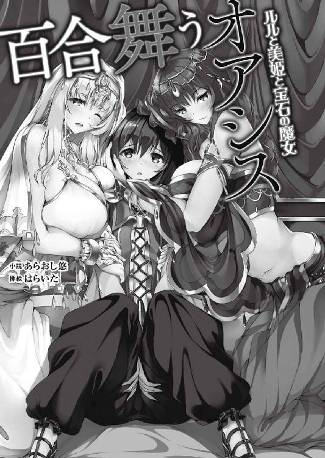
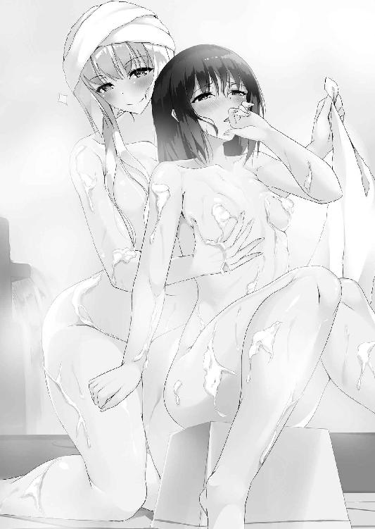

| 百合舞うオアシス ルルと美姫と宝石の魔女 (二次元ドリーム文庫) | |
| あらおし悠 | |
| (2015) | |

※本作品の全部あるいは一部を無断で複製・転載・配信・送信したり、ホームページ上に転載することを禁止します。本作品の内容を無断で改変、改ざん等行うことも禁止します。また、有償・無償にかかわらず本作品を第三者に譲渡することはできません。
※本作品は電子書籍配信用に再編集しております。
第一章 砂漠の国のお姫様
ルルの頭上から、強烈な陽射しが容赦なく降り注ぐ。
靴先まで隠す長いローブで全身を覆い、フードを目深に被って可能な限り日陰を作るけど、まるで効果がないかのようにジリジリと肌を焦がされる。旅立った時には真っ白だった腕の色も、この数日間で心なしか色づいてきた気がする。女の子としては、この絶え間ない光のシャワーから、一刻も早く逃れたいところ。
もっとも、周囲に広がる光景に比べたら、そんな苛烈な太陽光さえ、まだ優しかった。
ぐるりとを見渡しても、どんなに目を凝らしても、低木どころか一片の草すら生えていない。存在するのは砂だけ。身を隠せる場所なんて一切ない、完全なる砂漠。
こんな景色を見続けて、何日経っただろう。地形は必ずしも真っ平らではないし、低い山脈のようなうねりを多少は見せているものの、そんなものは風が吹いただけで容易く姿を変え、なんの目安にもなりはしない。自分がどちらから来たのか、どちらに向かって歩いているのかさえ、もう、ルルは分からなくなっていた。意識が朦朧として、なおのこと行く手を見失っていく。砂を踏む足が一歩ごとに重くなって、少しも先に進まない。
「み、水......。水......」
昨日から、同じ言葉しか口にしていない気がする。腰紐にぶら下がっている水筒はとっくに空っぽ。唇を湿らせるだけの唾液さえ、満足に出てこない。肩に斜め掛けした麻袋いっぱいに詰めてあった食糧も、昨夜、ついに底を突いた。
「残ってるのは、これだけか......」
麻袋の底から取り出したのは、細い鎖にいくつかの宝石を連ねた首飾り。作りは華奢だし、結構な年代物なのか、なんとなく古びている。けれども使われている宝石類はどれも綺麗だし、中でも、中央の大きな石は特別だった。
ルルは、それを太陽にかざしてみる。燃えるように深く、それでいて、どこまでも透き通った不思議な輝きが、顔に真紅色の影を落とす。その妖しさに、ここが砂漠であることも、喉の渇きさえ忘れ、思わず立ち尽くしたままいつまでも見つめたくなる。
これは、奉公先から脱走した際、路銀の足しにと思い無断拝借してきたもの。もちろん悪いことなのは承知の上。それでも、一切の財産を持たない自分には、旅先でお金にできるものが必要だった。
ここジャウハラ国は、宝石の貿易で栄えた国。近隣諸国への交易路上では、貴重な宝石や珍しい物品が当たり前のように飛び交っている。数日前まで自分が住んでいたのも、キャラバンが宿泊地としている大きな街で、自分くらい女の子が装飾品を商人に持ち込むのだって珍しくない。怪しまれない自信はあった。
もっとも、ルル自身は下働きの身なので、高価なものを見る機会なんて、実はほとんど皆無だった。それでも、目の肥えた商人が集う街に質の悪い品があるはずがない。唯一気になる点といえば、内側に陰のような色の濃い部分があるところだろうか。なんにせよ、売れればそれなりのお金になってくれるはず。
ただし、それも砂漠の真ん中でなければの話。
どんなに高価な宝石だろうと、換金できなければ意味がない。むしろ、この状況下では無用の長物。それでも金目の物はこれだけだし、捨ててしまうわけにもいかなかった。
「街に......街に着きさえすれば............」
そうすれば、この首飾りをお金に換えて、水と食べ物と、あわよくば住む場所だってなんとかなるかもしれない。それから仕事を探して、慎ましく暮らせれば──。
「そうだよ......。あたしは、普通に生きるんだから......。もう、あそこには、絶対に、戻る、もんか......」
渇いた口で切れ切れに呟きながら、首飾りを袋にしまおうとした、その時だった。
「......うわっ!?」
不意に、横から吹きつけた熱風に身体が煽られた。意外に強い風圧に抵抗しようと片膝を突いて踏ん張ったけど、さらさら流れる砂に足を取られて力が入らない。
「あ、あれ......あれれっ......？」
体勢を立て直すどころか、ぐらりと身体が斜めに傾いた。砂と空が半々だった視界が青一色になり、ずるずると仰向けで砂丘を滑り落ちた。
「動けない......」
滑落はすぐに止まったのに、立ち上がれない。砂の上に手足を広げて横たわったまま、身体を起こすことすらできなかった。それで初めて気がついた。自分が限界に来ていたのだということに。人並みより華奢で小柄な体格は、砂漠を渡るために必要なだけの体力を蓄えてはいなかったみたいだ。
上からは、遮るもののない太陽光線。下は熱々に焼かれた砂。全身くまなく高温で炙られ、身体の中に熱が堆積していくのを感じる。このまま転がっていたら、遠からず、間違いなく、蒸し焼きになってしまう。それが分かっていながら、指一本動かせない。
「熱......い......。あたし......死んじゃうのかな............」
少しだけ、後悔が頭をよぎる。あそこから逃げ出したのが間違いだったんだろうか。どんなに辛くても、あの仕事をした方がよかったんだろうか。娼館で、娼婦として。
幼い頃に両親を亡くし、身寄りのなかったルルは、街の娼館で働くしかなかった。子供だったので、さすがに客の相手をさせられることはなく、掃除や洗濯、娼婦たちの食事など、使用人として働いていた。
自分自身は娼婦ではないとはいえ、同世代の子供とは違う、いかがわしい世界に生きている後ろめたさが常に付き纏い、たまのお使いで街を歩くのさえ苦痛だった。だから、娼婦たちから時々聞かされる性に関する話にも、なるべく耳を塞いでいた。それでも娼婦たちは優しかったし、世話人として生きる分には、そこで暮らすこと自体に不足はなかった。
それなのに、数日前、館の主に命じられた。年頃になったし、お前もそろそろ客を取れと。そして客引き用に着飾るために、あの首飾りを渡された。
怖かった。どうしようもなく怖かった。いつかその日が来るかもとは思っていたけど、自分が客を相手にしている姿が想像できなくて、取り返しのつかない世界へ足を踏み入れるような不安に襲われ、気づけば、追い立てられるように屋敷を抜け出していた。
「取り返しがつかないっていうなら......もう、そうなってる......よ、ね......」
喉が渇ききって、声がしわがれる。きっと、身体もカサカサになっているんだ。こんなところで死にたくない。でも、もう、立ち上がる体力も気力も残っていない。
いいことなんて、なにひとつなかった十数年の短い人生。このまま生き続けても、幸せなんてものが自分に訪れるとは思えない。だったら、ここで終わらせてしまってもいいんじゃないだろうか。そんな諦めが、死への恐怖を覆い始めた。疲れ果てて泥のように眠る時よりも、もっと重たい気だるさが、身体に押し掛かってくる。
ふと見た指先に、あの首飾りが絡みついていた。赤い宝石が、こんな時なのに、まるで自分の存在を誇示するように鮮やかに光り輝く。しかし、視界が暗くなり、その強力な瞬きさえ見えなくなってきた。いよいよかと、心のどこかで悟る。
それから、どれくらい時間が経っただろう。数時間、もしかしたら、ほんの数秒程度だったのかもしれない。遠のき始めた意識の中で、人の声が聞こえた気がした。
──姫様！ 姫様！ そのようなものに近づいてはいけません、汚らわしい！
──いいえ、息があるわ！ まだ間に合います！
こっちはこんなに眠いのに、なんて騒がしいんだろう。呑気にそんなことを思いながら、最後の意識が闇に落ちた。
「............ひあぁぁぁっ!?」
額になにかが貼りついた。そのあまりの冷たさに、跳ねるように飛び起きる。自分にまだそんな力が残っていたことにも驚きだけど、それよりも、周囲の状況の激変ぶりに、まず混乱させられた。
寝ていたのは、熱砂の上なんかではなく、五人は余裕で乗れそうな大きさの、雲のようにふわふわのベッド。彩色タイルで飾られた石造りの部屋は、透かし彫りの衝立で強い太陽光を遮り、しかも、どこからか涼やかな風がそよいでくる。見れば、部屋の一角は扉が大きく開け放たれ、回廊の向こうに、陽の当たる中庭と、高々と噴き上がる水柱が何本も見える。その噴水の壁が、部屋に流れ込む風を程よく冷やしているらしい。
夢見心地に快適なベッド、その上には紗の天蓋、派手な彩色の壺やら皿やら人形やらの焼き物。奉公先にも似た物は多々あったけど、それらがいかに安価な代物であったか、ここに並ぶ本当のお宝と見比べれば一目瞭然。あまりにも心地よくて、綺麗で華やかな空間。奴隷のように働いていた自分には、似つかわしくない、現実感に乏しい部屋。
「......そっか。ここ、天国なんだ」
砂漠の真ん中で倒れたのは、うっすらと覚えている。それなのに、突然こんな豪奢な部屋に移動できるわけがない。めでたく天に召されたと考えれば納得がいく。
「んー。残念ながら、天国ではないわね」
耳に、部屋をそよぐ涼風のような、それでいて蕩けるように甘い、おっとりした声が囁きかけてきた。傍らに目をやれば、ひとりの少女がベッドに頬杖を突いて微笑んでいる。
「....................................うわあぁっ!!」
まさか人がいるなんて思わなかったから、心臓が飛び出るほど驚かされた。広すぎるベッドから転がり落ちそうな勢いで後ずさり。少女は、そんなルルの無様にも動じることなく、銀製の水差しと小さな銀杯を差し出した。
「はい。お水、飲む？」
水。その言葉に、忘れかけていた渇きが急激に戻ってきた。器に注ぐのももどかしい。たおやかな手から水差しを奪い取り、直に喉に流し込む。
「ん、んぐ、ごく......んッ、げほっ！ はぁはぁ......んぐ、んぐ、んぐぐぐっ」
「そんなに慌てないで。落ち着いて飲んで大丈夫よ」
そんな忠告なんて聞いていられない。カラカラの身体に、冷水が隅々まで染み渡る。それも凍えるような冷え方で、頭が痛くなったほど。それでも渇きの解消を最優先に、時おり一気に飲み込みすぎてむせながら、舌を伸ばして最後の一滴まで貪った。
「はぁ、はぁ......ん、ふ......ふぁ～......」
水が喉を通り過ぎ、お腹の中に溜まる感覚で、ようやく生きている実感が湧いてきた。けれども、これじゃまだ足りない。おかわり欲しさに、我を忘れて水差しを突き出す。
その手が、固まった。少女が、穏やかな表情でこちらを見ている。不作法を咎めるでもなく、浅ましい姿に呆れるでもなく、優しそうな笑みを浮かべて。
「あ......あの、えっと............。あり......ありがとう、ございました......」
おずおずと返した水差しを、彼女は傍らの小さなテーブルに置いた。たったそれだけの仕種がとても優雅で、育ちの良さを窺わせる。今の自分の品のない振る舞いと比較して、恥ずかしいより居た堪れない。
しかも、自分の格好をよくよく見れば、靴やローブこそ脱がされているものの、砂漠を逃走中の時のまま。シャツもベストもズボンはもちろん、足の裏まで砂まみれで、せっかくの純白シーツが台無しに。恥ずかしさと申し訳なさで、冷えたはずの身体が再び熱くなってきた。顔を背けながらベッドの端まで移動して、少女との間に距離を取る。
「あなた、砂漠の真ん中で倒れていたのよ。覚えてる？」
でも、ゆっくりと立ち上がった彼女の姿に、ルルは返事も忘れて息を飲んだ。一度は逸らした視線が釘づけになる。
波打ちながら腰まで流れる、長い金髪。陶器のように白い肌。短い黒髪で、日焼けした自分とは大違い。でも、なによりも目を引いたのは、豊かで大きなふたつの膨らみ。見るからに柔らかそうなのに、弾力で胸当ての布が今にもはちきれそう。そのくせ腰は折れてしまいそうに細く、余計なお肉の一切ない滑らかなお腹に、綺麗な縦長のお臍が際立つ。自分の貧弱な身体がみじめになるけれど、それよりも、おっとりたおやかな少女に似つかわしくない色気に、ルルはなぜか、同性を見ているとは思えないほど赤面していた。
「ねえ、聞いてる？」
「は、はい......ひぁっ!!」
ぼんやりと見惚れていたら、返事がないことに焦れた彼女がベッドに上ってきた。四つん這いで小さなお尻を振りながら、顔をぐいっと近づけてくる。自分を見つめる深い碧の瞳に鼓動が高鳴って、まともに視線を合わせられない。うろたえた眼が辛うじて捉えられるのは、彼女の動きに合わせて揺れる、精緻な細工の額飾りだけ。
（ど、どうしちゃったんだろう......）
ルルは、自分の身体の異常な反応に戸惑った。迫る瞳から逃げるように後ろ手を突き、立てた膝をモジモジと擦り合わせる。
姿形が綺麗な女性なら、娼館にもたくさんいた。けれど、こんな風に微笑む人はいなかった。ぽってり柔らかそうな薄桃色の唇を綻ばせ、優しそうに目尻を下げて、子供のように愛嬌のある、飾らない笑顔。それでいて、高貴な気品に満ち溢れている。
（天国でもないところに、こんな綺麗な人がいる？）
怖いほど澄んだ、碧の瞳から目が離せない。せいぜい、あわあわと唇を震わせるだけ。
「まだ熱があるみたいね。無理もないわ。あなた、丸三日も気を失っていたんですもの」
「そ......そんなに!?」
それを聞いたら、生き返った気分が失せてきた。クラクラと目眩が戻ってきて、身体を起こしていられない。
「はい、これでもおでこにのせて寝てなさい」
「ひぁあぁっ!?」
ぴとっと、濡れタオルを額に当てられる。目を覚ました時に感じたのは、これだったらしい。言われるまでもなく、倒れ込むようにしてベッドに横たわる。
「ごめんなさいね。意識が戻ったばかりなのに、騒がしくしてしまって」
「い、いえ......」
少女の手が、布越しに額に当てられた。優しい感触なのに、なぜか無性に緊張して身体が硬くなる。布団をたぐり寄せて顔を半分隠し、彼女を見上げる。
「あの......あなたが助けてくれたんですか？」
やや垂れ目気味の瞳を細め、コクリと頷く金髪美少女。そういえば気を失う間際、会話が聞こえていた気もする。真っ先に確かめるべきことなのに、自分のことしか考えていなかったのが恥ずかしい。ともかくお礼を言おうとしたら、なにかを思い出したように彼女が両手をパンと合わせた。
「そうそう。まだお名前を聞いていなかったわ」
「あ、そうですね。自分は、その......えっと............」
どう名乗ろうか、逡巡した。自分は、長年仕えた奉公先での仕事に怯え、盗みまで働いた脱走者。こんな小娘一人を捕まえるために、砂漠を渡ってまで追っ手が来るとは思わないけど、万が一ということもある。ここは偽名を使っておくのが無難だろう。
と思ったのに、彼女の好奇心に輝く瞳に追い詰められて、頭が全然働かない。
「............ルル、といいます」
結局、なにも思いつかずに、正直に本当の名前を教えてしまった。
「ルル？ ずいぶんと......その、可愛らしいお名前なのね」
金髪少女は唇に指を当て、不思議そうに小首を傾げる。彼女の反応に、ルルも違和感を覚えた。普通に名乗っただけなのに、なにか変なことを言っただろうか。
（もしかして......上流階級の人たちの作法と違ってた、とか？）
やり直そうにも、そんなもの知らない。自分の育ちの悪さを恨んで唇を結びながら俯くと、金髪少女は、それを不満のサインと勘違いしたらしい。今度は彼女が申し訳なさそうに苦笑いし、姿勢を正した。
「先に名乗らせてしまって失礼したわ。わたしは、ファイルーズ。親しい人にはファイと呼ばれているわ。あなたも、そう呼んでくれる？」
「え？ えっと......ええっ？」
屈託のない笑顔に、ルルはかえって戸惑った。
初対面の相手にいきなり愛称なんて、いくらなんでも馴れ馴れしすぎるだろう。かといって嫌ですというのも失礼。困って視線を泳がせていると、彼女は瞳を過剰にキラキラ輝かせながら「さあ呼んで」と迫ってきた。物腰はおっとりとしているのに、なかなか強引な御仁のようだ。
「ええっと、じゃあ......。ふぁ、ファイ......」
「姫様！ ファイルーズ様ぁーっ!!」
お言葉に甘え、名前を呼ぼうとしたルルの小さな声を、何者かの大音声が遮った。石造りの部屋がビリビリ震えるような大迫力に、思わず目を見開いて耳を塞ぐ。
「また下賤の者の世話などを！ 姫様のなさることではありませんと何度言ったら！」
ツカツカと足音を立てて部屋に入ってきたのは、初老の女性。凄い剣幕だけど、ファイルーズと名乗った少女は、慣れているのか涼しい顔。
「でも、ばあや。誰もこの子の世話をしようとしないんですもの。だったら、わたしがするしかないじゃない？」
「そのような汚い小僧など、適当に水でも与えて放り出せばよいのです！ そもそもっ、姫様のお部屋に寝かせるだけでも前代未聞！ 不敬極まりないというのに！」
「──小僧？」
なにか誤解があるような気がするけれど、それよりもルルは、もっと聞き捨てならない言葉に気を取られていた。初老の女性は、この金髪少女のことをなんと呼んだだろう。
「あの、すみません。......お姫様って？」
おずおずと尋ねると、女性はキッと厳しい視線でルルを睨んだ。
「控えなさい！ この方は、我がジャウハラ王国第二王女、ファイルーズ姫なるぞ！」
さらに二日ほど経って、ようやくルルは建物の中を歩き回れるほどに回復した。白い柱の回廊に囲まれた中庭で立ち尽くし、高々と上がる噴水をぼんやり眺める。
お金持ちの屋敷っぽいと思っていたけれど、まさか王族の離宮だったなんて。しかもその主は、清楚可憐な美少女と王国内で最も人気の高い、ファイルーズ姫。隣国での外交のお仕事の帰り、砂漠で倒れているルルを彼女が見つけてくれたらしい。
畏れ多くもその御寝所に、平民以下の分際の、使用人風情が三日も寝ていたわけだ。部屋を貸してくれただけじゃない。食事を持ってくるのも、身体を拭く水や着替えを持ってきたのもファイルーズ。どこの誰とも知れない行き倒れ者の世話を、お姫様がすること自体おかしな話なのだけど、周囲がそれを許しているのも、また不思議だった。
「だって、誰もあなたに触ろうとしないのだもの。汚いとか怖いとか言って」
昨日、食事の際に思いきって尋ねてみたら、そんな答えが返ってきた。よく伸びる頬を義憤にぷっくり膨らませながら。
「誰も好きで行き倒れる人なんていないのに、失礼な話よね。それで、ちょっと腹が立ってしまったものから、わたし以外、あなたに触るなと命じたの」
怒ってくれるのは嬉しいけれど、警戒する方が普通だろう。このお姫様は、ちょっと変わり者なのかもしれない。ただ、さすがは王族屈指の人気者。家臣たちへの気遣いも忘れていなかった。
「でも、怒らないであげてね。ここって従者も衛兵もほとんど女性ばかりだから、どう男の子と接すればいいのか分からないの。......わたしも含めてね」
「は、はぁ......」
どうやら彼女たちは、ルルを男と思い込んでいるみたいだ。それも、姫様よりもずっと年下の子供だと。話を聞く限り、彼女の方が二歳上なだけなのに。この人並みより小柄な身体と、人並み外れて小さな胸が、そんな誤解を与えたらしい。
訂正しようとは思わなかった。自分は逃走者。本名を名乗ってしまった以上、性別くらいは偽っておいた方が、追っ手の目を逃れるためには好都合。それに、お姫様の庇護の下にいられるなんて、こんなに安心なことはない。
とはいえ、いいことばかりでもなかった。お姫様の関心を独占したおかげで、ルルは宮殿中の恨みを買ってしまったらしい。侍女や衛兵から向けられる視線がチクチク痛い。中でも一番厳しいのは、目を覚ました時に怒鳴り込んできた女性。侍女長だったらしく、いわば、この宮殿でファイルーズの次に偉い人。大事な姫様が、正体不明の「男の子」の世話に夢中になって、穏やかでいられるはずもない。
「起き上がれるようになったのなら、とっとと出てお行きなさい」
城の主の見ていないところで、何度凄まれたことか。もちろん自分も長居できるとは思っていない。けれど、すぐには出て行けない事情があった。追っ手に捕まり、娼館に連れ戻されるかもしれない。そんな見えない幻想に怯えて、身動きできないでいた。
もしかしたら、一生、逃げ隠れしなければいけないんだろうか。世間知らずでなんの力もない、知恵もない、普通以下の女の子が生きられる場所なんて、多分、あそこの他になかったのに。でも、見知らぬ客に身を任せるのは、何度想像しても怖かった。
逃亡したことへの後悔と、娼婦として生きることへの不安。心の中で天秤がぐらぐら揺れて、どうするのが正しかったのか判断できない。
「あー、もぅ！ 頭の中、ぐちゃぐちゃだよぉ......」
難しいことを考えるのは大の苦手だ。もやもやする頭を衝動的に掻き毟る。
「............あれ？」
嫌なことに気づいてしまった。ちょっとばかり、汗臭い。昨日、一応は水で身体を拭いたけど、ちゃんとしたお風呂には入っていない。
「さすがに、これは......」
ルルのいた娼館は、その街一番の高級店として有名で、その地位を維持するため、下働きにも常に清潔さを求められていた。だから、何日も入浴しなかったのは数年ぶり。こんな状態でお姫様のベッドを借りていたなんて、今さらながら失礼極まりない。
「............よし、お風呂行こう」
気になり出したら止まらない。というか、女の子として許されない。
「とはいっても......お風呂ってどこだったかな」
一度だけそれらしい場所を見たけれど、その時はなんとなく通り過ぎてしまい覚えていない。第二王女用の別邸とはいえ、曲がりなりにも宮殿。広さもさることながら、どこを見ても立派な回廊や扉が並び、どれがなんの部屋なのか、庶民には見分けがつかない。
「ていうか、なに？ 子供ひとりひとりに屋敷を与えてるって、どういうこと？」
裕福な国の王族とはいえ、国民は不服じゃないんだろうか。そのお姫様の寝所を貸し切りにした不届き者が文句を言えた話ではないけれど。
「......と、ここだ」
鮮やかな青で彩色された、大きな扉。舞い踊る水の精霊のレリーフには見覚えがある。扉を開けると、脱衣所らしい小部屋があって、その奥にもうひとつ、木製の引き戸が。幸い誰もいないみたいだし、服を脱ぐ前に浴室かどうか確認しようと中を覗き込んだ。
「ふわぁ、なにこれ......」
感嘆した。というより呆れた。その広さに。浴室とは思えない煌びやかさに。
姫の寝所の、軽く四倍はあるだろう。無駄に広い空間は小さな声さえ幾重にも反響し、まるで劇場にいるかのようだ。肝心の浴槽は余裕で泳ぎ回れそうだし、美女の彫像が抱えた壺から、新しいお湯が絶え間なく注がれている。中庭の噴水もだけど、砂漠で一滴の水に飢えていたのが馬鹿馬鹿しくなるほどの無駄遣いっぷり。
「床も浴槽も大理石だぁ。大金持ちの商人でも、滅多に手に入らないって話なのに......」
産出国が遠くて、あまり大量に輸入できないので、このジャウハラ王国では宝石より高値が付いているくらい。それをこれだけふんだんに、しかも離宮のお風呂なんかに使っているなんて。長年ルルが暮らしていた、ベッドひとつの部屋とは大違い。比べるものじゃないことは分かっていても、憧れる気持ちを抑えられない。
「すごい......すっごぉーい......！ と、いっけない」
いつまでも見惚れている場合じゃない。早く汗を流そうと、服を脱ぎながら脱衣室へ引き返す。でも、その前に木製の引き戸が開いて、白い身体が行く手を遮った。一糸纏わぬ裸の女性が、目を見開いてルルを見ている。ルルも、女性を凝視した。ふたりとも突然のことに硬直し、言葉も出せない。
「きゃ......」
そこに立っていたのは、ファイルーズ。お姫様の全裸にこちらの方が驚いて、悲鳴を上げかけた。しかし彼女は、それより早くルルの口を塞ぎ、そのまま引きずって一緒に頭から浴槽に飛び込んだ。派手な水音に、ふたりの侍女が引き戸から顔を出す。
「ひ、姫様！ どうなさいましたか!?」
「なんでもないわ。ちょっと転んじゃって。あ、あー。そうだぁー。今日はなんだか、ひとりで入りたい気分。あなたたちは下がっていいわ」
お姫様の演技は、下手くそで白々しい。もちろん侍女たちは簡単には承服しない。
「そんなわけにはまいりませんっ。姫様のお世話を怠ったら、わたくしたちが侍女長に叱られてしまいます」
「ばあやには黙っててあげるから、たまにはワガママ言わせて。おねがぁい」
「そう......ですか？ で、では......なにかあったら、すぐにお呼びくださいませ」
甘えた声に押しきられ、侍女たちは渋々、浴室から出て行った。もっともルルは、その様子を目で確認することができなかった。なぜなら、浴槽の底で、お姫様に伸し掛かられていたから。背中には裸のお尻が乗り、頭も片手で押さえ込まれる。
（ふがっ......ふぐ、んぐぐぐ......ンぐぅ！）
いきなり沈められたせいで息が続かない。口を押さえた両手の指の間から、空気がどんどん漏れていく。砂漠で倒れた時以上に苦しい。気が遠くなりかける。もう窒息すると思った寸前。急に身体の圧迫感がなくなった。
「ぷ......はあぁぁぁぁ!!」
浅いお湯から急浮上し、思いきり空気を吸う。十数回も深呼吸して、ようやく息も気持ちも落ち着いてきた。
「は......はっ、けほけほ......。び、びっくり......した......。死ぬかと、思った......」
「びっくりしたのはこっちよ」
しかし背後からの怒った声で、せっかく戻った呼吸が乱れる。振り返ると、ファイルーズが唇を尖らせていた。お湯に濡れた長い金髪が、肌に絡みついている。両腕で押さえられ、深さが強調された乳房の谷間に、水滴が吸い込まれていく。その様に息を飲んだ。同性の裸なんて、娼館で飽きるほど見ていたはず。なのに、心臓が無闇にドキドキする。疲れきった娼婦とは違う、彫刻よりも綺麗な肌が、ルルにいけないものを見た気にさせる。
「ひひひ、姫様......っ！ あ、あの......あの......」
「ダメじゃない！ ここは、わたし専用のお風呂なのよ？」
言われてルルは「あっ」と声を上げた。こんな豪勢なお風呂、宮殿の主人か、そうでなければ来客用に決まっている。ちょっと考えれば分かりそうなものなのに、浮かれて全然気がつかなかった。ただ、ファイルーズが怒っているのはそれだけじゃなかった。
「そうでなくても、男の子が侵入したなんて知れたら、ばあやに殺されてしまうわ」
そうだった。自分は男ということになっているのだった。だからなのか、彼女も懸命に身体をくねらせ胸を隠そうとしている。
白い肌がピンクに染まるのを見ていたら、なんだかルルまで緊張してきた。見てはいけないと思っても、なだらかな肩や、細い腕では隠しきれない乳房に、どうしても目が奪われる。一刻も早くこの場を立ち去ろうと思っているのに、身体が動いてくれない。
「ご......ごめんなさいっ！ すすっ、すぐ出て行きま......きゃあッ！」
「あぶないっ！」
意思に逆らう身体に鞭打ち強引に立ち上がったら、浴槽の底で足が滑った。仰向けにひっくり返ったルルを、ファイルーズが咄嗟に受け止める。
「あぷっ、ぷぁっ、ふぁ、ンふぁ！」
「慌てないで。大丈夫だから」
溺れて暴れる身体を、彼女は優しく抱き締めてくれた。その裸身に必死になってしがみつき、ようやく落ち着きを取り戻す。でも──。
「............あら？」
彼女の目が、不思議そうに開いた。その手は、なんの拍子かルルの胸にぺったり当てられている。そこの違和感を確かめるように、むにむにと揉み始めた。
「............きッ、きゃあぁぁぁっ!!」
悲鳴を上げながらお湯を掻き分け、広い浴槽の角で身をかがめた。両腕で必死に胸を隠す。お姫様のそれと違って、余裕で覆えてしまうのが悲しいけれど、そんなことを気にしている場合じゃない。水面に波紋を描きながら、金髪姫様がゆっくりと近づいてくる。わずかな希望さえ抱く間もなく、彼女は真実を言い当てた。
「あなた......もしかして、女の子？」
ビクンと小さく肩が跳ねる。それが、彼女への答えになった。
（ばれた......ばれちゃった......）
もし、砂漠で行き倒れた女の子がいたなんて話が街に漏れたら。それが、追っ手の耳に入ったら。娼館に連れ戻される自分の姿が頭の中を駆け巡り、お湯に浸かっているとは思えないほど蒼白になって震え出す。砂漠を歩いていた時には、逃げ出したことをちょっと後悔したくせに、奇跡的に命拾いしたおかげで、捕まりたくないと欲が出てきている。
「ちょっと、よくお顔を見せてくれる？」
彼女は両手でルルの頬をやんわりと挟み、興味深げにまじまじと瞳を覗き込んできた。
「本当。よく見たら、綺麗な眼をしているわ。睫毛も長いし、頬だって、こんなに柔らかくて......唇も可愛い。どうして男の子のふりなんてしていたの？」
最初に誤解したのはそっちだろう。でも、こちらがその誤解を利用したのは事実。
（娼婦になるのが嫌で逃げた、なんて、お姫様には言えないよぉ......）
答えられずに黙るルルを、彼女は深く追求はしなかった。それどころか、女の子と分かって緊張感が解けたのか、ほっぺたを摘んだり引っ張ったり、にこにこと弄ぶ。
「なーんだ。女の子だったのね。それならそれと言ってくれればよかったのに。よしっ、せっかくだから一緒にお風呂にしましょ。ほら、その濡れた服を脱いで脱いで」
「はぁ。............はあ!? ちょ、ちょっと待っ......やあぁぁぁん！」
戸惑うルルのシャツやズボンを、彼女は躊躇なく剥ぎ取った。実はやっぱり男だった、なんてことは一切疑っていない。バシャバシャとお湯を跳ね上げながら抵抗するも、下着まで奪われて完全に裸にされてしまった。
「うわぁ......本当に女の子なのね。身体も手足もこんなに細いし......それに......んふ、ちゃんとおっぱいがある」
「やん！ ひ、姫様っ。やめてください......」
ツンと乳房を突かれて、ルルは胸を隠して身体を捩らせた。触られたことではなく、彼女とは比べ物にならない、自分の胸の貧弱さが恥ずかしくて。こうして並ぶと、その差は歴然。場合によっては、このままでも男で通せたのではという気にさえなる。
「さあ、いつまでも固まってないで。洗ってあげるわ」
洗い場に移動したファイルーズが手招きする。
「そんなっ、畏れ多いです！ 姫様がなさることではありません！」
「いいから来なさい。逆らうとぉ......大声で人を呼んじゃうわよぉ」
下層市民がお姫様に身体を洗ってもらうなんて前代未聞。渋ったら、明るく可愛く脅された。さすがに本気とも思えなかったけど、そう言われたらルルには逆らえない。
（ううっ......女の子ってばれただけなのに......）
本来なら、なんら後ろ暗いことじゃないのに、それが弱みになってしまった。観念し、壁際に設えられた水道の前にぺたりと座り込む。
「んふふー、よろしい」
なにが嬉しいのか、ファイルーズは弾んだ声でルルの頭を洗い始めた。お姫様とは思えない手際のよさで、髪の間の砂埃が綺麗に落とされていくのを感じる。頭がさっぱりしたところで、彼女は次に、たっぷり泡立てた石鹸を背中いっぱいに塗り広げた。
「どう？ 気持ちいい？」
「は、はい......。ん、ん............んくぅっ！」
確かに気持ちいい。気持ちいいのだけど、ちょっと困っていた。こんな風に他の誰かに触られるのなんて初めてだから、肌が過敏に反応し、ピリピリと妙な痺れに襲われた。掌が肩をなぞり、指先が背中を撫で上げるたび、変な声が喉の奥から漏れそうになる。
それにしても、彼女の手つきには躊躇を感じない。背中から、脇腹、そして前に手を伸ばし、お腹の辺りを念入りに擦る。お姫様とは思えない、痒い所に手が届く丁寧さ。
「あ......あのっ、姫様......ンッ。誰かを洗ったこととか、あるんですか......くんっ！」
「んー。侍女には毎日洗ってもらっているけど、してあげるのは初めてよ。慣れているつもりだけど、されるのとしてあげるのでは全然勝手が違うのね。加減が難しいわ」
このピリピリは、彼女の手加減のせいらしい。もっと強くしてくれてもいいくらいなのだけど、してもらっている分際で注文なんてつけられない。
「今度は、ここね」
「あ、んッ！」
お臍の窪みを薬指でくすぐられ、ルルは小さく悲鳴を上げた。自分で洗った時にはありえない不思議な痺れが、お腹の奥から脚の付け根の間を、一瞬、雷のように走り抜ける。
（な......なに、今の............？）
雷撃のように強烈なのに、どこか甘い。この感覚を、ルルは知っていた。
「華奢な身体......。こんなに細いのに、どうして男の子だなんて思い込んだのかしら」
ファイルーズが、おかしそうに笑う。それはきっと、自分があなたのように綺麗じゃないから。そう言いたかったけど、叱られそうな気がしたので黙っていた。
「ねぇルル。あなた............どうして男の子のふりなんてしていたの？」
「......え？」
わずかな沈黙の後、さっきは引っ込められた質問が、逡巡しながら繰り返された。
「だって、わたしの離宮にいるなら、女の子のままでいる方が怪しまれないはずよ。それなのに、あえて男の子のように振る舞っていたのには、訳があるのでしょう？」
「それは......」
「聞いてはいけないと思ったのだけれど......ごめんなさい。どうしても気になってしまって。......あなたは、どこから来たの？」
好奇心と、気遣いと。きっと訳ありと思って詮索しないでくれていたのだろうけど、葛藤の末、ついに好奇心が勝ってしまったみたいだ。
正直に話せば、あるいは同情してくれるかもしれない。それでもやはり、彼女にルルの悩みが理解できるとは思えなかった。なにより、やはり居場所がばれて娼館に連れ戻されるのが、怖い。身勝手な理由に、どうしても口が重くなる。
「ごめんなさい......」
それだけを、やっとの思いで絞り出した。あれもこれも秘密で、申し訳ない気持ちでいっぱいになる。彼女は、命の恩人なのに。
「いいえ、わたしの方こそ無神経だったわ。もう聞かないから安心して」
「で、でも......！ 怪しいとは思わないんですか？ もしかしたら、わたし、姫様を狙う悪い奴かもしれないんですよ!?」
ありがたいけど、いくらなんでも物分かりがよすぎる。無警戒すぎる。非難の声で振り返ると、彼女は「そんなわけないじゃない」と愉快そうにころころ笑った。
「もしルルが悪い人なら、もっと上手な言い訳をするでしょ？」
呆気に取られた。どこの誰とも一切明かさない怪しい者を、叩き出すどころか無条件で信じるお姫様がどこにいるだろう。自分の隠し事を棚に上げて呆れ、それ以上に、彼女の気遣いに胸が締めつけられる。心の中で、何度も何度も謝罪する。
「さ、そんなことより続きをしましょ。今度はこっちを洗ってあげるわ」
暗くなりそうな雰囲気を振り払おうと、ファイルーズが明るい声で話を打ち切った。再び手が動き始める。でもその行方に、ルルは激しく動揺した。
「あ、あの姫様......。そこは自分で......」
「遠慮しなくていいから。無用な詮索をしてしまったお詫びよ」
「そ、そういうことじゃなくて......きゃ......あぁんっ」
細い指が、なだらかな胸を撫でる。捏ねるように、揉むように、石鹸の泡を纏わせて。先端の突起を掠めるたび、ピクピクと細かく身体が跳ねる。ほんの微弱な痺れなのに、背中や腰が強張る。自分の身体に起きていることが理解できず、怖くなって身じろぎする。
「あの、姫様......！ ほ......本当に、いいです......からっ！」
「だめっ、暴れないで。それから、姫様じゃなくてファイって呼んでって言ったでしょ」
まだルルが遠慮していると思ったのか、両手を回して抱きついてきた。まるで小山のような彼女のふたつの膨らみが、背中にぐぐっと押しつけられる。しかも、綿のように柔らかい中に硬い突起を感じ、鼓動が激しく跳ね上がった。
（うわ......うわぁぁ......！）
お姫様の乳房と乳首に直に触れるなんて、なんと不敬極まりない大罪。もしこんなところを家臣の誰かに見つかったらと思うと、全身が委縮する。
それなのに、お腹が、脚の間が、熱い。変なうずうずが生まれて、どうすればいいのか分からず、腿の間に手を挟んで身を捩る。それを、胸を触られ恥ずかしがっていると解釈したのか、ファイルーズはあからさまな動きで乳房を揉み始めた。

「ひ......姫様......。ちょ......困りま......す、ぅン！」
「姫様じゃなくて、ファイよ。さあ呼んで」
「だ、駄目です姫さ......みゃあぁッ！」
聞き分けのないルルの乳首が、キュッと摘み上げられた。鮮烈な痺れが身体を走り、仰け反った身体が彼女にもたれかかる。背中で大きな乳房が潰れ、肩甲骨辺りを硬い乳首に突かれる。彼女は、女の子同士の気安さで遊んでいるだけ。そうと分かっていても、こんなに肌と肌が密着したら、冷静でなんていられない。反応を確かめるように、ファイルーズが肩越しに覗き込んできた。その横顔を、陶然となった瞳で見つめ返す。
（姫様、綺麗......）
湯気の中に仄かに浮かぶ白い肌と、濡れた金髪。背中に触れた胸から、鼓動が伝わる。長い睫毛の瞳が、悪戯っぽく細められる。その妖しい輝きに、思考がぼやけてくる。そして、薄桃色の唇の動きに誘われるように、ルルは、彼女の名前を呼んだ。
「ふぁ......ファイ、様ぁ......」
自分でも驚くような、蕩けるように甘えた声。動いてくれない彼女に焦れて、自らファイルーズの手に胸を押しつけようとしたら、不意に彼女の身体が離れてしまう。
「はい、よくできました」
「ぷひゃあ!?」
どうしてと思うより早く、頭から大量のお湯をかぶせられた。不意打ちに変な悲鳴が口から飛び出す。彼女が手桶を高々と掲げていた。石鹸を流してくれたらしい。
「さ、綺麗になったわ。もう一度お湯に浸かったら、部屋に戻りましょう」
いつもの屈託のない表情で、ファイルーズが微笑む。でも、ルルの胸の奥には、自分でも正体の分からない黒いモヤモヤが、洗い流しきれずに残っていた。
（あたし、何を期待したんだろう......）
夜中、ルルはひとりベッドの中で悶々としていた。今日は満月がやけに明るく、煌々とした月光に照らされて、灯りを消しても眠気に誘われない。そうでなくても、昼間に浴場で見たお姫様の裸身が繰り返し脳裏に甦り、気分が高揚している。
肌を、胸をまさぐられ、もっと凄いことが起きるんじゃないかと、期待が不安を押し退けた。けれどなにも起きなかった。結局あのまま入浴を終え、食事も別々。でもそれは、ルルにとって安堵するべきことのはず。
（あたし......そういうことが嫌で逃げ出したのに......）
誰かと身体を重ねる行為。娼館の主に仲間の仕事ぶりを見ろと言われ、初めてその場面を目撃した時、ルルは戦慄した。普段はたおやかな女性が、その最中には顔を顰め、獣のような呻きを上げて、まるで別人のように変わっていた。彼女たちの表情はとても苦しそうで、わざわざお金をやり取りしてまで求めることには、とても思えなかった。
自分もああなってしまうんだろうか。女性の豹変した姿が、あの日の衝撃が脳裏に焼きついて離れない。お腹が熱くなって、息が苦しくなって、なぜそうなるのかが理解できなくて、そして、逃げた。
今ルルを襲っているのは、あの時と同じ感覚。むしろより強く、脚の間が激しく疼く。雑用係とはいえ、あんな環境にいて、今さら女性に接して動揺なんてするはずがない。
それなのに、彼女を想うだけで、胸の奥でなにかが蠢いた。自分を見つめる碧い瞳が平静を奪い去る。彼女の笑顔が眩しすぎて、思い出すのさえ辛い。
「あたし......一体どうしちゃったの？ 女の子相手に、なにを悩んでるの？」
ベッドの上を悶え転がると、椅子の背もたれにかけられた麻袋が目に入った。薄汚れたそれが、自分の身の程を思い知らせる。
お姫様と比べるまでもない。最下層といっても過言ではないルルの身分。それを知っても、ファイルーズは微笑みかけてくれるだろうか。抱き締めてくれるだろうか。
怖かった。同じ年頃の女の子に、あんな無防備に優しくされたことが。そんな経験がないから、信じていいのか分からない。なのに、だからこそ、その優しさを失うのが無性に怖い。彼女から微笑みが消える瞬間を想像するだけで、胸が苦しくなってくる。
「姫様......ファイ、様......」
溜め息を吐く。なにもしていないのに声が漏れる。下半身が勝手に動いて、右に左に転がり出す。寝ていればその間に鎮まるはずと、静かに目を閉じた。目蓋の裏に、ファイルーズの無垢な笑顔が浮かび上がる。それが自分に向けられなくなる不安が、ルルを焦燥に駆り立てた。眠ろうとする意思とは裏腹に、股間は熱くなるばかり。次第に我慢できなくなって下着の上から両手で押さえた。でも、その程度で身体の異変は止められない。衝動的に、右手が下着の中にするりと滑り込む。
「あたし、どうして......うっ！」
背中が仰け反った。痺れが下半身から頭のてっぺんまで一気に駆け抜け、堪えきれない呻きが喉から迸る。ルルの指は、ごく自然に自分の性器をまさぐった。まだ誰にも触れられていないまっさらな恥裂を、中指が上下に擦り上げる。
「あ、やだ......こんな......。でも......でも、あ......はぁ......あぅ、ンふ......っ！」
前にも何度か、自分の身体を慰めようとしたことがあった。その時は性行為への嫌悪や怖れから、すぐに手を引っ込められた。なのに、今夜はまったく止まる気配がない。股間の焦燥を鎮めようとして、そこだけ別の意思を持った指が亀裂を掻き回す。
「ど、どうして......？ こんな......やぁぁ......！」
クチュクチュと卑猥な水音が、真夜中の静かな寝室に響き始める。どうしてそんなものが聞こえるのか分からないまま、次第に大きくなる粘着音に、背筋で鳥肌が立った。
「だ、駄目......こんなの......。駄目だってば......！」
左手で右手首を掴み、股間から引き離そうとする。けれども指先は離されまいとするように、恥裂の奥の、中央の窪みに潜り込んだ。
「う、きゅっ！」
指先が、ほんの少し食い込んだだけなのに、まるで身体全体を押し広げられるような衝撃。ルルは溺れる者が救いを求めるように、左手で自らの胸に掴みかかった。でもその行為は新たな衝撃を生んだだけ。乳房から、そして胸の先端から堪らない痺れが走り、細い腰を大きく跳ね上げる。
「ふッ......あぁぁうッ!!」
ルルは無意識のうちに、自分の胸を揉みしだいていた。浴場でそうされたように、掌にすっぽり収まる小振りな乳房に指を立て、円を描くように捏ね回す。シャツの粗い生地が先端の敏感な芽に何度も擦れ、そのたびに頭の中が真っ白になっていく。
「やだ......これ、すごく......」
自分の身体を襲う感覚を、口にするのが怖い。溢れ出しそうな言葉を、唇を噛み締め喉の奥に押し戻す。きっと今、娼館の女たちのように自分の顔も歪んでいる。それが分かっているのに、身体をまさぐり続けてしまう。
「姫様......。あ、あ......助けてファイ......様......！」
切ない声で名前を呼んだ。もっと彼女に触ってもらえばよかったのにと、震えながら乳房が訴える。あんなもの悪戯半分に決まっているのに、どうして拒んだりしたのかと、乳首がルルを責め立てる。
「だって......だって......。あ、あっ、ファイ......様ぁ」
シャツの上から乳首を摘む。ファイルーズの与えてくれた感覚を再現しようと、夢中になって乳房を揉みしだく。胸だけじゃない。股間でも妖しい感覚が蠢き、もっと奥まで指を突っ込みたい衝動に駆られる。
「だめっ。本当に......。こ、ここは......ファイ様に、あげるんだか、ら......」
自分の言葉にハッとなって身を起こした。そこを貫くこと。それは、純潔を誰かに捧げること。そんなこと、今まで一度だって考えたことはなかった。それなのに、よりにもよって思い浮かべた相手は、出会って数日しか経っていないお姫様。同性の女の子だなんて。
「あたし......なにを考えてるの......？」
愕然となる。わなわなと唇が震える。確かに彼女は命の恩人で、信じられないほど親切にしてもらってはいるけれど、処女を捧げるとなると話は別。同性相手に、そんな欲求が生まれるはずがない。でも彼女を思い浮かべて自慰をしたのは、否定しようのない事実。自分の身体も、想いさえ信じられず、混乱して頭を抱える。
「あたし......あたし......！」
きっと、ちょっとした気の迷い。優しくされて勘違いしただけ。そう決めつけて、お腹の奥で燻る疼きを無視して、ベッドに潜り込もうとした。
──あら、もうやめちゃうの？
不意に、誰かの声がした。慌ててガバッと起き上がり、周囲を見渡す。
「誰!? ファイ様............？」
誰もいない。でも気のせいじゃない。確かに聞こえた。女性の声だった。
身体が震える。顔が蒼白になる。自慰を、見られた。お姫様のベッドでひとり遊びなんて、もし見ていたのが宮殿の人なら、怒られるだけじゃ済まない。声の主を探して何度も首を巡らす。でも、窓から身を乗り出しても、人っ子ひとり見当たらない。
ファイルーズのことを考えるあまり、幻聴でも聞いたんだろうか。首を傾げながらベッドに戻ろうとすると、それは再び、からかうような声で話しかけてきた。
──どこ見てんのよ。ここよ、ここ。
「ひぃっ!?」
真夜中の部屋に響く女の声。あまりの不気味さに、ふっと意識が遠くなりかけた。
──ここ、ここっ！ 首飾りの宝石の中だってばぁ！
「宝石？ ......首飾りの？」
焦った様子の女の声に、辛うじて正気を保つ。この部屋の中でルルの知っている首飾りといえば、娼館から無断拝借してきたアレだけ。あまりに居心地のいい宮殿に運び込まれたので、金に換えるどころか、存在さえもすっかり忘れていた。
「あれ？ あたし、こんな置き方したかな......」
その首飾りは、ルルの麻袋から半分以上はみ出していた。まるで窮屈な袋の中から這い出たように。さっき見た時、こんな風になっていただろうか。それより、こんなものから声が聞こえるだろうか。首飾りを手に取り、半信半疑で赤い宝石に耳を近づけた。
──おーい、聞こえるー？
「わぁ！」
──ちょっと！ 大声出さないで。
注意されて素直に口を塞ぐ。だけど驚くなというのは無理な相談。だって、宝石が喋っているのだから。
──そうそういい娘。......でさ、ちょっと聞きたいんだけど。
ルルが静かになったのを見計らい、宝石は妙なことを聞いてきた。
──今夜って満月でしょ？
「............は、はい。そう、です」
──それと......ここって、ジャウハラの王宮で間違いない？
「あ、うん......」
ルルは、半分も話を聞いていなかった。宝石が話すという、ありえない現象に呆然となるだけ。満月も宮殿も、それがなんの意味を持つのかなんて考えられない。頬を抓ったり叩いたりして、これが夢でないことを確認するので頭がいっぱい。
「あ、でも。王宮っていっても、離宮とか言ってた......」
ぼんやりとしながら、それでも情報を追加すると、宝石は軽く笑った。
──知ってる。ここがお姫様の部屋だってこともね。てことは、部屋か、外の壁に王家の紋章があると思うんだけど、探してくれない？
やけに事情通な宝石だ。でもこうして話ができるということは、今までも、こちらの会話を聞いていたんだろう。少しは頭が働くようになって、ようやくルルは「彼女」を訝り始めた。問われるままに答えてしまったけれど、信用できる相手なんだろうか。よくよく考えてみるまでもなく、宝石から声が、なんて時点で怪しさしかない。
すると、警戒している気配を感じ取ったんだろう。
──言うこと聞いてくれなきゃ、あなたが誰で自慰をしていたかを大声で......。
「わぁぁぁっ!! 分かりました！ 探す、探すからやめて!!」
今度は脅しという手段に出た。その不祥事を姫様の耳に入れるわけにはいかない。まったくなんて宝石だとブツブツ文句を呟きながら、言われるままに紋章を探した。
「......もしかして、これかな？」
部屋の扉の内側に、三日月とマツリカの花を組み合わせた紋様のレリーフがあった。それぞれのモチーフは優美だけど、凝って堂々とした意匠は、いかにも王家の紋章っぽい。
──そうそう！ その月光に照らされた紋章を、私に映して。
「は、はぁ......」
声に従って大丈夫なのか、確証がない。けれども脅迫に屈したルルは、言われた通り、赤い宝石を紋章にかざした。月の光を通し、紋章が赤く染まる。すると、気のせいだろうか、宝石の内側にあった染みのような色濃い部分が、ゆらりと揺らいで見えた。
（な......なにが起きるの？）
不安を感じても、もう遅い。宝石が妖しく閃光を放ったかと思うと、中央でわだかまっていた影が、まるで炎のように勢いよく噴き上がる。
「きゃあぁぁっ!?」
その激しさに、熱いと錯覚して宝石を投げ出してしまう。ルルの手を離れても、炎のごとき閃光は勢いを失うことなく、渦を巻きながら天井近くまで立ち昇った。
「あわ......あわわわ......」
蒼褪めながら床にぺたりとへたり込み、呆然とそれを見上げる。もしかして、取り返しのつかないことをしてしまったんじゃないだろうか。後悔に恐れおののいていると、膨れ上がった赤い光は、今度は一気に収縮し、やがて人の形を取り始めた。
纏わりつく光を振り払うように、真っ赤な長髪がたなびく。長い腰紐が踊るように舞う。赤い光は、ひとりの長身の女性となって、ふわりと床に降り立った。
「ふ......ぅ～ん。ふぁ～。やーっと出られたぁ！」
女性は気だるそうに背伸びをすると、ちょっと吊り上がった瞳を嬉しそうに細め、呆気に取られているルルを見下ろした。
「ごきげんよう、ルルちゃん。あなたのおかげで宝石から解放されたわ」
「ほ、宝石......？」
そういえば、首飾りがない。キョロキョロと見渡すと、それは赤髪の女性が手にしていた。まるで、気に入らないおもちゃを扱うように、鎖を指先に引っ掛けて。
「あの......なにがなんだか......」
突如出現した女性に怯え、少しずつ後ずさりする。けれど彼女は、そんな態度を気にも留めず、まるで踊るように一回転してベッドに腰掛け、優雅な仕種で長い脚を組んだ。
それにしても変わった格好だ。まず目につくのが、彼女の髪。ゆったりとした三つ編みにしているのはともかく、こんなに燃えるような赤い色は見たことがない。そして、圧倒的な量感の胸。ファイルーズも大きかったけど、それすら凌ぐ容量に目を奪われる。
それに、衣装もかなり派手だった。髪や首や胸元、腕、手の甲や足首などいたるところに装飾品を身に着けて、前に垂らした腰紐は、彼女が動くたび軽やかに舞う。お臍を出した腰は細く締まり、ゆったりしたズボンは透けて綺麗な脚線が丸見え。ルルの知る限りで一番近いのは、歓楽街で見る踊り子だろうか。
でも、単に踊り子が迷い込んできただけなら、こんなに混乱することなんてない。
「あのあの......あの、あああ......あなたは？」
やっとのことで、名を尋ねる。彼女は真っ赤な唇に指を当て、愉快そうに微笑んだ。
「私は、アーシャ。ちょ～っと訳あって百年ばかり宝石に封印されていた、魔女よ」
「ま、魔女!? 封印!? ......百年も!?」
穏やかでない言葉の連続に動揺する。百年も封印されるなんて、絶対にろくな人じゃない。やっぱり自分は、大変な厄災を解き放ってしまったに違いない。
（ていうか、本当に魔女？）
かつて、そんな存在がいたと聞いたことはある。けれど、それはおとぎ話の中だけで、実在すると思っている人なんてほとんどいない。急に現れたのだって、なにかの手品に決まっている。驚きがひと段落して、ルルの中には、このアーシャと名乗った女性に対する疑念が広がり始めていた。
「あっら～？ その眼は、私を疑っているわね」
「え！ いやそんな......」
いきなり心の中を言い当てられ、慌てふためき視線を逸らす。でも当たり前だろう。こんな真夜中に現れた自称魔女を、いきなり信用できるはずがない。そんな疑念が顔に出ていたのか、彼女は頬に手を当て、心底残念そうに溜め息を吐いた。
「やれやれ......。アーシャ様といえば、昔は大魔女として名を馳せたものだけど......百年の間に、私もすっかり過去の人になってしまったのかしら」
「は、はぁ......」
「はぁ......じゃないわよ！」
ルルの気のない返事が、魔女の自尊心に火を点けてしまったみたいだ。きりっとした目をさらに吊り上げ、ルルの鼻先をビシッと指差す。
「いいわ。私の力を見せてあげる。あなたのお願いを三つ、叶えてあげましょう！」
「み、みっつ？」
ルルを差していた指が、三本になった。いきなり上手い話に、どうしても怪訝な顔になる。すると、その反応は織り込み済みなのか、それとも気にも留めていないのか、魔女は聞いてもいない話を滔々と語り出した。
「実は、封印の解除は、これだけじゃ完璧じゃないの。出してくれた人の願いを三つ、魔術を使って叶えてあげないと、完全には宝石から解放されない。だから、これは私のためでもあるのよ」
訳が分からない。そちらの事情なんて知らないし、こんな怪しい人の言うことに乗っていいんだろうか。でも、宝石から出てきたのは本当みたいだし、不思議な力を持っているのは間違いなさそうだ。訝しいとは思っても、つい、誘いに惑わされそうになる。
「なんでもいいのよ。お金持ちになりたいとか、お金持ちと結婚したいとか、お金持ちになって誰かを見返したいとか」
さすが、魔女を名乗るだけあって、たとえがみんな俗っぽい。ただ、そんな中にひとつ、ルルを刺激するものがあった。あったけれど、言えない。言えるわけがない。
「お、お願いごとなんて、そんな急には......」
「......そうかしら？」
魔女は、口籠もるルルの心を容赦なく見透かした。妖しく微笑みながらルルを下から覗き込み、そして、ベッドをぽんぽんと掌で軽く叩いてみせた。今ここでしていたことを、忘れたとは言わせないとばかりに。
（そ、そうだ......。あたし......この人に見られて......）
恥ずかしさのあまり唇を噛み締める。わずかに上がるアーシャの口角が、まるで嘲笑しているように見える。たまらず両手で顔を覆うルルの肩に、魔女が、そっと腕を回した。
「恥ずかしがることじゃないわ。誰だって想い人ができればすることだもの。したくなっちゃうのが自然なの。この百年、どれだけの女性のそんな場面を目にしたことか。......実を言うとね、かく言う私だって、何回したか覚えていないくらいよ」
「そ、そうなの......？」
最後の部分で、秘密を打ち明ける魔女の声が潜められる。浅ましいのは自分だけじゃない。そう思いたいあまり、弱い心が魔女の囁きに耳を貸そうとする。それでも。
「で、でも......女の人同士って............」
そうだ。自分もファイルーズも女の子。いくら魔女でも、同性を想っての自慰なんて想定しているはずがない。そう思っていたのに、アーシャはそれをあっさりと肯定した。
「あら。私、女の子、大好きよ。あなただって可愛い。ふふっ......なんだったら、私が可愛がってあげましょうか？」
「ふ、ふあ......」
耳に熱い息を吹きかけられ、ルルの背筋が妖しく震えた。蕩けそうに甘い、魔女の声。ともすれば本当に身を任せてしまいたくなる誘惑に、うっとりと目を閉じる。
「さあ言ってみて......。あなたは、なにを望むの？」
「あたし......あたしは............」
魔女の指が、擦るように唇をなぞる。その淫靡な動きが、さっきの自慰を連想させた。どうしてあんなことをしたのか、自分自身に問いかける。その答えが出る前に、急かすような指が唇を動かす。奥に秘めるべき心が、剥き出しにされてしまう。
睫毛を震わせながら、ルルは、本心を小さく呟いた。
「ファイ様と、もっと......仲良くなりたい......」
「ふふっ......承ったわ。頑張って行ってらっしゃい」
魔女の舌が、耳朶を軽く舐め上げる。なにを頑張るんだろう。不思議なアーシャの言葉を、でも、あまり疑問に思わなかった。耳にキスされた瞬間から、まるで霞がかかったように頭の中が白くぼやけて、なにも考える気にならない。背中をトンと押されると、ルルは、ふらふらと宮殿の回廊にさまよい出た。
やけに、静かだ。いくら真夜中とはいえ、物音ひとつ聞こえない。動くものもない。まるで、超常的な力がルルの障害になるものを排除しているかのように。そして、どこをどう歩いたのか意識がはっきりとしないまま、ひとつの部屋の前に辿り着いていた。
「............ふぁ？」
扉の前で、ふたりの衛兵が眠り込んでいる。それを不自然とも思わず、むしろ当然であるかのように部屋の中に足を踏み入れると、後ろ手で音もなく扉を閉めた。
ここは、ファイルーズのもうひとつの寝室だった。ルルが借りている部屋よりひとまわり小さいけど、それでも十分に広すぎる。裸足で踏むタイル床の冷たい感触に心地よさを覚えながら、シルクの天蓋で覆われたベッドに近づいた。
お姫様が、静かに寝息を立てている。ルルはなんら躊躇せず、薄い毛布を剥ぎ取った。
「はぁ............」
しどけなく横たわる少女の肢体に胸が高鳴る。頭からすっぽり被っただけの薄絹の寝衣は、彼女の身体の線をあますところなく浮き立たせ、その艶めかしさに、思わず生唾を飲み込んでしまう。特に、仰向けになってなお形を崩さず盛り上がる乳房には、嫉妬と、それ以上のときめきを覚える。
「ん......」
彼女が寝息を漏らして、興味がそちらに移った。ひとかけらの警戒心もなく閉じられた目蓋。物憂げに薄く開いた桃色唇。満月に青白く照らされた滑らかな肌。そのひとつひとつが、胸が締めつけられるほど愛おしい。
と、同時に。ルルの中で、薄黒い感情が頭をもたげた。魔女の出現で半端に炙られた欲求が、抑えられない衝動となって身体の内側を駆け巡る。
「あたし............ファイ様と、もっと、仲良くなりたいぃ......」
うわごとのように呟くと、ルルは、ファイルーズの頬を両手で挟み、唇を重ねた。
（あたし......なにしてるんだろう............）
今の自分は普通じゃない。それが分かっていながら、唇の心地よさに、ルルは心を奪われていた。ふわふわとして、程よい弾力があって、甘い吐息に唇をくすぐられ、あまりの気持ちよさに背筋がゾクゾク震えてしまう。
「姫様......は、あぁ............ファイ、様ぁ......」
擦りつけ、唇の形をなぞるように舐め、もう一度捻じるように重ね合わせる。そんなことを繰り返していれば、当然、眠り姫も目を覚ます。
「............ル......りゅっ!?」
自分がなにをされているのか、即座に理解したようだ。驚いて目を見開き、のしかかる肩を押し返そうと反射的にもがく。
「あなたなにを......ん、やめてルル、やめ......っ!?」
ルルは、彼女の寝衣の丸い襟に手をかけ、自分のものとは思えない力で引きちぎった。薄布は真っ二つに縦に裂け、羨望の乳房が、ぷるんと揺れながら露わになる。
「きゃあぁぁぁ!!」
さすがの鷹揚な姫様も、突然の狼藉に悲鳴を上げた。しかし助けは来ない。彼女の表情に戸惑いが浮かぶ。胸を両腕で必死に隠し、ベッドの端に逃れようとする。ルルはそれを許さない。両の手首を掴んで、ベッドの上に押し倒す。
「............はぁ」
そんな乱暴を働いておきながら、ルルは、あまりの絶景に吐息を漏らした。
浴場では恥ずかしさのあまりはっきりとは確認できなかった、お姫様の乳房。ふたつ並んだ完璧な半球。あまりに綺麗で、美しすぎて、見ているだけなのに、胸が痛いほど締めつけられる。そして、月光では肌の色と区別が難しい、淡い色の乳輪の中心で、小指の先ほどの小さな蕾が震えていた。怖がっているのか、可哀想なほど身を硬くしている。
「ル、ルル......やめて......」
虫の羽音よりも小さな声に、視線を上げた。彼女の瞳に怯えの色が浮かんでいる。でもさほど気にならなかった。そんなことより、別の魅惑的なものに目を奪われていたから。姫様の、白くてか細い首筋に。逃れようとして顔を逸らすほど、まるで弱点を晒すように露わになるそこに、ルルは迷わず誘い込まれた。
「はぁ......ファイ様......ちゅ、ちゅぱっ」
「ひぃっ!? な、なにをして......ひっ、あっ......あっ！」
首筋に吸いつくと、背中が大きく反った。ルルは跳ね飛ばされまいとして胸を合わせ、彼女の膝に両脚を絡みつかせ、無我夢中で何度も何度も首筋を舐め上げる。
「ひぁ！ やめッ......ルルやめ......や、あんっ、あぁぁぁンッ!!」
ファイルーズの声が震える。身体が震える。その振動を全身で心地よく感じながら、ルルは彼女の首に顔を埋めた。
（ファイ様......いい匂い......）
香水か、それとも、彼女自身の匂いだろうか。甘い香りにクラクラと酔い痴れる。彼女を味わうことしか考えられず、何度も舌で舐め上げた。
「どうしてこんな......。もしかして、お風呂でのことを怒っているの？ だったら謝るから......だから、もう......！」
ファイルーズが、怯えた涙目を向けてくる。このお姫様はなにを言っているんだろう。ルルは理解できず、キョトンとした顔で首を傾げた。それを、彼女も不思議そうに見上げている。一瞬、時が止まったようにふたりは見つめ合う。
「............ルル？」
不安そうな声が、ルルに再び動きを与えた。震える薄桃色の唇に、ゆっくりと吸い寄せられる。そして、さっきよりも深く、唇を捻じ込んでいく。
「んっ、ふ......うぅぅぅんっ！」
ファイルーズの眉が苦しげに寄る。それでも執拗に吸いつき続けた。どうしてこんなに大胆になれるのか、自分でも分からない。ただ、目に見えない力に操られているように、キスを求める。
「んーっ、むっ......んむぅ！ んむ、ね......ルル......いい子だからやめ......ン！」
それに対して、懸命に唇を結んで抵抗するファイルーズ。けれども、そう長い時間、我慢しきれるものじゃない。やがて口を塞がれ続けて苦しくなったのか、彼女は空気を求めて大きく喘いだ。口腔内に溜まった唾液が、大量に唇の端から流れ落ちる。
「ん......ンッ............！ ぷあ、はあぁぁぁ......!!」
「あ......これ、ファイ様の......」
高貴な姫のしどけない姿だけでも激しく興奮するのに、彼女の唇を舐めていたルルの舌は、その唾液を舐めてしまった。
まるで、媚薬でも盛られたように。身体が震えた。全身の血が沸騰した。姫の唾液の甘美な味に、ただでさえ呆けていた頭の中が真っ白に染め上げられる。ルルはさらに唾液を貪ろうと、思いきり舌を伸ばして彼女の口腔内を掻き回した。
「ファイ様......ファイさまぁ............！ む、んむっ......ちゅ、じゅるっ！」
「だ、駄目よルルっ！ こんな......ふぁ、あふ......ん、ふみゅうっ」
舌と舌が触れ合って、表面のざらつきが心地よく擦れて、頭の芯まで歓喜に痺れる。そこに纏わりついた唾液を余すところなく啜りまくる。
「じゅる、ちゅばっ、ずるずる、じゅぱっ」
「ん、むぅぅぅっ！」
あまりに激しい吸引で、一瞬、彼女の方から唇を押しつけるような動きを見せた。両脚も、ルルの脚を挟んでくる。それだけじゃない。まるで股間を擦りつけるかのように、彼女の腰が上下にカクカク動く。そういえば自分もさっき、そこが疼いて堪らなかった。
（じゃあ......ファイ様も解消してあげなくちゃあ............）
当然のようにその結論に至ったルルは、迷わず、右手をファイルーズの脚の間に挿し入れた。そういう習慣なのか。都合のいいことに彼女は下着を穿いていない。内腿を這い上がった指先が、すぐに鼠径部に触れる。細かく痙攣するそこを経て、さらに中心に向かって突き進む。
「............ルル、どこを触って......！」
その動きを察した姫が、珍しく鋭い声で叱責する。解放された左手で、ルルを押し返そうとする。でも指の方が一瞬早く、秘裂に辿り着いた。
「あ、ひっ、ああぁぁ!?」
ほんの先端が粘膜に触れただけなのに、背中が激しく仰け反った。なにしろ彼女はお姫様。こんな場所を触られた経験なんてないに違いない。もしかしたら自分でも。だから性器粘膜を軽く掻いただけで、細い肢体は半狂乱で跳ね回った。
「や、あぁぁぁんっ！ 本当に、もう......ホントに............あぁぁうン！」
涙目で懇願する姫が可愛くて、ルルは彼女の目尻をペロペロ舐めた。
「ああファイ様......。本当に、なんですか？ 気持ち、いいんですか......？」
彼女に囁きかけて、初めて気がついた。ここを触る時の、あの感触の、正体。
（そっか......これって............気持ちいいことなんだ......）
娼婦と客が抱き合う姿を、ぼんやりを思い出す。気持ちいいから求め合う。そんな当たり前のことに、今の今まで気づかなかった。
そういえば、歯を食い縛ってなにかに耐えるファイルーズの、この歪んだ表情は、娼婦や客たちがベッドで見せる姿によく似ている。
ということはつまり、今の彼女は、快感を覚えている。
勝手にそう結論づけたルルは、悦びに高揚した。顔が綻び、頬が紅潮するのを感じる。なら、もっと彼女を悦ばせたい。もっともっと、気持ちよくしてあげたい。
「あぁ......ファイ様......！」
口づけし、ルルはさらに彼女の秘部を擦った。割れ目を掻き分けると、肉の襞が指に絡みついてくる。嬉しくなって、身をかがめて彼女の乳首に吸いついた。同時に、性器の肉襞を細かく振動させる。
「う......あ、あぅっ......んンッ」
必死に声を押し殺そうとする、ファイルーズの健気な姿に胸を打たれる。それでも舌で乳首を転がすと、耐えきれなくなった彼女は、顎を突き出しながら悲鳴を上げた。
「ふぁ、ふあっ、やめ......や、あぁぁんっ！」
髪を左右に振り乱し、何度もルルを押し返そうと図る。けれど、陰唇を軽く撫でるだけで、その手は助けを請うように肩を鷲掴みにしてきた。
「あ、ひぁ、あう、あぁぁぁう！ ど......どうしてこんな......こんな、ン、くぅッ！」
あの優しく、おっとりした姫様が、苦悶にも似た表情で喘いでいる。娼館にいたとはいえ、なんの経験もない自分がこんなに女性を感じさせていることに、ルルは心の隅で驚いていた。でもそんな感慨すら、彼女の身体が見せた変化に押し流される。
（............あ）
いつの間にか、秘裂の感触が変わっていた。指の動きが滑らかになっている。纏わりつくのは肉襞や粘膜だけでなく、唾液よりもとろみのある、温かい粘液。ルルの記憶の底から、娼婦たちから漏れ聞いた話が浮かび上がる。
──女ってね、気持ちよくなると、あそこが濡れるの。
おしっことどう違うのかと尋ねても、そのうち分かると笑うだけで、それ以上は詳しく教えてくれなった。
（これが......そうなんだ............）
でも、なにかおかしい。ルルは内腿をモジモジと擦り合わせた。濡れているのはファイルーズだけじゃない。あそこが熱くて堪らない。内腿を何かが流れ落ちていく。彼女の手首を掴んでいた手を離し、自分の股間に触れてみた。
「──！」
彼女以上のぬめりが、指先を熱く蕩かせる。愛撫されてもいないのに、濡れることがあるんだろうか。そんなの娼婦たちからも聞いていない。娼館にいながら性行為を忌避していたルルは、知識がひどくいびつになっていた。自分の身体に起きていることすらよく理解できていない。いつもなら、戸惑って手が止まっていたかもしれない。
「はぁ......。は、あぁぁぁ......」
けれども今は、自分の指が与えてくれる快感に溺れ、なんの思考も働かない。それに。
「も、もうやめ......やめて......おかしく、なる......！」
指を噛んで声を我慢しているお姫様が、可愛くて堪らない。すでに両手を離して自由にしてあげているのに、まるで快感に囚われたように、腰をくねらせ悶えるばかり。可憐な乱れ姿を見ているだけで、身体の奥から熱く火照る。自慰の疼きが甦り、ルルは自分のものを触りながら、無我夢中で彼女の秘裂を擦った。
「あ、んっ。ルルぅ............っ！」
「はぁ......ファイ様ぁ......」
自分のと、ファイルーズのと。同時に性器を嬲っていると、同じ快感を共有している錯覚に陥って、ルルは一層昂った。指の数を増やし、中指と薬指で淫襞をくすぐりまくる。
「はぁぁうぅぅぅっ！」
彼女の腰がビクンと跳ねる。その拍子に、指先が粘膜の奥に埋まった。中心の窪みを感じ取った瞬間、ルル自身のそこも、怯えたようにキュッと竦む。いくら性知識に偏りがあったって、そこがどんな場所かくらい知っている。女の子にとって、どれだけ大事な場所であるかも。調子に乗って、簡単に侵していい場所じゃない。鈍っていた理性が、わずかに戻りかける。でも。
──お姫様と仲良くなりたいんでしょ？
女の声が、どこからともなく囁きかけた、ような気がした。なにをしに来たのかと。
（そうだ、あたし......お姫様と、仲良くなる......）
再び、ルルの思考がどろりと濁った。膣口の、呼吸のような脈動に誘われて、ゆっくりと指先を押し込んでいく。
「ルル、なにを......っ！ だめ、それだけは本当に......!!」
その動きの意味を悟り、蒼褪めたファイルーズが後ずさりする。しかしルルは左手で彼女の肩を掴んで、後退を阻止した。それでもなお暴れるのを、体重をかけて押さえ込み、そして身体を引き寄せると、再び逃げの態勢を整えられる前に、一気に指を推し進めた。
「だめ......だめだめ.........ダメぇぇぇぇッ!!」
悲痛な金切り声が、絶望の色に染まる。それでも二本の指は、ずぶずぶと姫の身体に埋め込まれた。途中で、狭い肉の壁に激しい抵抗を受ける。ルルは手首に力を籠めて、容赦なく、最後の関門を貫いた。
「いやいやっ、いやぁぁぁぁっ！」
ファイルーズの全身が、強張った。目を見開いて、虚空を見つめる。ルルはそれを見下ろし、膣に埋まったままの指を動かした。
「ま、待って！ 今は......今は、痛......痛いから......ふぁあぁう!?」
処女を、失ったばかりの姫が、苦悶に満ちた声で愛撫の中断を懇願する。でも、その声はルルに届かない。聞こえてはいるのに、意味を持った言葉として認識できない。ただ彼女を気持ちよくさせたいという一心で、膣肉を擦り続けた。
「姫様......ファイ様......」
ファイルーズが泣いている。どうしてなのかルルは考えられない。ただ、触れると彼女が苦しそうな場所を避け、強張る膣肉をほぐすように、二本の指で細かな振動を与える。
「......な......あ......なにこれ、ふぁ......ど、どうしてこんな......あ、あ......ふぁあ!?」
ぽろぽろと涙を零しながら、しかし、彼女の声色が変化した。戸惑いと、そして甘い音色が姫の喉から迸る。
「ちょ......どうして......わたし、わたし変......変に、頭が......あぅ、ふぁうっ！」
徐々に腰がせり上がる。未知の感覚に頭を振り、内腿を何度も大きく引き攣らせる。ルルはもう一方の手も彼女の股間に添えて、とどめを刺す勢いで陰唇を激しく震わせた。
「ファイ様......もっと、もっといっぱい気持ちよくなって......」
「な、なにこれ、ふぁ！ わたし、わたし......どうなって......ひっ、あッ！」
自分の身体の異変に戸惑い、それでもファイルーズは、引き返せない境地へと走り出した。指を咥え込んだ膣口がきつく締まる。彼女の腰が、背中が、大きく跳ねる。
「もう、もうわたし......ダメ！ 飛ぶ......からだ、どこかに......ひっ、あぁぁぁぁっ!!」
まるで弓なりの三日月のように、ファイルーズの肢体が反り返った。絶頂の淫気が指先を伝わって、ルルの下腹部も一気に昂る。
「あたしも......ファイ様......あ、あ......ふぁあぁぁぁっ!!」
ほとんど触っていないのに、まるでお漏らしをしたような熱い疼きに股間が弾けた。彼女の腰が激しく痙攣し、その勢いで膣をさらに深くまで抉ってしまう。
「ひいぃぃっ！ わたし、またっ！ からだ、止まらな......ひっ、あぅぁあっ！」
何度も何度も繰り返し腰を突き上げ、やがて彼女は、ぐったりとベッドに横たわった。投げ出された手足も、あれだけ暴れていた腰も、もうほとんど動かない。ただ、深い呼吸をするたびに、豊かな胸が上下するのを除いては。
それを、汗にまみれた姫の裸体を、ルルは、焦点の合わない眼で呆然と見つめていた。彼女の中に埋まっていた指が、ずるりと抜ける。次第に、絶頂の衝撃が薄れていく。ぼやけていた視界が、徐々に明瞭になっていく。
「ファイ......様............？」
そして指に付着した赤い液体を見た瞬間、ルルは、完全に我を取り戻した。それは紛れもなく、破瓜の血。純潔を穢した証。わなわなと身体が震え出す。自分がしでかした、事の重大さを思い知って。
「あれ、あたし............。なんで!? どうしてこんな......」
思い出せない。なぜファイルーズを襲ったのか。彼女の処女を穢してしまうなんて大それた真似をしてしまったのか。
「る......ル、ル......」
薄れる意識を繋ぎとめているような瞳で、ファイルーズが見つめていた。でもルルは彼女の眼をまともになんか見られない。恐れおののき、ベッドから転げ落ちる。
『なんだ今の音は......！』
『ファイルーズ様の部屋からだぞ！』
部屋の外から衛兵たちの声がする。まるで魔法が解けたように、城内が騒がしくなる。ファイルーズの悲鳴にすら気づかなかったのに、どうしてこんな音に反応したのか。でも考えている余裕はない。もう一度ベッドを振り返った。破瓜の血が、シーツを赤く染めている。こんなところを見つかったら弁解のしようがない。
だって彼女を犯したのは、間違いなくルルなのだから。
ファイルーズが、なにか言いたげに唇を開く。ルルは、ふるふると頭を振って、数歩ばかり後ずさる。
「姫様、御無事ですか!?」
二人の女性衛士が部屋に飛び込んできた。捕まったら処刑される。その危機感だけが身体を動かした。彼女らに気づかれる前に、反射的にそこから脱出する。
「......賊だ！ 姫様が襲われたぞ!!」
衛兵が叫ぶのを遥か後方に聞きながら、ルルは、情けなさと罪悪感に泣きながら宮殿を飛び出した。
第二章 波乱の逃避行
「はぁ、はぁ......はぁ............」
宮殿から逃げ出したルルは、どうにか城壁の外に逃れていた。岩場地帯で身を隠すのに手頃な洞窟を見つけ、なんとか一息つく。
昨夜は、生きた心地がしなかった。街の中を逃げ回り、商隊の荷物に身を潜め、ついでにそこで、申し訳ないと思いながらも男物の服を拝借し、日の出と共に開いた城門を通過した。そこまで宮殿の衛兵に見つからなかったのは、幸運というより奇跡に近い。とはいえ、水はおろか、日除けのローブもなく、娼館からの逃亡時より状況が悪い。このままでは、早晩、砂漠で干涸びる。
もっと最悪なのは、本当に追われる身になってしまったことだ。娼館からの追っ手なんて、今にして思えば「もしかしたら」の範囲内。でも今度はそうはいかない。なにしろ、お姫様の寝込みを襲って、あまつさえ純潔を穢してしまったのだから。
「あたし......あたし......」
右手の指に残る、お姫様の破瓜の感触。まさか女の子の自分が、誰かの処女を散らすなんて。それも、無理矢理に力ずくで。小柄で非力な自分が暴漢に襲われるならともかく、どうして、その逆の立場なんかになってしまったんだろう。
「これから、どうすればいいの......？」
取り返しのつかない罪の重さに、頭を抱えてうずくまる。そんなルルの肩を、能天気な声でぽんぽん叩く者がいた。
「な～にを落ち込んでるのよぉ」
あの赤髪の魔女が、お気楽な顔でルルの隣に立っている。お城を逃げ出す時は同行していなかったと思うけど、いつからここにいたんだろう。
でも、そんなことは問題じゃない。
「あたし......あんなに親切にしてくれた人に、酷いことしちゃった......」
「......そうかしら？」
こっちは真剣に悩んでいるのに、この期に及んでとぼけるアーシャを、ルルは恨みのこもった眼で睨みつけた。
「そうに決まってるじゃない！ あなたのせいよ！ なにがお願いを叶えるよ！ お姫様と仲良くなれるよ！ あ、あんなの......あんなの......」
ただファイルーズを傷つけただけ。こちらの気持ちを一方的に押しつけただけ。距離を縮めたいとは思っていたけど、あんなことを望んだわけじゃない。やっぱり、こんな魔女を解放したのが間違いだった。
いや違う。ルルは首を振った。彼女だけの責任ばかりじゃない。望みを叶えてくれるという誘惑に、ちょっとでも心を動かされた自分が馬鹿だった。正直、彼女の力を本気になんかしていなかった。そうなればいいな程度の、淡い期待。それがこんな事態を引き起こすなんて、どうして想像できただろう。本当だった驚きよりも、数えきれない後悔に苛まれる。二度と彼女にお願いごとなんてしてはいけないと、痛む胸に言い聞かせる。
「ファイ様......あんなに優しくしてくれたのに......」
「気持ちは分かるけど。ま、あんまり本気にしないことね」
「............どういうことよ？」
拗ねて唇を尖らせながら、アーシャを見上げる。意外だった。彼女の顔から、からかいの色が消えている。むしろ、いつの間にかルルから視線を逸らしていた。
「身分を考えなさいってこと。あんたみたいな庶民のことを、お姫様が本気で心配すると思う？ 貴族や王族からしたら、砂漠の砂の一粒くらいにしか思っていないわ。そんな連中の気まぐれを真に受けたら、不幸になるだけ」
「ファイ様は、身分の差なんて気にする人じゃないよっ！」
「......なら、あなたは気にしなくてもいいの？」
憤って立ち上がったルルは、でも、魔女の冷静な指摘に言葉を詰まらせた。自信が揺らぐ。たった数日間に過ぎない出会いで、どれだけファイルーズの人柄を理解したと言えるだろう。仮に、彼女が見た通りの優しい人だったとしても、その気さくさに甘えていたのは否定できない。お城にいれば安全なんて、虫のいいことまで考えて。
住む世界の違う人と親しくなっても、幸せにはなれない。この魔女が言っているのは、多分、そういうこと。
「じゃあ............じゃあ、どうして......あんなお願いを聞いたのよ」
身分差を考えろという忠告と矛盾している。でも自分の身勝手に気づいてしまったルルは、強く追及できない。力なく俯くと、アーシャが、そっと背後から抱き締めてきた。
「ごめんね。お姫様と一緒にいられるのなんて、どうせほんの一時だから、せめて思い出を作らせてあげようと思って」
本当だろうか。だとしても、ファイルーズの心と身体に、一生残るような傷をつけていい理由にはならない。罪悪感に胸が押し潰されそうだ。それなのに。
ルルの身体は、別の反応を示していた。昨夜のあれを思い浮かべると、身体が芯から火照ってくる。脚の間が、淫猥な熱を帯びてくる。そんな風に思ってはいけないと分かっていながら、あの快感に悶える姿をもう一度見たいと、心のどこかが訴えてくる。
そして、それを可能にする存在が、ここにいる。
（あたし......なにを馬鹿なことを......！）
自分を叱責し、疼く胸と股間をなだめるように手を当てる。
「それにしても、あなた、上手なのね。感心したわ」
突然、アーシャが耳に息を吹きかけた。その熱さに背筋がゾクリと震える。股間の疼きに気を取られ、一瞬、話題が変わったことに反応できなかった。
「............え、なに？」
「お姫様と抱き合うように背中を押してはあげたけど......まさか処女まで奪っちゃうなんて、さすがの私も想定外だったわ」
「やめて！」
彼女にからかいの口調が戻って、ルルは思わず耳を塞いだ。できることなら、なかったことにしたい忌まわしい記憶なのに。
「あ、あれは......そうよ！ あなたがあたしの身体を操ったんでしょう!?」
そういえば、昨夜は違和感があった。まるで自分の意思がないかのように身体が動いたし、見張りの衛兵たちも、不自然に居眠りしていた。不思議なことばかりだけど、魔力の仕業だとするなら納得がいく。そして昨夜の悲劇も、全て彼女のせいということになる。
「そうとも言えるし、違うとも言えるわね」
「ど、どういうことよ！」
はぐらかすような魔女の答えに、苛立ちが募った。無教養な小娘と思って馬鹿にしているんだろうか。すると彼女はルルの右手を取り、その指を撫で回した。
「確かに、お姫様とイイコトができるように魔力は使ったわ。けれどそれは、切っ掛けを与えたに過ぎない。お姫様を欲したのは、あなた。全ては、あなた自身の意思よ」
「ウソよ！ そんな......あたし、あんなこと望んでない！」
「嘘かどうか、自分の心に聞いてみなさい」
否定するルルの胸を、アーシャの指がトンと突いた。
「思い出して......。私と会った時、あなたはなにをしていた？ お姫様を抱いた時、嫌な気持ちになったかしら？ 自分に嘘はつけないわ。自分の心から、目を逸らさないで」
「あたしの......気持ち......」
彼女の声は穏やかなのに、一言ごとに胸が揺さぶられる。
あの時は、ただ寂しかっただけ。優しいお姫様に冷たくされるのが怖かっただけ。
なら、どうして寂しいなんて思ったんだろう。ルルは、自分の言葉に疑問を抱いた。
彼女はただ、行きずりの命の恩人。そんな人を想って自慰を？ 違う、優しくされて勘違いしただけ。どんな風に勘違いした？ 自慰は気持ちよかった？ お姫様の身体は気持ちよかった？ ──どうして、彼女とああなりたいと思った？
思考が迷走する。答えはすぐそこにあるのに、手を伸ばそうとせず、目を逸らす。それでも、身体はありありと思い出す。自慰の快感を。彼女の身体に触れた悦びを。
愕然となった。目眩がした。自分はこんなに浅ましい人間だったんだろうか。認めたくない。けれど自分の胸が、心が、それを事実だと受け入れてしまう。
「あたしが......自分の意思で、ファイ様を？ ............ふぁあぁうっ!?」
挫けそうになった心に追い打ちをかけるように、アーシャが耳に舌を這わせた。耳朶に唾液を塗りつけているのか、ぴちゃぴちゃと卑猥な粘着音が頭の中に響く。
「んふ......。ちょっとは素直になったみたいね。それじゃ今度は、あなたの才能について聞かせてもらおうかな」
「さ、才能？ 一体、なにの......」
訳が分からず、くすぐったさに身を捩って逃げようとすると、それを封じるように彼女の指が脚の間に潜り込んだ。
「ンもう、とぼけちゃって......。こっちのに決まってるじゃない」
「ひあぁぁぁっ!?」
中心線を撫で上げられ、甲高い悲鳴が洞窟の奥まで幾重にも反響した。ズボンの上からだったのに、鮮烈な痺れが腰回りを走り抜け、膝から力が抜けてしまう。アーシャは、へなへなと崩れ落ちるルルを支えると、正面に回って抱き締めてきた。
「ほら、これっぽっちのことで感じちゃってる」
「ち、違............はぁうン！」
再び身体の中心を軽く突かれて、甘美な疼きに腰が跳ねた。彼女の言う通り、たいした刺激ではないはずなのに、小刻みに脚が震えて立っていられない。アーシャの身体にすがりつき、その豊かな胸に頬を当てながら息を荒らげる。すると彼女は、妖しく微笑みながらルルの顎に指をかけ、クイッと上向かせた。
「私、興味が湧いたのよ。だってあなた、ろくに自慰の経験もないくせに、お姫様の処女を奪っちゃっただけでなく、初めてのあの娘をイカせちゃったんだもの。どれだけ上手なのか、私にも味わわせてくれない？」
「なにを、わけの分からない......あふん、ンッ......ふぁ......っ！」
股間に当てられた手が、ゆっくりと動き出した。指の先を、強弱をつけながらぐいぐい押しつけ、身体の奥まで振動を染み込ませてくる。
「ん......んむっ......。ふ、あ、あ......んくっ」
ルルは、唇を噛んで股間を襲う感覚に耐えた。両手でアーシャの腕を掴み、内腿を閉じて彼女の動きを阻止しようとする。でも脚に力が入らなくて、結局、指の動きが大胆になるのを許してしまう。許しを請おうと視線を上げて、ふと、彼女と目が合った。
「──!!」
アーシャが、嬉しそうに、笑っている。ルルはカッと顔を染めた。触られるのが嫌なら彼女を突き飛ばせばいい。なのに実際は、嫌がる素振りだけでされるがまま喘ぐだけ。身体が愛撫を受け入れている。まるで、その刺激を待ち望んでいたかのように。
「いや......いやっ............んむっ！」
慌てて身体を反らそうとしたら、その前に唇が塞がれた。口を閉じるより早く舌がぬるりと入り込んで、ルルの舌先に絡みついた。
「──！ あふ、ふ......ふぁ......」
キスに不慣れな身には、それだけで瞬間的に頭が真っ白になるほどの快感だった。さらに食い込んでくる舌を、思わず受け入れそうになる。けれど、弾力のある唇が、蕩けるように柔らかかったファイルーズとは違うキスの感触が、辛うじて我に返らせた。力の入らない腕で、懸命にアーシャを押し返す。
「や、やめ......」
「そんなに、あのお姫様のことが好きなの？」
唇を擦り合わせながら囁かれ、ルルは固まった。あまりに直接的な尋ね方をされたことに。そして、彼女の表情に。憂いているような、憐れんでいるような瞳の色に。
「どれだけ惹かれているかは知らないけれど......もう、彼女には会えないわよ」
「............あ」
ルルは、身体が重くなるのを感じた。まるで、胸に鉛を押し込まれたように。
そんなの、言われなくたって分かっていた。お城から追われる身になった時点で、どうしてお姫様との再会が果たせるだろう。分かっていたはずなのに、考えなかった。考えられなかった。罪の意識が、ルルにそれ以外の事実を目隠ししていた。
「お......お詫びもできないって、こと？」
「それができた時には、命を捨てることになるでしょうね。私だって、むざむざあなたを酷い目に遭わせたくなんかないわ。だから......諦めなさい」
身分違いの上に罪まで犯して、再びファイルーズの前に出られるはずがない。分かっていたはずなのに、改めてはっきり告げられると、動揺を抑えられない。
「そんな......。でも、あたし......あたし......っ」
それでもなお、諦めきれない気持ちが涙になって零れ落ちる。アーシャはそれを舌で拭い、優しい手で髪を撫でた。
「悪いと思っているわ。もう少し私の魔力が持てば、お城の連中は朝まで目覚めなかったのに。百年も封印されていたせいかしら、力が戻りきってなかったみたい。ごめんね」
だから──そう言いながら、彼女は再び唇を近づけた。
「あなたがお姫様を忘れられるように、私が代わりに慰めてあげる......」
「え？ あ......」
近づく吐息に戸惑い、迷い、逡巡している間に、ふたりの顔が重なった。今度はそれをはねのけられない。さっきは拒んだ魔女のキスが、お姫様との別れを実感させる。
（ファイ様......）
自ら彼女への想いを裏切っている罪悪感に、我慢しきれない寂しさに押し潰されそうになって、ルルは自ら、魔女に唇を押しつけていた。
「ふふっ......いい娘............」
薄く開いた目蓋の隙間で、魔女が妖しく微笑んでいる。瞳の奥に燃える淫靡な炎に魅入られて、まるで身動きがとれない。きつく抱き寄せられ、舌先で唇をチロチロと舐められる。その動きに誘い出されるように、震えながら自らも舌を差し出した。ほんの少し、小指の先ほど。しかしアーシャはそれにぱくりと食いつき、まるで罠にかかった獲物のように思いきり引きずり出した。そして唾液の纏わりつく舌を、扱くように貪り啜る。
「ふ、ぐ！ あぶ、ン......むぅぅぅっ！」
いきなりの暴挙に口を閉じることもできず、されるがまま蹂躙される。アーシャは顔を斜めに傾け、根元近くまで舌を咥え込んだ。じゅるじゅると派手な音が洞窟内に響く。耳を塞ぎたくなるような卑猥さと、触れ合う舌のざらつきが、背筋が震えるほど心地いい。
（これが、キス......なの？ か、身体が......頭......痺れて......なにも考えらんないっ！）
自分も同じようなキスをファイルーズにしたけれど、それは娼婦たちの技の見よう見まね。魔女のキスは、気持ちよさが段違い。まるで舌そのものが欲情しているように、複雑に絡み合う。舌と唾液をたっぷり嬲られ、やっと解放された時には、足腰から力が抜けてヘナヘナと地面にへたり込んでしまった。
「あぅん、ふは......あん、ンッ！ ............ふぁぁぁ～......」
「ふふっ、おいしい......。はぁ......久しぶりの女の子は、やっぱりいいわぁ」
うっとりとした笑みを浮かべ、魔女が唾液に濡れた唇をぺろりと拭う。赤い舌の艶めかしさに、ルルはゴクリと喉を鳴らした。その小さな動きを目ざとく見つけ、彼女が嬉しそうに目を細める。そこには、さっきの謝罪で見せた殊勝さなんて微塵もない。それどころか、湧き上がる欲情を我慢できないように、ルルの肩を掴んで地面に押し倒した。魔女の顔が覆い被さってくる。再びキスされるのかと思い、反射的に目を閉じる。
でも、彼女が狙っていたのは別の場所だった。
「きゃあぁぁ!?」
いきなりシャツが捲り上げられる。外気に晒された乳房が、怯えて震える。洞窟内とはいえ、屋外で服をはだけられるなんて思ってなかったルルは、驚きすぎて反応が遅れた。恥ずかしさを感じるより早く、アーシャの唇が乳首を捉える。
「きゃぁうン!?」
「あは......可愛い声......。ちゅ、ちゅぷ......ちゅる、ちゅるん」
「ひっ、ふぁあぁぁ！ そ、そこ舐め......ちゃ、ダメぇぇぇ!!」
豆粒よりも小さな突起を、舌がコロコロと転がしまくる。たっぷりの唾液を纏わせて、じゅるじゅると吸い上げる。かと思うと、なだらかな乳房の麓にいったん降りて、唾液の跡を残しながら再びゆっくり登頂し、再び舌先でぷるんと弾く。
「ひ、あ、はぁぁぁう！」
乳首の小さな振動が、身体の中で何百倍にも増幅されたかのようにルルの頭を掻き乱した。舌が乳輪に沿って円を描くと、螺旋状の淡い刺激が乳首の先端に集まってくる。彼女が嬲っているのは乳首周辺のごく狭い範囲なのに、全身を駆け巡る快感に抵抗できない。
「あは。ルルちゃんの乳首、硬く勃ってきた......」
「そ、そんなこと言わないで......ひっ、あぁうン！」
自分でも硬く張っているのが分かる小粒突起に、アーシャがいきなり歯を立てた。それはほんの甘噛みでしかないのに、噛み切られると思い込んだルルの股間が反応した。
（あ......!?）
ちろりと、なにかが零れる感覚。もしかして、恐怖で漏らしてしまったんだろうか。いくらなんでも失禁は恥ずかしすぎる。焦り、悟られまいとして、大慌てで脚を閉じる。でも不自然な動きは、かえって彼女の興味を引いてしまった。
「あらぁ？ ルルちゃん、そっちが、どうかしたの？」
「な、なんでもない！ なんでもないから......きゃあ!!」
彼女の手がズボンの中に入り込もうとした。もちろん脚に力を入れて抵抗する。するとアーシャは、いきなり首筋に吸いついた。
「ふぁ!? あ、やぁぁぁぁ!!」
そちらに気を取られて腿が緩む。その隙に、彼女の指が一気に下着を突破した。カッと顔に血が昇る。お漏らししたのを知られてしまう。きゃあきゃあと悲鳴を上げて、彼女の肩を押し返す。しかし、お姫様を押さえ込んだ昨夜のような力は微塵も発揮されず、本来の非力なまま、指が秘部へと到達するのを易々と許してしまった。
「あっ！ やっ......やぁぁぁん、触っちゃダメぇ!!」
彼女の中指と薬指が、確かめるように亀裂を滑る。失禁を知った魔女の嘲りが怖くて、目を開けていられない。肩を竦めながら、キュッと握った両手で口元を隠す。
「あは......ルルちゃん、濡れ濡れぇ。ねえ、どっちで感じちゃったの？ キス？ それともおっぱいかしら」
アーシャが、からかうように囁きかける。けれど想像していたのと内容が違う。
「ぬ、濡れ......？」
「そうよ。ふふっ......ほら、すっごい。お尻の方までおツユが垂れちゃって......」
「ん、はあぅっ！」
秘裂を端から端まで指がなぞる。その滑らかな動きを、敏感な恥粘膜でルルも感じる。さっきのはおしっこじゃなかったのかと、一度は胸を撫で下ろす。でもすぐに、そこが溢れんばかりの蜜を湛えていることを知り、別の羞恥が全身を走り抜ける。
「やめ......そんなとこ触らな............くぅンっ」
「そんなとこって、どこ？ ここ？ それとも、ここかしら」
「そこも、そこ、も......全部、あぁぁぁうッ！」
ルルが懇願するほど、アーシャの指は性器の奥深くに潜り込んだ。膣口付近の粘膜を撫で回し、速度も上げてゆく。下着越しにもグチュグチュと水音が聞こえそうなほど激しく掻き回されて、背中が何度も跳ね上がる。
「ふぁう、ンは......あぅ、あぁぁぁうっ！」
「あはぁ......ルルちゃん、可愛い声ぇ......」
蕩けるような魔女の溜め息は、同性であるはずのルルの身体を熱く煽った。とろとろと際限なく淫蜜が溢れ、性器を弄ぶ指を手助けしてしまう。
「や、こんなの......ダメなのに............でも、でも......くふぅぅぅっ」
「ほらほら、どこが気持ちいの？ 言ってごらんなさい」
「どこって......どこも、あぅ、ンあっ!!」
アーシャはルルの顔の横に手を突いて、激しく陰唇を震わせた。その苛める悦びに歪んだ笑みに、頭の片隅で、ふと、自分は罠に嵌められたんじゃないだろうかという疑念が湧いた。そういえば女の子が好きとも言っていたし、自分を手に入れるため、優しい素振りでこうなるように巧妙に仕向けられたのではないかと。
（そんな価値、あたしにあるわけないじゃない......）
こんな馬鹿な小娘、騙すだけの手間をかける必要があるとは思えない。だから、どちらでも構わなかった。どうせ、もうファイルーズには二度と会えないのだから。
（ファイ様......）
彼女のことを考えるだけで胸が張り裂けそうになる。寂しさを埋めようとして、ルルはアーシャの首に腕を回した。命の恩人を傷つけた自分なんて、魔女の慰み者になるのがお似合い。自暴自棄になって、自らキスを求めて唇を寄せた。
「ルルちゃん......」
そんな気持ちを察してなのかどうか、それとも単なる欲情からか、アーシャは嬉しそうに目を細め、いきなり舌を挿し入れてきた。ルルも、ためらいながら舌を伸ばす。
「ふみゅ、ふ......む......あふ、ちゅぱ、ちゅるるる、じゅる......ん、みゅぅぅっ！」
魔女に倣って懸命に動かしてみるけれど、一方的に翻弄されるだけ。しなやかな舌が口腔内を暴れ回り、唾液をとろとろ流し込まれる。
その間も、彼女は秘部を嬲るのを忘れなかった。上では唇と舌が激しく触れ合い、下半身では恥裂を掻き回され、快感の挟み撃ちに耐えられず、ルルは身体をくねらせる。もちろん、その程度で逃れられるほど魔女の手管は甘くない。身体の中でなにかが高まる。追い詰められるように呼吸が荒くなる。
「ンは......っ、あぅ、ンッ、んみゅ、んきゅっ......んくぅぅぅっ！」
「んふっ、いい感じにほぐれてきたみたいね。それじゃ......そろそろ、女の子の一番感じるところ、苛めてあげる......」
アーシャが意地悪く口角を上げた。それさえ、快感と呼吸困難で朦朧とした眼には、不気味なほど美しく映る。陶然と見つめていると、恥裂を掻き回して彼女の指が突然動きを変えた。性器の亀裂の上端を、思いきり摘み上げる。
「いッ......やあぁぁぁっ!?」
まるで雷に撃たれたような、痺れを通り越した激痛に、ルルは身体の奥から絞り出すような悲鳴を上げた。硬直した指でアーシャの腕にしがみつく。
「やめ......そこ痛............ひぃぃぃっ！」
「ほーら。ルルちゃんの真珠、捕まえちゃった」
涙目で仰け反るルルを見下ろして、アーシャが楽しそうにさえずる。
「ここ、すっごく気持ちいいのよ。ルルちゃんも、すぐに夢中になっちゃうんだから」
「ひぎっ、いッ......あぅ、んぐぅっ！」
キリキリと淫核を抓られ、声も出せない。なにが一番感じるところだ、こんなに痛くして酷いと、彼女を恨む気持ちが再び頭をもたげかける。──なのに。
「......ふぁれ？ は......あ、あ......ふぁあぁぁッ!?」
衝撃が頭を突き抜けた。苛烈な責めから一転、癒すような手つきが淫核に愛液を塗りつける。全身が熱く痺れる。まるで、激痛が全部快感に入れ替わってしまったかのように。
「あらあら、涎が垂れてるわよ。そんなに気持ちがいいの？」
「そ、それ......そんな............ンぎゅうぅっ」
食い縛った唇の端をアーシャがぺろぺろ舐め取る。それでも、全身を駆け巡る快感に唾液が溢れてくる。それ以上に、ルルの淫裂が歓喜の涎を垂れ流していた。意味が分からない。あんなに痛かった股間の真珠が、小刻みに弾かれて悦びに身を震わせている。
「あ、あッ、あぐっ、あうンっ、やぁぁぁんっ！」
アーシャは暴れるルルの身体に腕を回し、押さえつけると同時に乳首も責め出した。胸と股間の突起を一緒に転がされ、身体の中に凶暴な嵐が吹き荒れる。
「あたし......なんか、おか......おかし......っ。からだ......バラバラになりそう......ッ！」
「あは......ルルちゃんイキそうなのね。いいわよ、思いきり派手にイキなさい」
「イキっ......はうっ。あぅ......イク......イク......？」
耳朶を舐められながら囁かれ、情けない声が漏れるばかりで言葉にならない。自分の意思とは無関係に、腰や背中が大きく波打つ。
（いく......イクって、これが............これが......あぁぁぁっ！）
言葉では知っていても、実際の絶頂は未経験。この先を知るのが怖い。なのに身体は止まってくれない。脳裏に、昨夜の姫様が、異常なまでに弓なりに反った姿を思い出す。未知の感覚に怖くなって、あんなに恨んでいた魔女にしがみついて助けを求める。
「へ、変になる！ 頭、変......なにも考えられ......ア、アーシャ......あーしゃあっ！」
「我慢しないでイキなさい！」
「ふぁぁっ、あぅ、ぅあ、あぅあぅっ！ いぐ、いッ......い......いきゅふぅぅッ！」
淫核を激しく抓られて、痛みを通り越した鮮烈な痺れが頭を突き抜けた。思考が真っ白に染まり、全身で仰け反りながら硬直する。
「ひっ......ひっ......ひあ、あ......あ......」
開きっぱなしの唇から、とろとろと涎が流れる。でも手足は痙攣するばかりで指一本動かせず、自分では拭えない。代わりにアーシャが舐め取ってくれる。その舌が、掻き集めた唾液を返すように口の中に挿し入れられるのを、ルルは悦びに震えながら受け入れた。
「街で水と食べ物を調達してきてあげるから、おとなしくここで待ってるのよ」
そう言い残すアーシャに、ルルは岩に腰掛けたまま無言でコクリと頷いた。食糧もなしに砂漠は渡れない。そうでなくても、動くだけの気力なんて残っていなかった。
それにしても、さすがは魔女。ふわふわと宙を飛んで、昼の強烈な陽光の中に消えていく。それを漫然と見送りながら、ルルは、ひとり呟いた。
「あたし......なにしてるんだろう............」
命の恩人の純潔を穢しておきながら、命惜しさに逃げ回り、謝罪や贖罪もせずに魔女の手で快感に溺れて。分かっている。目を逸らしたかっただけ。
弱いから、卑怯だから、自分の犯した罪と向き合うだけの強さも覚悟もないだけ。
この洞窟から出たとして、その先はどうすればいいんだろう。お城に戻って罪を償うのが一番正しい。でも怖い。どんな刑罰が待っているのかもだけど、なによりも、ファイルーズが自分に向ける彼女の視線が。怒りか、蔑みか、それとも悲しみだろうか。それを想像するだけで、凍えるように身体が震える。
「そんなのヤダよ。ファイ様......」
彼女の名を呼ぶだけで胸が痛む。両手で覆った顔を上げられない。それなのに。
お腹が、情けない音で「ぐぅ」と鳴った。こんなに悲嘆に暮れているのに、身体はなにごともなく空腹を訴えてくる。
「はぁ......」
お城に戻らないなら、あの魔女の情婦として生きていくしかない。つくづく、考えなしに娼館を飛び出したことを後悔し、溜め息を吐く。
「アーシャ、早くご飯持ってきてくれないかな............って、なに言ってるのよ！」
彼女に頼りきりの性根を入れ替えるように、両手で頬をパンと叩く。少しは自分の力でなんとかしないと。とはいうものの、こんな洞窟で食糧になるようなものが見つかるだろうか。周囲を見渡す限り、目につくのは得体の知れない苔類のみ。
「これ、食べられるのかな。でもトカゲみたいのも、さすがにちょっと......」
下働きの奉公人とはいえ、街育ちには少々きつい。もし水脈でもあれば、魚が住んでいる可能性もある。まだ気力の戻りきらないルルは、それでもちょっと確かめてみようと、ふらつきながら立ち上がった。
「......ん？」
その足が、何かを蹴り飛ばした。石ころじゃない。甲高い音を響かせて跳ね返ってきたそれを、なんの気なしに拾い上げる。
「......コイン？ なんでこんなところに？」
首を傾げながら岩の陰を覗き込んだルルは、思わず大声を上げた。
「な......なにこれぇ!?」
薄暗くてよく見えないけれど、奥まった場所に、箱や袋が十数個ばかり、乱雑に置かれていた。それほど古い物じゃない。中には新品らしき物もある。それなのに、いくつかの袋は破れ、箱も大半は破損している。どこかのキャラバンの荷物だろうか。
「にしては変だな......」
箱が壊れているのもそうだけど、大量の硬貨や絹織物、銀食器など、高価そうな商品を残していくのは不自然。なにかの都合で邪魔になったか、表に出せない代物か。
「それとも、盗賊に奪われたもの、とか......」
なにげない自分の言葉にハッとなった。真っ当な品なら、こんな街の近くで、こんな大量に隠しておく理由がない。この無造作に放り込んだ感じは、いかにも盗品。
「てことは、この洞窟って......もしかして盗賊のアジト!?」
それにしては生活感がない。きっと、強奪した戦利品の、一時的な保管場所。だとすれば、野盗盗賊のたぐいが、遠からずここに戻ってくるはず。
「に、逃げなきゃ......」
こんな危険な場所で、ついさっきまでアーシャに抱かれて悶えていたなんて。その彼女も今は不在。ぐずぐずしてはいられないけど、はぐれるのは好ましくない。どうしようかと躊躇する、その時間が命運を分けた。
外の方が騒がしい。そう気づいた時には、洞窟の入り口が複数の影で塞がれていた。
「んんっ？ おい、誰かいるのか！」
「きゃっ」
洞窟に反響する粗暴な声。ラクダに乗った十数人の男たちは、半数が半裸、半数が獣の皮を被り、それぞれ腰に半月刀を携えている、無精ひげをたくわえたむさ苦しさは、どう見ても軍隊や商人以外の、無法者。
「おお？ なんだ小僧。コソ泥か？ 俺たちの宝を横取りしようってのか？」
親分らしき男がラクダで近づいてくる。また男の子に間違えられたとか、そんなことを気にしている場合じゃない。危惧していた盗賊団との遭遇に、ルルはすでにパニックに陥っていた。思考と視界がグルグル回る。後先考えずに悲鳴を上げて走り出す。
「きゃ............ああぁぁぁぁっ!!」
金切り声の不意打ちに、男たちが面食らって耳を塞ぐ。ルルは混乱するラクダの隙間をくぐり抜け、洞窟から脱出した。
「お......おい、こいつ女だぞ！」「捕まえろ！」
すぐに気を取り直し、男たちが追いかけてきた。こちらは裸足。相手は砂漠に生きるラクダ乗り。百歩も進まないうちに、あっけなく取り囲まれてしまう。
「おとなしくしろ！」
「............ヒッ！」
大声で脅され、足がピクリとも動かなくなった。ラクダに乗った連中の目線はルルの背丈の倍よりも上にあり、まるで巨人に迫られるような恐怖に言葉すら出ない。せいぜい、震える身体を両腕で抱き締め、包囲を狭める男たちを涙目で見上げることくらい。
「た......助け......」
「ん？ おいおい。よく見れば可愛い娘じゃないか」
盗賊のひとりが、下卑た笑みを近づけてくる。飛び退こうにも完全に囲まれ、そんな隙間はない。するとさっきの親分が、さっと手を上げ手下たちを下がらせた。そしてラクダで周囲をぐるぐる回り、吟味するような視線を降らせてくる。
「ふーんむ......ふむ。いいだろう、ギリギリ合格だ。おとなしく捕まれば高く売ってやろう。だが抵抗したら、わかっているな？」
分からない。なにをされるのか想像できない。ただ恐怖で顔を横に振るだけ。それは許してくれという懇願だったのだけど、もちろん、彼らにルルの意思なんて関係ない。
「捕まえろ！」
親分の声で、手下どもが襲い掛かる。腕が鷲掴みにされる。
「ぎゃあぁぁっ！」
悲鳴を上げたのは、男の方だった。なにが起きたのかと顔を上げると、彼の肩当てに一本の矢が突き立っている。他の盗賊も混乱してラクダの包囲が乱れる。そこに、立て続けに矢が浴びせられる。それを放っているのは。
「ルルっ、大丈夫!?」
「──ファイ様!?」
ラクダに乗ったファイルーズが、弓に矢をつがえていた。お供の姿も見えず、彼女ひとり。どうしてお姫様がこんなところに。夢でも見ているんだろうか。理解できずに混乱していたルルだったけど、数人の盗賊が彼女の方に駆け出すのを見て我に返った。
「ファイ様、逃げて！」
しかし彼女は逃げるどころか、ラクダに蹴りを入れてこちらに突進してきた。その間にも一発、ひとりの盗賊の籠手に命中させる。でもそこで矢が尽きた。弓を投げ捨て、ルルに向かって腕を伸ばす。
「ルルっ！ こっちよ、早く！」
考えている場合じゃない。ルルは彼女の手を握り、自分の身体能力を超えた跳躍力で必死にラクダに駆け上った。彼女の腰に手を回し、これが幻でないことを実感する。ファイルーズは、駆け寄った勢いを殺さず一気に囲みを破ろうとしたけれど、相手の方が数が多い。あっという間に追いつかれ、回り込まれてしまう。
「おどきなさい！」
「おおっと、こんな上玉、むざむざ逃がすものかよ」
男たちが下品に笑う。多勢に無勢。おまけに武器もない。ファイルーズの奮闘虚しく、態勢を立て直した盗賊どもに囲まれたふたりは、なす術なく虜囚となった。
遠くから、酒盛りの声が聞こえる。
囚われの身となったルルとファイルーズは、盗賊たちのアジトに連行された。昼間に隠れていた洞窟に雰囲気は似ているけれど、それよりもずっと大きい。それにいくつもの部屋があって、ふたりは、奥まった位置にある牢に放り込まれていた。ただの岩室を蔦の格子で塞いだ簡素な造りながら、意外に頑丈で、女の子の力で破るのは難しい。それを見越してか、単に舐められているのか、牢の前には見張りのひとりもいない。
それに、ルルは、脱獄よりも大きな問題を抱えていた。
背中あわせに膝を抱えるお姫様と、どう接すればいいのか分からない。チラリと横目で見た彼女の左腕には、ほんのりと赤い痣が幾筋か。盗賊との乱闘の際に負傷したらしい。聞きたいことは山のようにある。けれど、なにから尋ねたものか迷う。それ以前に、彼女の声を聞くのが怖かった。顔を見るのが怖かった。
（こんな形じゃなければ、再会を喜べたのかな......）
気まずい沈黙だけが流れる。聞こえるのは、盗賊どもの酒に酔った笑い声だけ。それがルルの焦りを誘った。翌朝になれば、ふたりとも人買いに売り飛ばすと彼らは言った。奇跡的にファイルーズと再会できた、この時間を無駄にはできない。
「「あの！ どうして............！」」
思いきって話しかけたら、ふたりの声が重なった。振り返ると、あっという顔が見つめ合う。彼女も同じ気持ちだったのかと嬉しくなるけど、それもつかの間。再び沈んだ顔になって、視線を逸らしてしまう。
「ファ、ファイ様からどうぞ......」
「ルルから、言いなさい。わたしは、後でいいわ」
彼女の声に、柔らかさがない。なんだか言葉もぶつ切りで、よそよそしい。そうさせているのは自分なのだと思うと、もう一度「お先に」とは言えなかった。
「どうして......追ってきたんですか？」
詰まりながら、やっとの思いで声を出す。ただルルを捕まえるだけなら、お城の兵士に任せればいい。お姫様自らが出てくる必要なんてない。
「あたしの顔なんて見たくないはずです。あたしみたいな......恩を忘れて......お、お姫様の純潔を穢した......裏切り者の顔なんて......」
それでも彼女は追ってきた。危険を冒して、お供も連れずに砂漠に出てまで。納得いく理由があるとすれば──。
（それくらい、あたしが憎いんだ......）
自ら断罪しなければ気が済まないほどに。
「もちろん、お嫁に行けない身体にされた責任を取ってもらうためよ」
ルルの想像を肯定するような言葉に、背中が強張る。それが伝わったのか、ファイルーズが少し慌てた様子で振り返った。
「ああ、ごめんなさい。冗談よ。ん......冗談、でもないかな。でも、そうね......」
彼女の声が、言い淀みながら小さくなる。首を傾げ、視線を横に流し、絹糸のような金髪が肩にかかってさらりと落ちる。
「......王女を襲ったのだもの。もし衛兵たちに捕まったら処罰は免れないわ。あなたは、処刑されてしまうかもしれない。まず、それを伝えておくわ」
「しょ、処刑............っ！」
目眩がした。そうなると分かっていたから逃げたのに、はっきりと現実を突きつけられて、絶望感に気が遠くなる。
「しっかりなさい。そうならないように、わたしひとりで追いかけてきたのだから」
「............へ？」
訳の分からない彼女の言葉が、逆にルルの正気を繋ぎとめた。
「それって、どういう......。あたしを捕まえに来たんです......よね？」
「話を聞いてなかったの？ 違うわよ。そうならないようにって言ったでしょう。わたしにルルを罰するつもりなんてないわ。......今のところは、だけどね」
噛み砕いて説明してくれているはずなのに、ルルは彼女の言っていることが理解できなかった。だって、お姫様であるとかないとか関係なしに、普通の女の子ならば、自分を犯した相手を許せるはずがない。
「普通......なら、わたしもこんなに悩まずに済んだのでしょうけど......」
深い、溜め息を吐く。それが、彼女の葛藤と苦悩を如実に表している。
「ルルは......女の子なのに、どうして同じ女のわたしにあんなことをしたの？ その理由が分からなくて......あなたの気持ちを知りたくて......確かめずにいられなかったの」
純潔を奪われるという恥辱。本当なら思い出すのも辛く、おぞましい記憶。それでも、もし犯人が男なら、許すことはできなくても、その欲望を理解するのは難しくない。けれど、襲ったのは女の子。その疑問が彼女を衝き動かしたんだろうか。恐怖や屈辱だって、当然あったはずなのに。お城を出て、危険がたくさん待ち受ける砂漠に出て。
「そんな......無謀ですよ！ ひとりでなんて......」
すると、それまで毅然としていたファイルーズが、急にモジモジし始めた。顔を紅潮させ、ぺたりと床にお尻をつけて、膝の上で指を弄び、視線をあちこち泳がせる。
「だ......だって、それは......だって......だって......」
そこまで彼女が口籠もる理由を、女の子として、ルルはもっと早く理解すべきだった。自分の罪悪感だけに囚われていた分、その気遣いができず、彼女に叫ばせてしまった。
「あんなことっ、誰に相談すればよかったの!?」
お姫様が、どこの誰とも知らない「女の子」に純潔を穢されましたと、たとえ侍女長にでも訴えられるわけがない。
「ああ！ すみません、すみませんっ！」
「だ、大丈夫よ！ 責めているわけじゃないからっ！ ね!?」
色んな意味で平謝り。それを、やはり動揺しているファイルーズが必死になだめる。それでも気が済まないルルに、彼女は、この際だからと切り出した。
「そこまで謝ってくれるのなら......教えて。正直に答えて」
姿勢を正すお姫様に、ルルも緊張して自然に背筋が伸びる。彼女は、互いに落ち着きを取り戻したことを確認し、静かに口を開いた。
「あんなことをしたのは......あなたがどこかの国の密偵だから？ それとも刺客とか」
「......え？ ち、違います！ あたし、そんな大層な者じゃなくて......。ファイ様を傷つけたりとか、困らせたりとか、そんなつもりありませんっ。ありません、でした......」
「それなら、どうして？」
自分を穢した狼藉者を前にして、姫は、むしろ穏やかに問いかけた。正面から見据えられ、そのあまりに真っ直ぐな視線に耐えられず、俯いてしまう。
（魔女の仕業って言って、信じてもらえるのかな）
無理だろう。真面目に話をしているのに、ふざけているのかと怒られる場面しか見えてこない。それに、なんだか、アーシャのせいにするのは、やっぱり違う気がする。
「あたし......。あたし、は......」
あの魔女は言っていた。あれは、ルル自身が望んだことだと。正直、それについてはいまだに半信半疑。でも、もしそうなら。本当にそうだとするならば。
「......ファイ様を......好き......に、なってしまったから......」
切れ切れに、ためらいながら、それでもついに言ってしまった。まだ自分の気持ちに自信がない。けれど、今はそれ以外に答えが見つからなかった。
「好き？ 本当に？ ......わたしたち、女の子同士よ？」
ファイルーズが念を押す。もしかして、気持ち悪いと思われたんだろうか。言わなければよかったと、後悔に身体が凍りつく。
「あの、あのあの、えっと............へ、変なこと言って、ごめんなさい！」
がばっと地面に伏し、全身全霊で告白を謝罪した。自分を憎んでいるはずの相手に、なにを口走っているんだろう。
「なにを謝っているの？ わたしは、本当かどうかと聞いているのよ」
反応が怖くて顔を上げられずにいると、彼女は明確な返答を求めた。やっぱり嘘ですなんて言えるはずがない。せっかく弁解の機会をくれた彼女に失礼だし、なによりも、それを嘘だと言うことに、激しい抵抗を覚えた。
（あたし......やっぱり............）
震えながら、伏せていた顔を上げ、必死に首を縦に振る。そうすることでしか、彼女の許しを得られないと思って、必死に、何度も。
唇を噛んで、言葉を待つ。彼女はルルの瞳を見つめ、深く、息を吐いた。
「そういうことか......。だから、なのね......」
そして頬に手を添えて、顔を上向かせた。怖々と見上げた彼女の表情は、まるで慈母のように、薄く微笑んでいる。
「だからあの時、少しも悪意を感じなかったのね」
「あ、悪意......？」
「そう......あなたにキスされた時も、身体を触られた時も、そして............の、時も、不思議と......嫌な感じがしなかったの。もちろん、ものすごく驚きはしたけれど」
処女を奪われたとは言葉にできず、彼女は恥ずかしそうに肩を竦める。
許されたと解釈していいんだろうか。もしそうなら嬉しいけれど、でも、手放しでそれを甘受することには、やはり抵抗があった。
「無理、しないでください。嫌だったって、悲しかったって、はっきり言ってください」
その方が、むしろ気が楽になる。たとえ彼女が許してくれたとしても、犯した罪が消えるわけではないのだから。けれども彼女は、穏やかに微笑むだけ。それが逆に、罪の意識を、より深く心に刻み込んだ。優しくされた方が、責められるより辛いなんて。償う機会を奪われることが、こんなにも罪人を傷つけるなんて。
（ファイ様、ひどいです......）
身勝手な恨みごとに項垂れるルルの頬を、温かい手が包み込んだ。
「ルルこそ、悲しいことを言わないで」
その手は、零れそうになる涙を掬い上げるように、顔を上向かせる。
「あなたを嫌いにさせないで。わたしの初めてを......悲しかったものにしないで......」
「それは......どういう......」
許す、というのは、少し意味合いが違って聞こえる。ルルのためというよりも、どちらかといえば、彼女自身のためのような。
「わたしの純潔は、嫌な人に奪われたのではなくて、好きな人に捧げたの。よくて？」
よろしくない。それではまるで、彼女がルルを好きと言っているみたいじゃないか。何度か頭の中で反芻しても、そうとしか受け取れない。
「聞かせて、ルル。わたしのこと、好き？」
碧の瞳が近づいてくる。眼の奥を覗いてくる。泉のように綺麗な色に、どこか甘えたような囁きに動揺しながら、ルルは、ファイルーズの想いを必死に推し量った。
（もしかして、ファイ様......）
得体の知れない女の子に犯されたという重荷を一生背負うより、好きな相手だったとする方が、まだ救いになると考えたんだろうか。たとえ、それが嘘だとしても。
「答えて......」
それに応えた方が、彼女のためになるならば。ルルは、罪の意識から逃れたいがためという勝手な理屈を心の隅に感じながら、誘われるように唇を動かした。
「す............好き、です......。好きです、ファイ様......！」
けれども。好きと口にするたび、想いが胸に募ってくる。涙が溢れてくる。そして、初めて実感した。嘘でも、その場限りの言い逃れでもない。これは、自分の本心なんだと。
「本当？ 本当に、わたしのこと好き？」
「好きですファイ様！ 大好きです！」
何度も何度も確信し、何度も何度も訴えて。ようやく、ファイルーズが微笑んだ。
「よかった。わたしの初めての人が、盗賊なんかに殺されなくて......」
「ファイ様......」
信じられなかった。いくら嫌われても罵られても仕方がないのに、彼女が好きと言ってくれた。嘘でもいい。夢でもいい。胸がいっぱいになって、ふたりは、どちらからともなく抱き合った。それだけでも幸せすぎるくらいなのに、さらに彼女は、可愛らしく小首を傾げて、はにかみながらおねだりしてきた。
「......ね、ルル。......もう一度、キスしてみない？」
「え......ええっ!?」
「しーっ。声が大きいわ。見張りが来ちゃう。......わたしもね、自分の気持ちを確かめたいの。あの時......どうして、あなたを嫌と感じなかったのか」
「で、でもファイ様......」
躊躇するルルに、もう一度「お願い」と囁くファイルーズ。予想外のことに戸惑っていると、彼女の方から動いた。長い睫毛を震わせながら目蓋を閉じる。顔を斜めに傾けながら近づいてくる。ルルも反射的に目を閉じた。唇が、熱い。それが彼女の吐息だと分かるより早く、ふわりと柔らかなものが重なった。
「............ン」
キスしている。唇を重ねている。もう二度と会えないと思っていたお姫様と。これは現実なんだろうかと、急に疑わしくなってきて、薄目で彼女の存在を確かめる。
（ファイ様だ......）
白い肌も、頬にかかる金髪も。それを確認した瞬間、不意に、身分違いというアーシャの声が甦った。彼女は、自分なんかとこんなことをしていい人じゃない。そうと分かっているのに、離れられない。ルルは切なくなって、彼女の背中に腕を回した。すがるように強く抱き締め、夢中で唇を擦り合わせる。
「姫様......ファイ様......あ、あぁ......ん、あ......あ......っ」
自分に、こんな時間が訪れるなんて思っていなかった。娼館で生きていくだけだったはずの自分の人生に、好きな人と抱き合って、キスする時が。でも、この瞬間は長くは続かない。朝になれば、どんな運命が待っているか分からない。幸せの分だけ悲しさが押し寄せる。この瞬間を手離したくなくて、彼女の服を握り締める。
その悲痛を感じ取ったのか、ルルを抱くファイルーズの腕にも力が籠められた。優しく髪を撫でられると、蕩けそうな幸福感に涙が溢れる。薄暗い岩牢の中、ここがどこかも、明日の運命も忘れ、ふたりは互いを掻き抱き、夢中で唇を合わせ続けた。
ゴトゴトと鈍い音で荷台が揺れる。岩牢と同じ、太い蔦の格子で囲まれた護送車に乗せられて、ルルとファイルーズは炎天下の砂漠を運ばれていた。周りを、ラクダに乗った十数人の盗賊たちが、まるで護衛のように取り囲んでいる。
彼らの話では、半日ほど行ったところに人買いばかりが集まるマーケットがあって、そこでふたりを売り飛ばすつもりらしい。ルルのいた娼館では、そういうルートを利用していなかったので、噂でしか聞いたことがない。どんな場所か、どんな人がいるのか、なにをされるのか、怖い想像だけが膨らんで震えが止まらない。
「ファイ様......怖くないですか？」
ルルは、並んで座るファイルーズの手を握り締めた。不安なのは彼女も同じはず。むしろ「お姫様」である分だけ、境遇の落差の大きさに、どれだけ怯えてもおかしくない。なのに彼女は、少しも怖がる素振りを見せなかった。昨夜からずっとルルに寄り添い、抱き寄せ、髪を撫でて癒してくれていた。
「全然。だって、あなたが一緒ですもの」
微笑みかける瞳には、なんの疑いの色もない。いくら愛情を示し合ったとはいえ、彼女にとって、ルルが正体不明の凌辱者である事実に変わりはないのに。無邪気なのか愚かなのか、あるいはとんでもない大物なのか。泰然とした物腰をどう判別すべきかさっぱり分からず、煙に巻かれているような気分。
でも、そんなのはどうでもいい。ルルは、その期待に応えると決めた。一度は死罪も覚悟した身。そんな重罪人である自分を許し、信じてくれた彼女を、今度こそ裏切るわけにはいかない。
「ま......任せてください！ 姫は......あたしが、全力でお守りしますっ！」
「ありがとう。頼りにしているわ」
姫の穏やかな笑みは、震える声の小柄な従者を奮い立たせた。とはいえ、非力な自分になにができるだろう。彼女だけでも逃がしたいけど、決意だけで状況は打破できない。
（アーシャがいてくれたら......）
盗賊をやっつけてとお願いできるのに。しかしすぐに頭を振って、自分の夢想を否定する。ここにいない人を頼ることはできない。自分がなんとかしなくてはいけない。
重ね合った手が細かく震える。そこにルルの弱気を感じ取ったのか、ファイルーズが力強く握り返してきた。目と目が合って、小さく微笑み合う。
そんな、いい雰囲気のふたりを、盗賊の不穏な会話が邪魔をした。
「なぁ親分。こいつら味見しちゃダメなのか？ なぁ、親分ってばよぉ！」
若い髭面の盗賊が騒ぎ出した。昨夜から一味の何人もが、久しぶりの女を味わいたいと騒いでいたけど、彼が一番しつこかった。連中の中でも特に柄の悪い男に目をつけられ、せっかくの決意が即座に鈍り始める。
「うるせぇ！ 駄目だって何度も言ったろう！ 生娘は高く売れるんだ、我慢しろ！」
親分の怒声に、男が渋々引き下がる。その会話を聞いていたファイルーズが、ルルにこっそり耳打ちしてきた。
「──わたしは生娘じゃないのにね」
「ファイ様！ それ絶対に言っちゃダメですよ！」
蒼褪めるルルに、彼女がペロリと舌を出す。この話の流れで冗談なんて、どんな神経をしているんだろう。守ると誓ってみせたものの、心臓に悪いことは控えて欲しい。
親分に叱られた髭面は、それでも諦めきれない様子で、今度はファイルーズにちょっかいを出し始めた。
「なぁ、お前からも親分に頼んでくれよ。わたし、このお方に抱かれたいですわぁって」
あまりにも馬鹿にした言い分に、怯えていたルルも怒りを覚えてきた。ファイルーズはもちろん、自分だってこんな奴の好きにさせるつもりなんてない。なけなしの勇気を振り絞り、狭い車の中で立ち上がった。
「ファ......ファイ様にひどいこと言わないで！」
「あ？」
間髪を入れずに凄まれ気持ちが萎える。膝が震えているのを目ざとく見つけた髭面が、嘲笑を浮かべる。そんなルルを心配し、ファイルーズが服を引っ張った。
「ルル、無理をしないで。わたしは平気だから」
確かに、彼らを刺激するのは得策じゃない。それでも、彼女を侮辱するこの男を、どうしても許せなかった。
「そっ......そそそ、そうだ！ そんなにあたしたちが大事なら、やや......屋根くらいつけなさいよ！ ファイ様のお肌が焼けちゃう......でしょ......っ」
「ああっ!? 胸もろくにねぇチビが粋がってんじゃねぇぞ！」
若くてもさすがに盗賊団の一員。世間知らずの小娘の挑発になんて、易々とは乗ってこない。ドスの利いた声で脅され、気が遠くなりそうだ。
「むむむ、胸は関係ないでしょお!!」
「大有りだよ。どこに値段がつくと思ってんだ」
「う～......うぅぅ～......!!」
あまりの悔しさに、ルルは子供みたいに唇を噛んで唸った。それが人を売り買いするような連中の価値観と分かっていても、後から後から憤りが湧いてくる。そして、そんな侮辱に抵抗する手段がない自分にも無性に腹が立つ。
「あらルル。わたしならこれがあるから割と平気よ、ほら」
「い、いやファイ様っ！ そういうことじゃなくて......」
「お前ら、売り物の分際でじゃれてんじゃねぇ！」
平然とした顔で、頭に被ったショールをひらひらさせるファイルーズ。焦るルル。そんなふたりにキレる髭面の盗賊。静かだった砂漠の道行きが、にわかに騒がしくなってきた。
そんな中、ひとりの盗賊が、我関せずといった涼しい顔でラクダに揺られながら、ごそごそと荷物をいじり始めているのが、視界の端に映った。
「ちょ、それ......！」
口論に夢中になって最初は気がつかなかったけど、あれは、ファイルーズが捕まった時に奪われたものだ。女の子の、それも王女の持ち物を物色するなんて。抗議しようと手を伸ばしかけたら、男が、荷袋から見覚えのあるものを取り出した。
華奢な作りの、アーシャが閉じ込められていた首飾りを。
（どうして、ファイ様があれを？）
多分、ルルの忘れ物だと思ってわざわざ持ってきてくれたんだろう。そんなことより、その首飾りには、もっとおかしなところがあった。赤い宝石の中にあった影は、アーシャが飛び出した後は綺麗に消えていたはず。それが、なぜか再び揺らめいている。
「ちょっと、そこのあなた！ その首飾り返して！」
気になったルルは、格子から手を伸ばして男に呼び掛けた。もちろん彼は応じない。
「あん、これか？ やなこった。こいつはもうおいらのだ」
「あたしのよ！ 返してってば！」
今度は、首飾りを持つ盗賊と「返せ」「返さない」の押し問答が始まった。そこにさっきの髭面が「俺を無視するな」と加わって、収集のつかない騒動に発展してしまう。
「手前ぇら、やかましいぞ！」
騒ぎに我慢しきれなくなったのか、先頭を歩いていた親分が砂煙を上げながら駆け寄ってきた。しかもよほど腹に据えかねたのか、半月刀をギラリと抜くと、本気か威嚇か分からない勢いで髭面に斬りつけた。慌てた髭面が蒼褪めながら必死に避ける。勢い余った半月刀は、ファイルーズの顔のそば、蔦の格子に突き刺さった。
「きゃあっ！」
さすがの彼女も悲鳴を上げる。しかし、それ以上にルルの方が肝を潰した。大切な人の危機に狼狽し、なんの確証もないまま咄嗟に叫ぶ。
「アーシャお願い！ そこにいるなら、こいつらみんな吹き飛ばして!!」
ルルの絶叫に、盗賊たちの動きが止まる。こいつはおかしくなったのかと言いたげな表情で、互いに顔を見合わせる。
一瞬の静寂。まるでその隙を突くように、それは突然現れた。
ルルたちの乗る護送車を中心に、砂の上に円が描かれる。奇怪な現象を目で追うよりも早く、それは、渦を巻きながら天空へと舞い上がった。
「うわ......うわぁぁぁ!?」
晴天から一転、竜巻のような突風が吹き荒れる。前触れもなく起きた砂嵐に、さすがの盗賊たちも混乱状態に陥った。
「なんだ！ なにが起こった!?」「と、飛ばされる......うわあぁぁぁ!!」
男たちの声が遠ざかるけど、そんなもの確認できない。馬車にしがみついていないと、ルルたちも一緒に吹き飛ばされてしまいそうだ。
「ルル、どうなってるの!? きゃあぁぁぁ！」
「ファイ様、しっかり掴まって！ 手を離さないで!!」
なにが起きたのか理解できないのはファイルーズも同じ。悲鳴を上げる彼女に覆い被さり、必死に四肢を突っ張った。目を開けていられない。メキメキと音を立て、馬車が壊れていくのが聞こえる。もっと違うお願いの仕方をすればよかった。恐怖と後悔に混乱しながら、夢中でファイルーズと手を握り合う。
「......あんたたち、いつまで騒いでるの？」
どれだけの時間が経ったのか、やけに呑気な声が、ルルの背中に話しかけてきた。
「いつまでって、砂嵐が収まるまでに決まって............あれ？」
そういえば、強風の中にしては声が明瞭すぎる。我に返って恐る恐る顔を上げると、嵐なんてとっくにやんでいた。あるのは、雲ひとつない青空と、渦巻きの跡だけを残す広大な砂漠。そして、腰に手を当て、呆れたように溜め息を吐く赤毛の魔女のみ。
「なにしてんのよ。盗賊なんかに捕まって、どんさくさい娘ねぇ」
護送の馬車はアーシャの砂嵐に辛うじて耐え、なんとか形を留めていた。しかし肝心の馬がいない。盗賊連中と一緒に飛ばされてしまった。三人はやむなく、徒歩で最寄りの街を探す羽目に。
「いつ宝石の中に戻ってたの？ そばにいたのなら、すぐ助けてくれてもいいじゃない」
ひとりだけ宙をふわふわ浮いて楽をしている魔女を、羨ましさと恨みの入り混じった目で睨みながら、愚痴を零す。すると彼女は気まずそうに眼を逸らし、頭を掻いた。
「ん、ああ......。街に戻る途中、なーんか慣れ親しんだ気配があるなーって思ったら、お姫様の荷物にあの首飾りがあったもんだから。ちょっと一息と思って、寝てたのよ」
「それじゃやっぱり、あたしたちが盗賊に襲われた時には、いたってこと!?」
「だから寝てたんだってばっ」
本当だろうか。目を合わせようとしないのが、なんだか怪しい。
それにしても足が重い。帽子の上から短いベストを被ったりして、陽射しはなんとか凌げているけど、砂漠を歩くのなんて、もうこりごり。
「せめて馬かラクダが残ってれば......」
「ルルが吹き飛ばせって言ったのよ？」
「そうだけど、加減ってものがあるでしょ！」
時刻は、太陽の位置から判断して、おそらく真昼。昨日の洞窟のような身を隠すところが欲しいところだけど、まさか、盗賊団のアジトに引き返すわけにもいかない。
「そういえば、あの人たち、殺しちゃったの......？」
いくら悪者とはいえ、自分のお願いごとで人が死んだら寝覚めが悪い。まして、馬やラクダに罪はない。巻き添えで吹き飛ばされて、可哀想なことをした。おのずと表情が暗くなる。するとアーシャは、そんなルルの頬をツンと突いてきた。
「そんな顔しなくても大丈夫よ。ちょっとばかり遠くに運んだだけだから。ま、そこから生きて戻ってこられるかどうかは、運次第だと思うけど。......それとも、ひと思いに殺しちゃった方がよかった？」
「よくないよくない！ 必要ないよ！」
穏やかでない含みはあるにせよ、ひとまず胸を撫で下ろす。あの手合は、普通は街中には入ってこない。どこかの都市に辿り着いてしまえば、もう会うこともないはず。しかしアーシャは、そんなルルの甘さを容赦なく指摘した。
「でも、次に狙われた誰かが無事に済むとは限らないわ。本当によかったの？」
「そ、それは......」
確かに彼女の言う通り。ルルの目の前から消えたからといって、彼らの悪行がなくなるわけじゃない。浅はかさに気づかされ、拗ねたように黙り込む。
「ま、私も意地悪だったわ。あなたが責任を取らなきゃならないことじゃないし」
アーシャが、ぽんと頭に手を載せてくる。そうかもしれないけど、どうにかできる力があったのだから、どうにかすべきじゃなかったんだろうか。
それに彼女の指摘は、ルルの中で燻っていた後悔もチクチクと刺激した。
（結局、アーシャに頼っちゃった......）
ついさっき、自分の力でファイルーズを守ると誓ったばかり。それが早速、魔女に力を借りて。自分はなにもできない子供なのだと、つくづく思い知らされる。
なにより、彼女への「お願い」は自分に禁じていたはず。ファイルーズは許してくれたけど、間違いを起こした罪悪感は、どうしたって拭いきれるものじゃない。
あんまりルルが落ち込むので、さすがにアーシャも言い過ぎたと思ったのだろう。
「だから悪かったってば。ていうか、そういう盗賊対策を考えるのって、むしろあっちのお仕事なんじゃないの？」
慰めるようだったアーシャが、ちょっと冷たい感じの声で、背後のお姫様を指差した。そういえば、さっきから彼女の声を聞いていないような。
「ファイ様、お疲れですか？」
砂漠を徒歩でなんて、慣れないことに疲労困憊になっているのかと思ったけれど、案外、平気な顔をしている。
「ええ、大丈夫」
声にも張りがあるし、無理をしている様子はない。思い返せば、ひとりでラクダに乗って追いかけてきたし、弓の腕も素人じゃなかった。曲がりなりにも王族なのだし、おっとりしているように見えて、それなりに鍛えているのかもしれない。
「それよりも......ねぇルル。その方、いつになったら紹介してくださるの？」
「え、あ......えっと............」
思わず目を逸らして口籠もる。それについては、実は触れないようにしていた。正直なところ彼女の正体なんて、ルルもよく分かっていないのだから。返答に困っていたら、そのアーシャ本人がファイルーズに噛みついた。
「それよりも、じゃないわよっ。さっきの盗賊問題、王女としての見解を聞かせなさい」
お姫様相手に臆することなく、ずいっと顔を近づける魔女の表情を、ルルは不思議な面持ちで眺めた。いつものふざけた感じではなく、その瞳の色から窺えるのは、真剣に問い質そうとする厳しさ。
「えっと！ そうそう、紹介ですよね。彼女は、ええっと......」
雰囲気が悪くなりそうな気配を感じたルルは、無理に笑顔を作って、ふたりの間に強引に割り込んだ。邪魔をされ、アーシャが不機嫌そうに唇を曲げる。
「なによ、話を逸らして。......まあいいわ。お姫様の仰せなら、聞かせてあげましょう」
彼女も険悪になるのは望まなかったのか、追及をやめて自ら名乗り始めた。
「ジャウハラの姫に申し上げます。私は、偉大なる伝説の巫女、生と性を謳歌する魔女、アーシャと申します」
わざとらしいほど大袈裟に、恭しく頭を下げて、そのくせ王女を敬っているのか自分を自慢したいのかよく分からない自己紹介に、ルルもファイルーズも目が点になる。すると彼女は、いかにも不満そうに腰に手を当て、戸惑うふたりを見下ろした。
「なによ、文句あるの？」
文句というか、疑問というか。巫女なのか魔女なのかどっちなんだとか、そもそも本当に偉大なのかとか、色々と質問したいことはあるけれど、その眼が、なにも聞くなと圧力をかけてくる。
（あ。でも生と性を謳歌っていうのは分かるかも）
いかにも自由奔放に生きているのは、この短い付き合いでも十分に感じられていた。とはいえ、初対面のお姫様は、さぞかし困惑していることだろう。
ところが彼女は、彼女はものすごく得心がいった顔で両手を合わせた。
「まぁ、あなたは魔女様なのですか！ 偉大なお力をお持ちなのですね」
「ええっ!? ファイ様、信じたんですか!?」
「だって、あんな不思議なことを目の前で起こされては、信じる他にはないでしょう？」
信じられないけどやむを得ない。ファイルーズの表情がそう物語る。それは確かにそうなのだけど、彼女の事実を受け入れる早さと度量に、ルルの方がついていけない。
もっとも、起きた現象がまるで違うので、比べるのも間違っているのかもしれない。もしルルと同じ体験をしたら、果たして、こんな簡単に納得しただろうか。
「それに、我が国に伝わる魔女の伝承は、幼い頃からよく聞かされていたもの」
口ではそう言いながら、よく見れば、その眼にはまだ戸惑いが残っていた。それが本当のことだとは、さすがに今日まで思っていなかったんだろう。伝説やおとぎ話を無邪気に信じるほど、お姫様も子供じゃない。それでも、自分で体験した以上は、信じざるを得ない。態度には見えなくても、彼女が魔女の存在を受け入れるまでには、相当な葛藤があったことが、表情から窺い知れた。
「......それで、魔女様とルルは、どのようなお知り合い？ ずいぶん親しいようだけど」
いきなり、核心を突かれ、ルルは言葉を詰まらせた。アーシャとの関係を細かく説明するとなると、彼女に夜這いした経緯に触れなくてはならなくなる。実は魔力で操られていましたなんて、知られたくない。考えようによっては、ファイルーズは魔女に犯されたとも言えるわけで、そうなったら、せっかく心の整理をつけた彼女の努力が無駄になる。
説明できずに困っているのを、察してくれたらしい。
「そうよね。魔女様は伝説的存在。その事情を知ろうだなんて、わたしが浅慮だったわ」
ファイルーズは、あっさりと質問を引っ込めた。物分かりのいい姫様で助かったけど、ルルの中にまたひとつ、彼女に対する申し訳ない気持ちが積み重なる。
「説明してあげればいいじゃない」
歩き始めてからしばらくして、アーシャが耳打ちしてきた。でもそうしたら、彼女が悪者になりかねない。かといって、一緒に罪を被ってファイルーズに嫌われたくない。
「............そのうち。うまく説得できるようになったら」
それがいつになるかは、今のところ見当もつかない。
どこか気まずい、微妙な空気を纏わせて、三人はしばらく無言で砂漠を歩き続けた。どこに向かっているのか、自分たちがどこにいるのかさえ分からない。不安と秘密が、次第に互いの距離を空け始める。
そんな不穏な雰囲気を吹き飛ばすように、それは突然、一行の前に現れた。
「............オアシスだ!!」
その言葉に、巨乳組のふたりが凄い勢いで揃って振り向く。見つけたルル自身も、改めてまじまじと見直す。揺らめく大気の向こうに、こんもり繁った緑色。蜃気楼なんかじゃない。間違いなく、本物の樹木と水が、そこにある。
「本当だわ！」「すごいすごい！」
ファイルーズがルルに抱きつく。アーシャが飛び上がって歓喜する。飄々としていたお姫様も、魔力で飛んでいた魔女も、砂漠の旅の過酷さに挫けかけていたらしい。水を前に我を忘れて走り出し、ふたりしてルルの手を引き、着衣のまま頭から泉に飛び込んだ。
「ぷふぁあぁぁぁっ!!」
窒息寸前まで水の中を堪能し、思いきり浮上する。低木と下草に縁取られた泉は、小さいながらも砂丘に囲まれているとは思えないほど冷たく、空気も涼しい。三人は狂ったように笑いながら、互いに水を掛け合った。
「あはははっ、それ～っ！」「きゃあっ！ ファイ様!?」
ファイルーズがルルの砂だらけの服を脱がせにきた。お返しに、ルルも彼女の服に手をかける。濡れた衣を互いに肌から引き剥がし、一糸纏わぬ姿で泉の中に倒れ込む。
「あはははっ、きゃはははははははっ！」
綺麗な声でファイルーズが笑う。思いきり抱きつかれ、弾力のある乳房がルルの胸で柔らかく潰れる。その柔らかさにドキドキする。背中に回された彼女の腕の滑らかさが、肌をピリピリ痺れさせる。彼女の肌の心地よさが、一瞬、泉の気持ちよさを上回る。
「あは、んふふっ。水って、こんなに気持ちいのね。知らなかったわ。あは、あははっ」
「あの、ファイ様？」
目から涙まで零して、ちょっと笑いすぎじゃないだろうか。でも、そうじゃなかった。触れ合った胸が、何度もしゃくり上げる。唇を懸命に噛んでいる。
「う......く、あは、あは......く、んっ......く......ルルぅ......」
ファイルーズは、泣いていた。盗賊に捕まって、売り飛ばされそうになって、やっと逃げられたと思ったら、果ての見えない砂漠で遭難して。宮殿で何不自由ない暮らしをしていたお姫様が、平然としていられるわけがない。極度の緊張からの解放が、笑いと涙となって流れ出していた。彼女の腕が、背中にしがみついてくる。感情を抑制できていない。鷹揚としていても、お姫様でも、彼女も普通の女の子なんだと思い知る。
「ファイ様......ごめんなさい......」
ルルも、彼女を力いっぱい抱き締めた。笑いすぎて息が切れている彼女を癒すように、慰めるように、背中に流れる髪を撫でる。
（あたし......こんなか細い女の子に助けられてたんだ......）
お守りします、なんて言ってみたものの、そんなもの口先だけの約束。でも、今ルルは、心からそうしたいと思った。彼女のためならなんでもできる。根拠や自信がないのに変わりはないけど、それでも、そんな気がした。そうしなければと思った。
「なーんか、いい雰囲気ね」
拗ねたようなアーシャの声に、あっと気まずい顔を向ける。お姫様を慰めることで頭がいっぱいになって、彼女の存在を失念していた。
「ご、ごめんアーシャ。その......」
「別に謝らなくていいわよ。お姫様に恨まれるのも嫌だし」
「え......？」
おかしなことを言うと思って、ファイルーズの方に向き直れば、なんだか、彼女の様子も少し変。直前まで苦しくなるほど笑っていたのに、こちらも子供みたいに唇を尖らせている。まるでルルを取られまいとするように、首にしがみついて。
アーシャは、そんなお姫様を一瞥し、手を振りながら水から上がった。
「まぁいいわ。私、ちょっと寝る。あー、久しぶりに大きな魔力を使うと疲れるわ～」
わざとらしい大声で背伸びをする。そして身体が陽炎のように揺らめいたと思うと、湖畔に置いた首飾りの中に掻き消えた。自分を封印していた石を寝床にするなんて、なんと神経が図太い。それとも、長年住んでいたら居心地がよくなるものなんだろうか。
ただ、彼女を邪険にしてしまったようで、チクリと胸が痛む。
「ルル、そろそろ上がりましょうか」
「え？ あ......は、はい。そうですね」
罪悪感から目を逸らすように、ファイルーズの言葉に従う。確かに、いくら気持ちがいいからといって、いつまでも冷たい水に浸かっていたら風邪を引いてしまう。
ふたりは手を取り合い、ふかふかの叢の上に横たわった。オアシスの空気は涼しくて、苛烈なはずの太陽熱も心地いい。無警戒にも、つい眠くなる。
「や......やっぱり、裸はまずいですよね。他のキャラバンが来るかもしれないし」
そうはいっても、まだまだ服はびしょ濡れのままだし、乾くには、ある程度の時間がかかるはず。勢いで泉に飛び込んだのは失敗だっただろうか。
「平気よ」
すると、仰向けだったファイルーズが身体を半回転させ、ルルの上に乗ってきた。いきなり全裸の身体を重ねられ、眠気が一気に吹き飛んでしまう。
「ここって、人に踏み荒らされた形跡がないわ。きっと、まだ知られていないオアシスなんだと思うの。だから......」
「だ......だから？」
彼女の顔が、近づいてきた。強い陽射しが逆光になって、表情はよく見えない。それでも、甘い雰囲気にルルの鼓動が急に高鳴る。彼女の体重で乳房が潰れ、ドキドキと大きな心音が伝わってくる。
「だから......ね。邪魔する人は、誰も来ないわ......」
内緒話のように、頬を擦りつけてくる姫。その意味を理解した瞬間、ルルの心臓が大きく跳ねた。彼女の肩を掴みかけた手が、緊張で強張って動かない。
「............あっ、はっ......ンふぁぁ......」
ただ頬を合わせているだけなのに、懸命に呼吸を整えないと、満足に空気を吸えない。ルルも、仔猫のように頬を擦りつける。そこから、唇と唇が近づくのに時間はかからなかった。密やかになった吐息が混じり合い、自然と、重なり合う。
「ん、あ......ファイ様......。ふ、はぁ......」
「だめ、ルル......。離さないで......」
ただでさえ乱れていた息が、唇を塞がれ苦しくなる。それでもファイルーズは、少しの息継ぎも許さない。ルルを抱き寄せて、唇と、そして胸をぴったり密着させてくる。
「あ、あ......ファイ、様。それ、そこ......おっぱいが............ン、あ......っ」
うわごとのような呟きで唇が微かに擦れ合うのさえ、頭の芯が痺れるほど気持ちいい。彼女の舌が上唇に触れて、背筋がぶるっと震える。ルルも、自然に舌を差し出していた。爪の先ほどの舌先同士を、踊るように絡め合う。
「んふ......美味し......」
ルルの舌をつるんと舐め取って、ファイルーズが微笑む。うっとりと目を細める妖しい笑みにゾクゾクする。彼女の唾液も、不思議と甘い。もっと欲しくなって、まるで飼い慣らされた犬のように、舌を伸ばして激しく喘ぐ。彼女は満足げに微笑むと、舌先でルルの舌の表面をくすぐった。
「ふぁ！ あふ......は、あ......ん、ふぁ......あぁぁんンッ！」
口腔にとろとろと唾液を流し込まれ、甘美な悦びが背筋を走り抜ける。むず痒いほどの快感に身悶えすると、重なっていた乳首がくりんと擦れ合った。
「ふッ、きゅふう......ンッ!!」
ビリビリと鮮烈な痺れが身体を走った。たまらず背中を仰け反らせると、さらに強く乳首が擦れて、我慢できないほど身体が引き攣る。くすぐったくて耐えられないのに、意識とは逆にファイルーズを抱き寄せてしまう。彼女も同じ感覚なのか、唇を震わせ涙を浮かべながら、それでも円を描くような動きで乳房を押しつけてきた。
「ファイ様っ。そ、そんな......おっぱいくっつけたら......くぅン、ふはぁうンっ!!」
「あ、あ......！ これ凄......いッ。ここ、こんなに......こんなに......っ!!」
互いの肩を掴んで、硬く勃起した乳首を捏ね回した。伸ばした舌にファイルーズが吸いつく。引き抜かれるかと思うほど強烈に吸引され、一瞬、頭が真っ白になる。たまらずルルも、彼女の唇にむしゃぶりついた。噛みつくような勢いで激しくキスを貪る。自分より長身の少女を無我夢中で掻き抱き、唾液を求めて舌を挿し入れる。
「ふぐっ......む、ン......ぷぁ......。はぁ、はぁ......はぁぁぁ......むぅんっ！」
口腔内を掻き回されたお姫様が、苦しげに深呼吸する。かと思うや再び攻撃に転じ、ルルの下唇を甘噛みしてきた。ふたりとも、ほんの三日前までキスの経験なんてなかったのに、まるで快感に身体を乗っ取られてしまったみたいだ。もうキスなんて可愛いものじゃない。大胆に唇を重ね、舌を絡め、唾液を啜り合う愛撫に全身が酔い痴れる。
（す、凄い......よぉ......！ ファイ様が、こんな......こんなこと......あぁぁぁン！）
アーシャの弾力のある唇とも違う、ふわふわの感触。女の子の唇と身体は、ルルを虜にしていた。どこを触っても柔らかくて気持ちいい。相手が姫であることも、同性であることも、そして性への怖れすら、もう頭から完全に飛んでいた。ただ無心で快感を求め、肌と肌を撫で合わせる。もちろん、快感は上半身だけに留まらない。下腹部で、性器も刺激を欲してウズウズと騒ぐ。
「ン、くっ......ンンッ」
熱い粘液が、内腿を流れ落ちた。自分で触ろうにも、震える両手はファイルーズにしがみつき離れてくれない。彼女の脚を腿で挟んで、擦り合わせるのが精一杯。その動きに気づいたファイルーズは、不意に唇を離し、目を細めながらルルを見下ろした。
「はぁ......はぁ......。ン、ふ......ふふ、ふふふっ......」
おっとり姫の、快感に蕩けた瞳に惹きつけられる。彼女がルルの身体の上を、下の方に移動する。触ってもらえるという期待に胸が高鳴る。なのに。
「......はっ!? あぁぁう！」
思っていたのとは違う場所に痺れが走った。胸の先端が温かい。下半身までは降りていかなかった唇が、ルルの乳首を口に含んでいる。
「ここが......いいのでしょう？ ん......ちゅ、ちゅぱ......ちゅるるッ！」
「はっ......あふっ......んっ。そ、そこじゃなくて......そこ......そこ、あぁぁッん！」
股間の疼きを構ってもらえず不満なはずなのに、ルルは歓喜の声を上げさせられた。アーシャのように噛んだりはしない。けれども、乳房を麓から揉み上げ、ちゅぱちゅぱ音を立てられると、まるで母乳が噴き出すように、快感が彼女の口に吸い込まれていく。
「ンあンあ、あッ、おっぱい......気持ち......い、あぁぁうっ」
悶えるルルに触発されたように、ファイルーズの愛撫が激しくなった。額に汗を浮かべながら、左右の乳蕾を懸命に舌で転がす。
「ファイ様、すごい......！ ど......どこで、こんな......」
胸だけでルルを追い詰める巧みな愛撫は、数日前まで処女だったお姫様とは思えない。
「あら、ルルが教えてくれたのよ？ ここ、こうすると気持ちいいって......。ちゅ、ちゅぱ、ちゅるるっ」
「ンッ、きゅふ......ン、あんっ、あぁぁんっ！」
悶えながら、ルルは複雑な気持ちになった。あの夜の行為は、思い出すたび後悔で胸が苦しくなる。けれど彼女は、そんな自分の拙い愛撫を気持ちよかったと言ってくれた。罪悪感と嬉しさと。感情の天秤が、愛撫による快感で不安定にぶれまくる。
「あ、あぁぁんっ。ファイ様......ファイ様ぁぁぁっ！」
計りかねて、ルルは快感に逃げた。ファイルーズの頭を抱き締めて、膨らみの控え目な胸に押しつける。しかし胸が気持ちよくなるほど、放置された恥裂は切なくなるばかり。欲求は行き場を失くし、股間をお姫様の太腿に擦りつける。
娼館で何度も見た、うねるような女性の腰つき。あんなに卑猥だと思っていた動きを、今まさに自分がしている。性欲を抑えきれず、愛撫を切望している。自分の浅ましい姿が恥ずかしくなって、なのに、腰を止められない。
「ファイ様......お、お願いします......。胸......だけじゃなくて......」
我慢しきれず、ついに口に出しておねだりした。しかしその途端、愛撫にのめり込んでいた彼女の顔に戸惑いが浮かぶ。目を泳がせながら、見当違いのことを聞いてくる。
「......おっぱい、気持ちよくない？」
「き、気持ちいいです！ いいですけど......でも......」
そういうことじゃない。だらだら流れる蜜に気づいて欲しいと、淫裂をファイルーズの太腿に擦りつける。その脚がビクンと震える。姫の垂れた眼が、戸惑いに揺れる。
その反応で分かった。彼女は、ルルの要求に気づいている。指を蠢かせ、腕を下半身に向けながら、それでも触ろうとしてこない。焦れたルルは思いきって彼女の手を掴み、そこへ誘導しようとしたら、驚いたように振り払われた。
「ファイ様、なにを怖がって......」
「だ............だって......」
あの天真爛漫なファイルーズが、怖れている。快感呆けした頭で考え、そして、やっと気がついた。ルルの方こそ、彼女の気持ちを分かっていなかったことを。
（そうか。ファイ様は、経験ないんだ......）
いくら同性とはいえ、他人の性器に初めて触れるのを怖がって当然。デリケートな肉の襞を、どう扱えばいいのか分かるはずがない。あの夜のルルは操られていたし、オナニーの経験もあったし、それに娼館で見聞きして、処女とはいえ、それなりの知識もあった。お姫様とは、思ったよりも性に関して差があったんだと、初めて理解する。
（それに......さっきから、あたしばっかり気持ちよくなってる）
本当は、ファイルーズを気持ちよくしてあげなくてはいけないのに。反省したルルは、唇を噛んで股間の疼きに必死に耐えながら、身体を起こした。目を逸らしていたファイルーズは不意打ちを受け、簡単にふたりの上下が入れ替わる。
「え......きゃあ!?」
驚いて起き上がろうとする彼女に全体重をかける。といっても、武術の心得もあるお姫様を押さえきれるものじゃない。義務感に逸るルルは素早く身体を半回転させ、彼女の股間に顔を突っ込んだ。
「ふあぁぁぁ!?」
咄嗟に伸ばした舌が、いきなり陰核を捉えた。甲高い悲鳴と共に、ファイルーズの身体が激しく仰け反る。ルルは跳ね飛ばされないように腿に手をかけ、強引に開脚を強いた。内腿が緊張するのを掌で感じる。それをなだめるように、鼠径部に優しくキスする。
「ひっ、ひはっ！ なにこれ？ そんなとこ......痺れて、ひぃぃッ!?」
淫核よりは刺激が弱いだろうと思ってそこを選んだのに、火照りきっていた身体には逆効果だったみたいだ。落ち着くどころか、彼女の脚はピンと真っ直ぐに強張った。膝をバタバタ暴れさせて唇から逃れようとする。あまりに激しい反応に、ルルも一瞬戸惑った。
（でも、ここでもいっぱい感じるってことだよね......）
なら、それが分かった以上、遠慮する必要はない。
「ルル、なにを......きゃあぁぁぁ！ だ、だめ！ そんなの......やあぁぁぁん！」
泣き出しそうな悲鳴もお構いなし。むしろ、羞恥に染まった声をもっと聞きたくて、ルルは脚の付け根の浅い窪みに舌を這わせた。細かく震わせながら往復させると、彼女のお尻が小さく強張る。
「ンッ......あうっ！ ルルだめっ！ か、感じすぎて......ひッ、い......ッ！」
キスから逃れようとしてか、ファイルーズの腰が大きく跳ねた。しかし彼女の意図とは反対に、さらにルルの頭を股間の奥へと迎え入れてしまう。
「──!!」
眼前に迫る光景に、ルルは思わず息を飲んだ。月光の下とは全然違う、昼の陽光で見るお姫様の秘密の場所に。ファイルーズの性器に。恥毛は肌の色と溶け合って、ほとんど目立たない。でも陰唇は淫蜜に濡れて、テラテラと輝いている。
卑猥で、そのくせ可憐なたたずまい。綻んだ肉襞を指で開くと、ピンクの粘膜が現れる。その中心の、慎ましい小さな穴を見た時、ルルは胸の痛みを思い出した。
（あたし、ここを......）
散らしてしまった。国の宝のお姫様の、純潔を。血が流れていた。痛かっただろうか。今でも痛いんだろうか。シクシクと切なく胸が締めつけられ、気づけば、自然にそこに口づけていた。破瓜の痛みを少しでも和らげようと、舌全体を使って癒すように。
「ふ......あ、ふぁっ......。はぁぁン、あん、やっ、はぁぁぁん！」
膣口の縁で舌先を弾くようにして粘膜を掻き回す。愛撫を小休止している間にせっかく整えていた彼女の呼吸が、瞬く間に乱れ始めた。
（やだ。ファイ様の喘ぎ声、可愛い......）
愛らしい嬌声に逆上せたルルは、ここが砂漠の真ん中だということを忘れて淫裂舐めにのめり込んだ。舌を濡らす蜜の、掬いきれないほどの量と、唇との間で糸を引く濃厚さが嬉しくなって、堪らなくて、思わず下品な音で啜ってしまう。
「ちゅる、ちゅるる、じゅぱじゅぱ、ずるるっ！」
「やだ、変な音立てないで！ や、恥ずかし......ひ、ひゃ、あぅん、やぁぁぁ......！」
ファイルーズの恥じらいの声が、空に吸い込まれていく。それに負けない卑猥な粘着音が、辺りに響き渡る。
「ファイ様、気持ちいいですか......？ ちゅぱ、じゅる、じゅるじゅる、じゅるぅっ！」
「わかんない！ わかんないっ！ や、そこ、そんなに......だめ、ダメ、いいぃぃ！」
言っていることが支離滅裂。でも彼女の身体はガクガク震え、太腿がルルの頭を挟み込む。感じていると確信し、さらに激しい愛撫を加えた。陰唇の襞の間に舌を挿し込み震わせる。膣口周辺を舌先でくすぐりまくる。そのたびに彼女は腰を大きく跳ね上げ、濃厚な淫蜜が涎のようにお尻まで溢れ出す。
「ファイ様、もっと気持ちよくなって......ん、ちゅ、じゅる、ちゅぱ、じゅるる！」
「だめだめ、だめぇぇぇ！ わたし......も、わたしもぉ！」
「──え？」
このまま絶頂させてしまおう。そう思った時、ファイルーズがルルのお尻をぐいっと引き寄せた。なにをするのかと考える間もなく、恥裂に温かいものが押しあてられる。
「ふぁ!? ファイ様なにを......あ、あ......はぁぁぁう！」
ずるりと恥襞を擦られて、全身が総毛立った。ルルの性器が舐められている。快感が愛撫への躊躇を振り払ったのか、それとも真似ればいいと気づいたのか、なんの迷いもない動きで、ファイルーズが膣前庭を掻き回してくる。
「ファイ様！ お......お姫様が、そんなとこ舐め......舐めては、舐め、ふぇぇぇっ！」
「わ......わたしだってルルを......ルルを気持ちよく......ん、ちゅうぅぅぅ」
「だめダメダメっ！ 吸っちゃだめぇぇぇぇ！」
初めての舌愛撫に、ルルは頭が真っ白になった。指とは全然違う柔らかさと弾力。異様なまでの快感に、股間が、腰が、背筋が蕩けてしまいそうだ。
「ファイ様っ！ ファイ様ぁ!!」
「ルル、ルルぅ......！」
もう、互いの名前を呼ぶことぐらいしかできない。陰唇に指をかけ、菱形になるほど大きく開き、無我夢中で舌を這わせる。湧き続ける蜜を舌で掬い、淫核に塗りつける。
「ふぁあぁぁぁ！ ルル、そこダメぇ！ か、感じすぎて......ダメぇぇぇ!!」
ファイルーズの腰が暴れる。それを必死に抱きかかえ、淫核を集中的に責めまくる。するとお返しとばかりに、彼女もルルの淫核を思いきり吸い上げた。
「ひッ!? あぁぁぁぁっ!!」
強烈な感覚が頭のてっぺんから突き抜けた。あまりの衝撃に、快感かどうかも判別できない。思考が全部どこかに飛んで、彼女の性器にむしゃぶりつく。
「ファイ......様、あたし......あたし......あ、あ......！」
お尻が強張る。指先が痙攣して、ファイルーズの脚を掴むことすらままならない。
「ルル、わたしも......も、わたし......ヒッ！」
彼女の全身も激しく震え、指が腰に食い込んでくる。限界が近い。もう我慢できない。まるで示し合わせたように、ふたりは同時に淫核を思いきり舐め上げた。小さな真珠から生まれたとは思えない快感が、身体の内側で激しく弾け飛ぶ。
「ふぁふぁ、ファイ様、ファイ様それ！ イクイク、イッきゅぅぅっ！」
「ル、ルルっ、ルルわたしも、わたしも変に......ひぃぃっくぅぅぅぅ！」
ファイルーズがルルの腰を抱き締める。ルルも彼女の脚にしがみつく。互いに太腿に頬を擦り当て、ビクンビクンと腰を大きく痙攣させる。それでもルルは飽き足らなかった。姫の淫裂からとめどなく溢れる蜜の匂いが、瞳と思考を欲情色に濁らせる。
「ファイ様、好きぃ......ちゅ、ちゅるる、ちゅ、ちゅるんっ」
「ヒッ、いぃぃ!! ル、ルルいまはダメっ！ 感じすぎて......ひ、ひ、ひぃぃぃ!!」
絶頂直後の過敏な性器を刺激され、ファイルーズが息も絶え絶えに喘ぎ悶える。けれども、絶頂快感で思考が麻痺しているんだろうか。ルルは、彼女が悦んでくれていると思い込み、酔ったような笑みで恥裂へのキスを繰り返した。
「らいじょおぶぅ。あらひが、いーっぱい、癒してあげまふぅ......ちゅっ、じゅるぅ！」
「らめらめ、ひッ、あぁぁぁぁんっ！」
ファイルーズの身体が激しく仰け反る。懇願を無視して愛撫をやめないルルに、彼女は姫としての恥も外聞もかなぐり捨てて、絶頂の甘い悲鳴を何度もオアシスに響かせた。
第三章 霊山の神殿
居心地のいいオアシスを、後ろ髪を引かれる思いで後にして、ルルたちは再び街を目指した。せっかく泉の水浴びで綺麗になったのに、またも砂埃にまみれるのは、女の子たちにとって結構な覚悟のいること。ただこの一行は、それよりも重大な問題を抱えていた。
「あんまり食べ物を手に入れられませんでしたね......」
「当面の水が確保できただけでも、よしとしましょう」
項垂れるルルに、ファイルーズが腰に下げた革袋を軽く撫でてみせる。その中には、泉から汲んだ水が満杯に入っている。それでも、目的地がはっきりしない中では心許なかった。盗賊から逃れてすぐにオアシスが見つかったから割と気楽にいられたけれど、実は命の保障のない旅なのだと思い知る。
「だからって、いつまでも屋根のない場所にも居続けられないでしょ」
いつの間にやら「昼寝」から復活したアーシャが、至極真っ当な意見を述べた。
「わ、分かってるもん......！」
彼女の言い方に若干の険を感じる。ルルは後ろめたさの反動で、怒ったような態度を取ってしまう。
「どうしたの、ルル。なんだかご機嫌斜めみたい」
「そっ、そんなことありませんよ？ 大丈夫ですっ！」
そんな様子のルルを変に思ってか、ファイルーズが歩きながら覗き込んできた。慌てて否定するものの、顔を見られたくなくて早歩きになる。
（やだ、あたし......）
顔が赤い。今頃になって我に返り、色々と恥ずかしくなってきた。
ちらりとアーシャの方を振り返る。彼女が宝石の中に寝に行くと、いつも油断してしまうけど、もしかしたら、ルルとファイルーズが抱き合っているところを眺めているかもしれないのだ。最初の時に自慰を見ていたのだから、その可能性は十分にある。そんなことすら頭の片隅に思い浮かべることもなく、派手に喘いでいたのかと思うと居た堪れない。
それだけじゃない。あんなに怖がっていたキスや愛撫に、こうも溺れてしまうなんて。それも、アーシャとファイルーズ、二人もの同性の娘と交互に、何度も。こんなの、傍から見たら本当に淫乱娘じゃないかと頭を抱える。
（こんなんじゃダメっ！）
ルルは自分を叱責し、決意も新たに顔を上げた。
「ファイ様！」
「は、はいっ!?」
急にルルが大きな声を出したので、面食らったファイルーズの声が上擦る。
「ファイ様は......あたしが絶対にお城にお送りします！ こ、こ......こんなことになったのも、あたしの責任だから！ あ......あたしの命に代えても！」
両手を取って、力強く握り締めた。いきなりの決意表明に、彼女の顔から戸惑いが貼りついて離れない。
「......ありがとう、頼りにしているわ。でも命を粗末にしてはダメよ」
それでも、あっさり受け止められ、そして、軽い調子でたしなめられる。あんまり気持ちが伝わった実感がないけれど、ルルは構わなかった。
（あたしは、ファイ様に罪滅ぼしをしなくちゃいけない）
自分なんかを拾ったばかりに、彼女は、本当なら知らなくてもよかった苦痛を味わい、苦難に直面しているのだから。
「あらあら、王族はなんでも楽に手に入って羨ましいわね」
手を取り合うルルとファイルーズの間に、アーシャが割って入ってきた。彼女の嫌味に、さすがのおっとり姫も不快そうに眉を寄せる。
「魔女様、それはどういう意味でしょうか？」
「そのままの意味ですわ、お姫様。財産も、人も、そして心も、その手に掴めないものなど、なにもないのでしょう？」
彼女の鋭い眼差しに、なにか感じ取ったんだろうか。ファイルーズは急にルルを抱き寄せ、自分の背後に回らせた。まるで、誘拐を企む悪魔から子供を庇おうとするように。
「ほら。そうやって、なんでもかんでも独り占め。やっぱり王族って傲慢ね」
「王族であるかないかなど、関係ありません。ルルは、わたしを守ると約束してくれました。ならば、わたしもこの子を守ります！」
「ふ、ふたりとも......どうしちゃったの？」
最初に言いがかりをつけたのはアーシャだけど、それに応じてしまうファイルーズもどうかしている。なぜいきなり喧嘩腰になったのか、そもそも、なにについて言い争っているのか、ルルにはそれがまったく理解できなかった。
夜の砂漠は、昼間の灼熱地獄が嘘のように、急激に気温が低くなる。ルルとファイルーズは岩陰で身を寄せ合い、小さな炎で暖を取った。
「オアシスで焚き木になりそうな枝を拾っておいて、正解でした」
「ルル、偉いわ。わたしひとりだったら、絶対そういうことに気が回らなかったもの」
ファイルーズが、ニコニコと頭を撫でてくれる。嬉しいけれど複雑な気分。この枯れ枝も水と同様、もってせいぜい一日か二日。褒めてもらえるほどの仕事じゃない。ルルの眼には、暖かい炎の向こうに希望が見えない。
「う......」
不安に、身体が震える。膝を抱え込むと、脇から伸びた手に、そっと抱き寄せられた。
「ルル、寒いの？」
「そ、そういうことじゃ......」
言いかけて、言葉が止まる。彼女の肩に頭が載る格好になり、甘えてしまいたい気持ちが、急速に胸の中に広がる。つい身体を預けそうになり、慌てて思い直す。
やっと笑顔が戻ってきたけど、昼間の彼女はこんなに機嫌がよくなかった。今は宝石に引っ込んでいる魔女と、ずっと牽制し合っていたからだ。左右から競うようにルルの腕を取ってきたので、歩きづらいことこの上ない。おかげで無駄に体力を消耗し、オアシスを後にしてからほとんど距離を稼げなかった。先を急ぐ旅だというのに。
（どうして、こんなに仲が悪くなっちゃうんだろ）
原因を知りたいけれど、せっかく機嫌が直ったファイルーズに不快な思いはさせたくない。かといって、これからの旅路を険悪な空気のままで続けられない。
「ファイ様、お尋ねしたいことが......」
「......なぁに？」
思いきって話しかけたものの、妙に色気のある声にドキリとして、次の言葉が継げなくなる。なんだろう。吐息がすごく熱っぽい。幻想的な炎の色も手伝って、ひどく現実感が乏しい。旅に必要なことだからと自分の心に鞭打つけれど、彼女の唇が頬に触れた瞬間、ルルはあっさりと陥落した。
「いいえ......なんでもありません......」
「そう？ それじゃ......」
「............あ」
彼女の肩が、わずかにルルの方に傾いた。ほんのちょっと、軽く寄りかかられただけなのに、なぜか自分の身体を支えきれない。気づけば、まるでそうなるのを望んでいたかのように、地面に押し倒されていた。片手で頬を撫でながら、お姫様が覆い被さってくる。碧い瞳に炎が映って、催眠術にかかったように目が離せない。
「ふふふ......。ルル、可愛い......」
まるで酔ったように頬を染めたファイルーズが、熱っぽい顔を、ゆっくりと近づけてきた。ルルの脚の間に膝が割り込み、胸にも、彼女の重そうな乳房がふわりと重なる。
「ねえ、いいでしょう？ わたし......我慢できなくなっちゃった......」
「我慢できないって、なにを............あ......っ」
淫靡に微笑んだ唇が、首筋に吸いついた。ゾクリと心地いい痺れが、一瞬にして全身を走り抜ける。さらに頸動脈をぺろりと舐め上げられて、背中が大きく跳ね上がる。
そして、同時に戦慄した。あの呑気なお姫様が、たった一、二度の絶頂を味わっただけで、こうも欲情に素直になるなんて。舌愛撫に身体を疼かせながらも、自分が変えてしまったのかと思うと責任が重く押し掛かる。
「だ、だめですファイ様。こんなところで......」
「こんなところだから、誰も見ていないんじゃない」
「そそ、そうだけど......。そうですけどぉ......ファイ様はお姫様で......ンあぁぁんっ!?」
この期に及んで応じようとしないルルの乳首が、キュッと服の上から抓られた。たまらず突き出した舌に、姫の唇が食いつこうとする。
ところがそこへ、割って入った者がいた。
「あーら。あなたって、ところ構わず始めちゃうんだ。この淫乱姫」
もちろん、それは宝石で寝ていたはずのアーシャ。キス寸前のふたりのことを、頬杖を突いて見物している。
「淫乱？ わたしが？」
いいところを邪魔されただけじゃなく、小馬鹿にしたセリフと態度の魔女に、さすがのおっとり姫様もムッとする。そして挑発した方もまた、面白くなさそうに立ち上がった。
「隙あらばルルを手籠めにしようと狙っているお姫様が、淫乱でなくてなんだというの」
「手籠めだなんて失礼なっ。わたしとルルは相思相愛です。これは愛の行為です」
負けじとファイルーズも立ち上がり、本格的にアーシャと対峙した。
「な～にが愛よ。あんたなんて、ただこの娘を発情の捌け口にしてるだけでしょう」
「は......発情!?」
失礼極まる暴言に、ファイルーズが目を丸くする。それを好機と見た魔女は、とどめを刺すように一気に畳みかけた。
「そこへいくと私は違うわ。私は、ちゃーんとルルのことを考えてあげているもの。身の程もわきまえずに身分違いの恋をしたこの娘を諭し、そして、優しく慰めてあげたの」
「......慰めた？」
「ええ。あなたを忘れられるように、いっぱい......」
「アーシャ！」
ルルは、泡を食ってアーシャの口を塞ごうとした。このまま好きに喋らせたら、彼女としたことをファイルーズに知られてしまう。ところが、伸ばした腕は簡単に捻り取られ、もう一方の手で、逆に口を塞がれてしまった。
「ねぇルル。私たちがどれだけ濃厚に愛し合ったか、お姫様に教えてあげましょう」
「ふぐっ......ンむっ、ぐ～っ!!」
背中で捻られた腕が痛い。ジタバタ暴れて「やめて」と叫んでも、息が漏れるだけで声にならない。そして、そんなルルの態度こそが、アーシャの言葉を裏づけていた。
「ルル、あなた......この魔女とも......」
垂れ目の睫毛が、震えている。それを直視できず、ルルは暴れるのを忘れて目を逸らした。驚愕、悲しみ、自分を慕っていると思っていた少女の裏切りに遭った失望。彼女の瞳に渦巻いているのは、きっと、そんな感情。
（またファイ様に嫌われちゃう......。謝らなくちゃ。なんでもいいから言い訳を......）
がっくりと頭を垂れた。目の前が真っ暗になる。わなわなと震えるだけの唇からは声が出ない。どうしてアーシャは、こんな意地悪をするんだろう。最初にファイルーズを抱けとけしかけたのは彼女自身なのに。色々な思いや疑問が頭の中を無秩序に駆け巡り、とりとめのないまま消えていく。
「ま。身分違いをわきまえろっていうのは、あなたも同じだけどね、お姫様」
身分、という言葉が、姫の自覚に突き刺さるものがあったんだろうか。ファイルーズの唇がきつく結ばれる。その表情に、魔女が満足げな笑みを浮かべる。
「分かったみたいね。王族の気まぐれは、平民にはむしろ罪深いだけ。だから......」
アーシャが、勝ち誇ったような笑みを浮かべる。呆然となったルルの顎を持ち上げて、唇を寄せてくる。
「この娘は私に任せて、あなたは諦めなさい」
「あ、やめ......！」
近づく吐息で我に返る。魔女の腕を振り払おうともがく。キスしているところなんて見られたくない。それなのに、ほとんど力が出なかった。まるで、身体に刻み込まれた快感の記憶が、抵抗の意思を抑え込んでいるように。このまま彼女に口づけされたら、なにもかも忘れて快感に飲み込まれる予感がして、戦慄する。
「逆らっちゃダメ。お姫様に、私たちがどれだけ仲良しか、見せつけてあげましょう」
「あ......あ......」
下唇と下唇が、重なり始める。それだけで、お腹の奥で甘くて卑猥な熱が蠢き始める。快感への誘惑に逆らえない。恥ずかしさと情けなさに、閉じた涙が零れる。
それを、脇から、優しい手がそっと拭った。
「......大切な人に、身分なんて関係ないわ」
落ち着いた声に、今度はアーシャが息を飲む。指一本分もない至近距離で、お姫様がいつもと変わらぬ穏やかな笑みを浮かべている。
「魔女様。あなたこそ、ルルの人の好さに付け込んでいるだけでは？」
「なんですって？」
お姫様の反撃に、魔女が不愉快そうに表情を歪める。それがまた、姫を不快にする。
「遊び半分でキスなどされては、ルルが可哀想です」
「心外な。こう見えて私は、大真面目にルルを心配しているのよ」
「失礼ですが、あなたは真面目には見えません」
空気が張り詰める。静かに言い争うのが、逆に怖い。ふたりが睨みあう中、ルルは首を竦めながら、コソコソと縛めから脱出した。
「ホントに失礼な姫様ね。ちょっとルル。あなたもこのお嬢さんになにか言って......あらいない？ ルル、どこに行ったのルル............って、寝てるぅ!?」
逃げ出しついでに狸寝入り。驚いたふたりに身体を揺さぶられたり、ポカポカ叩かれたりするけれど、背中を向けて寝たふりを押し通す。アーシャとしたことをファイルーズに知られた、その事実から目を逸らしたかった。ひと眠りしたところで問題が解決するわけじゃない。そうと分かっていても、この場は逃げることしか思いつかなかった。
ただ、その大問題すら差し置いて、ルルの思考は大混乱を引き起こしていた。ファイルーズとアーシャが、王家の姫と強大な魔力を操る魔女が、なんの取り柄もない平凡な女の子を取り合って喧嘩している。その状況が理解できない。
（どういうこと？ なんでこんなことになってるの？）
考えても考えても、どこに答えがあるのか分からず目を回す。
確かなのは、ふたりと愛欲を交わしたこと。ファイルーズに心惹かれて、アーシャに慰められて。事情はあったにせよ、もしかして、ルルの取った思慮分別に欠けた行動が、こんな事態を巻き起こしているんだろうか。
（それって、浮気者っていうんじゃないの？ ていうか、あたしが一番の淫乱さん!?）
同じ女性と、それもふたりの人と同時に淫欲に溺れておいて、誰が君は淫乱じゃないと言ってくれるだろう。自分の行為を省みて、その罪深さを思い知る。
（だからってファイ様とアーシャがあたしを？ そんなの、ありえないよっ！）
これは夢だ。混乱し、錯乱した末、ルルはその結論に至った。納得がいったので、本格的に寝に入ることにした。朝になれば、きっとこの騒ぎはなかったことになる。現実逃避も甚だしいと承知の上で、考えるのをやめにする。
（アーシャは......どうせ、あたしで遊んでるだけ。......なら......ファイ様は？）
きっと、処女を奪われた衝撃を自分に納得させるため、ルルを好きだと思い込んでいるに過ぎない。そうに違いない。だって、知り合ってから、ほんの数日。あんな優れた人たちが、逃げるしか能のない女の子を、本気で好きになるはずがない。
（......街に着いたら、ふたりとはお別れしよう）
寂しいけれど、そうすべきだし、そうなるはず。
──ズキン。
胸が、痛い。自分の隣からふたりがいなくなった、その先が思い浮かべられない。もしかしたら、ここには既に誰もいないんじゃないだろうか。口論の声は続いているのに、振り返ったら消えてしまう。そんな妄想に取り憑かれ、身動きできなくなる。
そうでなくても、不安がいっぱいで眠れなかった。水はもつのか。明日もこうして火に当たれるのか。あと何日歩けば、砂漠を抜けて街に辿り着けるのか。呑気に喧嘩をしていられるのも、きっと今夜くらいなもの。
（アーシャは魔女だから、きっと自分でなんとかできるんだろうな。でも、あたしやファイ様まで助けてくれるのかな。助け............ん？）
大事なことに気がついて、眠りかけていたルルの目が大きく見開かれた。
（そういえば、あとひとつお願いが残ってたじゃない!!）
なんでもっと早く思い出さなかったんだろう。色々なことが起こりすぎて、疲れもあって、完全に失念していた。さっそくお願いしようとして、でも、思い留まる。
アーシャには頼らないと思ったこともあるし、そもそも、こんな喧嘩の最中に、引き受けてもらえる気がしない。さらに、もし承諾してくれたとして、最後のお願いを叶え終えたら、彼女はどうするんだろう。その後もルルの側にいてくれるとは限らない。
（どうしよう......。ここでアーシャともお別れになったら、あたしは......）
さっきの、ひとりぼっちになる妄想は、遠い未来の話じゃなかった。一刻も早くファイルーズを宮殿に帰すことを考えたら、お願いを迷う必要はない。そのはずなのに。
横になって目を閉じる。自分可愛さに躊躇することに嫌気を感じながら、心が決まってくれる時をじっと待つ。視界を遮ったせいか、周りの音がよく聞こえる。いつ終わるのか知れない、ふたりの言い争う声や、夜空を吹き抜ける冷たい風。
「............？」
数少ない音を聞きながら、ウトウトしかけた時だった。ふと、違和感を覚えた。それまでとは異質な、乾いた音色を耳が捉える。ざくざくと砂を踏む音だ。ファイルーズのでもアーシャのでもない。もっと遠くから、こちらの方に近づいてくる。
「まさか......！」
ルルが急に起き上がったので、ふたりとも驚いて口論が中断された。
「どうしたのよ、ルル」
「静かにしてっ！ ......誰か来るっ」
珍しく強い口調で制したので、アーシャも「はいっ」と素直に口をつぐむ。でも、真剣に闇を凝視しているルルに倣い、彼女たちも真面目な顔で同じ方を見る。
「誰かって......まさか、また盗賊じゃないでしょうね」
だったらまた私が吹き飛ばしてやると、アーシャはすっかりやる気に。ルルは、さりげなくファイルーズを背後に庇う。
やがて、炎が照らす範囲の中に、男の姿が浮かび上がった。
「お前たち、娘ばっかりでなにをしてるんだ？」
盗賊団から逃げ出してから、約三日。ルルたちは、次の街に辿り着いていた。
その男は、普通の商隊の一員だった。野営中、遠方に炎らしきものを見つけたので様子を確認しに来てみれば、女の子が三人で野宿の最中。もちろん最初は不審がられた。中でもファイルーズの身なりが立派だったので、かなり訝られたものの、自分たちは盗賊に攫われた豪商の娘とその召使いなのだと説明したら、それはそれは不憫に思ってくれて、こうして最寄りの街まで送ってくれたのだった。
「なんという幸運......。いいえ、これは神より賜った奇跡かしら」
「なに言ってるのよ。オアシスも見つけたし、あんまり危機感なかったでしょ」
商隊と別れた後も、露店で賑わう大通りを歩きながら、ファイルーズはずっと感激しっぱなし。アーシャはアーシャで、もっと旅を楽しみたかったと呑気に笑う。
「彼らには感謝してもし足りません。さっそく謝礼の手配を......」
「ちょっと待った！ 分かってるでしょ？ あんたがお姫様ってことは......」
「この街のお役所に着くまでは、わたしの身分は伏せておけということでしょう？ 大丈夫、言われなくても承知しています」
アーシャの忠告に、ファイルーズが声を潜める。本当なら、すぐにお姫様と明かした方が、兵士や役人に守ってもらえるのだし、その方がいい。問題は、ルルだった。
「お姫様を犯した上に、誘拐までした極悪人だもんねー」
アーシャが茶化す通り、ファイルーズの行方不明もルルのせいにされている可能性が高い。とっくに手配書も出回っているはず。もし彼女がお姫様と知れたら、即座に通報されて、言い訳をする間もなく捕縛という流れになるに違いない。だから、実はこうして街を歩くのも大変危険。早めにどこかの宿で対応を相談する必要があった。
「心配はいらないわ。わたしが口添えすれば、すぐに誤解だと分かるはずだから」
「そうかしら。この娘が夜中に襲ってきたのも誤解？」
「そ、それは......。それとこれとは別問題ですっ！」
「別じゃないでしょ。そこが一番肝心なところでしょ」
命拾いして休戦していたアーシャとファイルーズの口喧嘩が、論点を変えて再燃する。
「......肝心といえば、さっきからルルの声が聞こえないわね」
アーシャが怪訝そうに振り返る。この街に着いてからというもの、ルルはずっと、彼女たちの後ろにコソコソ隠れるようにして歩いていた。
「なにしてんのよ。そんなことしてたら、かえって怪しまれるわよ」
「そ、そうかもしれないけどぉ............」
もちろん分かっている。それでも、こうせざるを得ないのだから仕方がない。
ルルには、実はもうひとつ、この街を堂々と歩けない理由があった。できることなら、一刻も早くここから逃げ出したい。でもファイルーズを無事に送り届けると誓った手前、途中で投げ出すわけにもいかず、結果として、こんな行動を取っているのだった。
「あのあの......あの！ こっちは危なそうなので、向こうの通りに行きませんか？」
「どうして？ 商隊の方たちも、こちらの宿をお勧めしてくれたのに」
ファイルーズも首を傾げる。確かに彼らの教えてくれた宿は、安い割には清潔で、女の子が利用するには最善の選択。ルルだって、もし聞かれたらそこを勧めるだろう。
（でも、でも......この道は駄目なんですっ！ だってここは......）
ルルが下働きしていた娼館の近所なのだから。それは、宿屋街へと抜けるこのマーケットの、目と鼻の先にある。なぜ、よりによって、この街に運ばれてしまったんだろう。世話になっていた場所から逃げ出した以上、もう戻ることはないと思っていたのに。
「......顔が蒼いわよ。大丈夫？ 気分でも悪い？」
ファイルーズが、身を屈めて額に手を当ててきた。確かに調子は最悪だ。ただし身体ではなく、精神的な意味で。もし店の人間に見つかったら、間違いなく連れ戻される。そして、きっとたくさん折檻されて、今度こそ客を相手の日々が始まるのだ。
性行為自体は、ルルの中で、もう大問題ではなくなっていた。ファイルーズと、そしてアーシャに愛されて、快感に対する恐怖も嫌悪も、ほとんどない。
怖いのは、一番怖れているのは──。
ちらりと、姫様の朗らかな横顔を盗み見る。彼女は、ルルを普通の女の子だと思っている。だからこそ、あんなに可愛がってくれたはず。
（でも、もし......あたしが本当は娼婦だって知ったら？）
それでも変わらず愛してくれるだろうか。身分なんて気にしないと言ってくれるだろうか。自信がない。今度は愛想を尽かされるかもしれない。何度も挫け、そして乗り越えてきたはずの苦悩が、ここで再び胸に重く伸し掛かる。
（それともこれって、ファイ様に隠し事をし続けた罰？）
後悔したところで、もう遅い。今できるのは、ここを素早く通り抜けて宿に入ってしまうこと。幸か不幸か、周辺の商店に顔馴染みはいない。ルルは、あまり娼館の外に出してもらえなかったから。いつも面白くなさそうな顔をしていたので、逃げるのを警戒されていたのかもしれない。
なんにせよ、宿に着くまで油断はできない。こんなことなら、どこかで早々にフード付きのローブを手に入れておくんだった。
（............ていうか、アーシャはこの街のこと知ってるんじゃないのっ!?）
あの首飾りがいつから娼館にあったのかは知らないけれど、少なくともルルよりは長くいたはず。それなのに、忘れているのか惚けているのか、賑やかな街並みを興味深そうに眺めるだけで、ルルの異常にまったく気づく気配がない。
「あら。ねぇねぇ、これ珍しくない？」
しかも、果物屋の前で足を止めた。ファイルーズまで一緒になって、店を覗き込む。
（ンもぉ！ なにしてるのよぉ!!）
先を急ぎたいルルは、単独で宿に向かうことにした。人ごみを掻き分け、その場を離れようとする。しかしその時、ファイルーズが、背後でおかしなことを言い出した。
「あらアーシャさん、どちらへ？ 離れたら迷子になってしまうわよ。ルルぅ、アーシャさんが......。て、あら？ ルルもいない。ねぇルル、ルルぅ！」
「ちょ、ファイ様っ！」
どうやら、姫がアーシャとはぐれたらしい。大声で名前を連呼され、色を失って彼女の口を塞ぎに戻る。でも、そこまで辿り着けなかった。
「──!!」
「ルル！ 戻ってきたのかい!?」
背後から、何者かに手首を掴まれる。全身から、力が抜けた。相手が誰かを確かめるまでもなく理解した。娼館の人に、ついに捕まってしまったのだと。
店の奥。休憩所として使われている小部屋で、十数人の女たちがルルを囲む。一緒に連れ込まれたファイルーズも部屋の隅に押し込まれ、身動きが取れないでいた。ここがどこか、なぜルルが捕まったのか、理解できていない様子。街中だし、女の人しかいないし、盗賊団に捕まった時に比べれば危機感は薄い。それでも、成り行きを見守る表情には緊張の色が浮かんでいる。
しばし、無言の時間が流れる。ルルは、誰の目も見ることができず、部屋の真ん中で椅子に座らされたまま、ずっと俯いていた。
（みんな怒ってる......よね）
当然だろう。ここは娼館。様々な事情で娼婦に身をやつした女たちが、身を削って生きている場所。彼女たちから見たら、ルルは、単純に嫌だという理由だけでそこから逃げた卑怯者。どうせ同じ生き方しかできないくせに、なんて感じで軽蔑しているに違いない。中には、母親や姉のように親身になって接してくれた人もいたのに。
（謝らなくちゃ......）
自分勝手さは、十分に痛感している。分かっているのに、口が固まって動かない。謝れば許してもらえるだろうか。それでも無罪放免とはいかないだろう。改めて娼婦となることを強いられるか。それとも、下働きよりもっと惨めな生き方を強要されるか。
愛撫やキスへの抵抗も、今はだいぶ薄れている。とはいえ、それも好きな人とならばの話。彼女たちのように、見知らぬ相手なんかとする覚悟は、まだできていない。
女たちの輪の一番外。部屋の奥で佇むファイルーズに、盗み見るような視線を向ける。もし彼女やアーシャに愛されなかったら、いまだに性行為を敬遠していただろう。でも彼女たちに愛されたから、他の人となんて考えられない。
だからこそ、今なら分かる。娼婦という仕事が、生半可な気持ちで務まるものではないことを。どれだけの強い心で、この境遇にいる自分を支えているのかを。
それを、ルルは逃げるという行為で侮辱した。どんな処罰が下るかは怖いけど、甘んじて受け入れよう。その覚悟だけはしようと自分に言い聞かせる。
（でも......でも......！）
震える手を、もう一方の手で押さえ込む。まだ覚悟できないことがある。
ファイルーズに知られてしまう。自分が、娼婦であることを。
実際には未経験とはいえ、今は心配そうに見ていてくれるあの瞳が、次の瞬間にも軽蔑の色に変わるのかと思うと、押さえている方の手も震え出す。
（つ、捕まっちゃったんだから......どうせここでお別れだよ）
処罰を受けることは納得したのに、その説得だけは胸に響かなかった。絶対に嫌だと、自分の言葉に反発する。
不意に、入り口がざわりと騒がしくなった。誰かが部屋に入ってきた。その人物に、みんなが道を開ける。ルルの側に立つのを、気配で感じる。
「顔を上げな」
肩が跳ねた。ぎこちない動きで、声の方に顔を向ける。煙管を咥えた妖艶な黒髪の中年女性が、ルルを見下ろした。もちろん、よく知っている。彼女は、この娼館の、主。
「よくも戻ってこられたもんだね」
あうあうと唇を動かすけれど、声にならない。言い訳も謝罪の言葉も、頭の中では饒舌に巡っているのに、ひとつも表に出てこない。
「あんなに目をかけてやってたのに、恩を仇で返すような娘だとは思わなかったよ」
「ご......ごめん、なさ............けほ、けほけほっ！」
ふぅっと煙管の煙を顔に吹きかけられ、たまらず咳き込む。この程度の仕打ちはと思っても、やっぱり辛い。煙たさよりも、彼女の怒りが伝わってくるようで。
「で、やっぱりあれかい？ 逃げたくなるほど娼婦になるのが嫌だったってわけだ」
娼婦、という言葉に身を硬くする。その言葉は、ファイルーズの耳にも入ったはず。彼女の顔が見られない。きっと、嫌悪に満ちた顔をしている。気が遠くなりそうに悲しくなるのを必死に堪え、ルルは、無言で頷いた。
（知られた......。とうとう、ファイ様に知られちゃった......）
絶望感で、目の前が暗くなる。目が焦点を失って、見つめた床がぼやけている。
「そうかい。......こっちは身寄りのないあんたを預かって、借金も立て替えてるんだ。それが分かった上で脱走したってことは、覚悟はできてるんだろうね」
主の言葉に周囲がざわつく。なにをされるのだろうと、娼婦たちが動揺する。
でもルルは、不思議と心が凪いでいた。まるで、胸につかえていたものが取れたように心が軽い。秘密がなくなったせい、というよりも、諦めがついたからかもしれない。動揺も悲しみも感じない。身体が冷えきって、なんだか、周囲の声が遠くに聞こえる。
そんなことを考えながらぼんやりとしていたら、割れんばかりの主の怒声で、眠りから覚めたように我に返った。
「ああっ!? もういっぺん言ってみな！」
「ですから、そのお金は、わたしがお支払いしましょうと言ったのです」
なにが起きたんだろう。瞬きしながら視線を右往左往させると、主とファイルーズが口論している。ただし、激昂しているのは主だけで、ファイルーズはいつも通りにおっとり朗らか。その物怖じしない態度が、かえって主の神経を逆撫でしている。
「......ファ、ファイ様！ なにを言ってるんですか!!」
やっと事態を理解して立ち上がった。ファイルーズが、借金を肩代わりしようとしている。ルルが娼婦だったことに嫌悪したはず。それがどうして、そんな話になっているんだろう。しかし彼女は、混乱しているルルではなく、主に向かって言い放った。
「ルルは......大切なお友達です。たとえ、あなた方には悪者だとしても、わたしにとっては、命を懸けても惜しくない、かけがえのない人です」
「ファイ様......」
何度も助けてもらっているのはルルの方なのに。そこまで愛してもらえるような存在じゃないのに。そう思っても、凛とした態度の姫に微笑みを向けられると、それだけで胸がいっぱいになる。
「はっ！ いいだろう。面白い。あんたみたいな小娘が、どれだけ払えるのか興味が湧いたよ。だがね、ルルがしでかしたのは、借金の踏み倒しだけじゃないんだ」
唇を歪めるように笑う主に、ファイルーズの表情が曇る。ルルも、他になんの罪状があっただろうかと、思い当たらず首を傾げた。
「こいつはね、盗んだんだよ。この館に伝わる、大事な首飾りをね！」
あ──！ と、ルルは心の中で叫んだ。あれはアーシャが封印されていたものだし、今ではすっかり、彼女の寝床という認識になっていた。
「あれは、ただのアクセサリーじゃない。なんでも願いが叶うって伝説のある、うちの館の宝物なんだよ。あれを失くすわけにはいかないんだ」
主が、ルルをキッと睨む。
「あんたの荷物には入ってなかった。おおかた、早々に売り払っちまったんだろう」
違う、と言いかけて口をつぐんだ。売ってなんかいない。でも渡すことはできない。あの中にはアーシャがいる。もし返してしまったら、彼女はずっと、この館に縛りつけられることになる。あとひとつの願いで、首飾りから解放されるのに。
（こんなことなら、もっと早く三つめのお願いをしておけばよかった......）
後悔に唇を噛むルルに、主がさらに追い打ちをかける。
「返せないんだったら仕方がない。盗っ人は砂漠の盗賊に売って、それから......」
主は、ルルから上げた視線を、ファイルーズに真っ直ぐ向けた。
「そのお嬢さんには、ここで働いてもらいましょうか。ルルの借金と、首飾りの分を返し終わるまでね」
「ま、待って......あたしはどうなってもいいです！ でもファイ様は......!!」
ルルは蒼白となって立ち上がった。お姫様が娼婦だなんて、とんでもない。
「じゃあ、いますぐ借金を全額返せるってのかい？ 首飾りを取り戻せるのかい」
「そ、それは......」
「できないんだったら黙ってな。それにさっき、このお嬢さんも言ってたじゃないか。あんたの借金を肩代わりしてくれるって。なぁに、この器量だ。すぐに人気の娼婦になれるさ。ルルが働くよりは早く返せるだろうよ」
さすがの姫も表情を硬くする。でも拒否はしない。ルルのために身を投げ出すつもりだ。
「や、やめてください！ この方は......王族なんですよ!!」
どうしようもなくなって、ルルはファイルーズの正体を明かした。彼女が驚き手を振っている。やめようとしたのだろうけど、人の壁がそれを阻む。
しかも、その最後の手段すら、主には通じなかった。
「へぇ、高貴な雰囲気があるとは思ってたけど......。なるほどね、お姫様だったのか。安心おし。お城には、あんたが娼婦だってのは黙っててあげる」
姫だと知って、なお彼女を働かせるつもりだ。手が尽きて呆然とするルルを、人を掻き分け駆け寄ったファイルーズが抱き締めた。
「分かりましたっ。わたしがルルの代わりに......。だから、ルルを許してくだ......」
「ダメですっ！ ファイ様は......この仕事がどんなものか分かっていませんっ！」
そうだ。だから、ルルが娼婦と聞いても反応が薄かった。必死に隠していたことが無意味とまでは思わないけど、こんなことになるなら、もっと早く教えておくんだった。彼女を巻き込んでしまったことを後悔し、自分を責める。
「ルル。わたしだって子供ではないわ。このお仕事がなにをするのかくらい......」
「分かってません！ だからダメですっ！ ダメったらダメですッ!!」
ふたりの口論を、娼婦たちは困惑顔で見守り、そして、主は呆れて溜め息を吐いた。
「愁嘆場はもう結構だよ。どうせ、あんたたちに他の道はないんだから」
ルルとファイルーズは、ふたりを見下ろす主から互いを庇うように抱き合う。
「道ならあるわよ！」
また別の声が現れて、娼婦たちはますます混乱した。どこから現れたのか。アーシャが、ルルたちの脇に立っていた。気まずそうな顔で、面倒くさそうに頭を掻いて。
「アーシャ！ 今までどこに......！」
「そんなことより、手段ならあるって言ってるの。私の話を聞きたくない？」
怒るルルより、彼女は主の方に向かって話しかけた。いきなり出現した派手な女に、さしもの主も面食らう。しかしその目は、彼女の胸元に光るものをすかさず見つけた。
「その首飾り......！ あんたが買い取ったんだね。返してちょうだいな」
「残念。これは元々、私のものなのよ。返せというなら、それはこちらのセリフ。それにね。これにはあんたの言うような願いを叶える力なんてないの。どうせなら、本当に力を宿す物をあげる。ついでに、この娘の借金も返せるだけのお宝もくれてやるわ」
ファイルーズ以上に態度の大きな女に、明らかに主が苛立っている。
「ずいぶんと大きく出たね。そんな財産を持っているようには見えないけれど」
その反応を承諾と解釈したのか、アーシャはにやりと笑って、窓の外を指差した。
「今は持っていないわ。あの山の神殿から取ってくるから、ちょっと待ってなさい」
こともなげな言葉に、部屋中が騒然となった。ざわざわどころじゃない。静観していた娼婦たちが、一斉に声を張り上げる。
「お山に登るつもり!?」「女の足では無理よ！」
街のどこからでも望める、神が住まうと言われる峻険な霊山。
その中腹には、神殿があると伝えられている。無数の宝が奉納されたという伝説もあるけれど、誰も確かめた者はいなかった。まず、そこまでの道のりが厳しすぎる。麓は深い森、上の方は大きな岩と崖ばかりで、登山は困難。普通は登ろうなんて考えもしない。それに、神殿があったのは百年以上も前のこと。もしかしたら、冒険心に満ちた盗賊ががんばって侵入し、お宝なんて盗掘され尽くしているかもしれない。
この街に住んでいる者ならば、誰もが知っている話だ。もちろんルルも。それでも赤髪の魔女は、自信たっぷりに言いきった。
「私なら簡単に行けるし、ま、お宝もなにかしらは残っているでしょう」
無謀だ。絶対に無理だ。そんな声が幾重にも重なる中、主だけが大声で笑い始めた。
「面白い！ 三日だけ待ってやる。三日以内に借金分の宝と、そして首飾りの代わりになる呪い道具を持ってきな！ 期限と条件、どれかひとつでも守れなかったら、ルルはすぐに売り飛ばして、お姫様にはお客を取らせるからね」
「三日ね。それだけあれば十分......」
「あたしが行きます！」
アーシャが応じて交渉成立──とはならなかった。大声で割り込んだルルを、その場の全員、言い出したアーシャまでもが、目を真ん丸にして驚いた。
「ちょ......なに言ってるのよルル。あんたには無理よ。ここは私に任せなさい」
無謀なのは、ルルが一番分かっている。それでも、自分が行かなくてはいけない。
「これは、あたしの問題。アーシャに助けてもらったら、なんの解決にもならないよ」
「ルル......」
あの魔女が、珍しく戸惑いを見せる。さらに反論される前にと、ルルは急いで付け加えた。にっこりと微笑んで、余裕の素振りで。
「それよりも、アーシャにお願いがあるの。......最後のお願い、だよ」
翌朝、まだ夜が明けきらないうちにルルは出発した。見上げれば、濃い藍色の空に厳然と立つ御山の黒い影。ちっぽけな女の子なんて拒絶しているようで、不安に身震いする。無謀だとは分かっていたとはいえ、逃げ出したくなる衝動に駆られる。
「今度は......逃げないから......」
それでも、ファイルーズとアーシャの顔を思い浮かべれば、勇気が湧いてきた。そして店の娼婦のみんなのことも。ルルが背負っている荷物のほとんどは、彼女たちが用意してくれたもの。これを持っていけ、あれも持っていけと、多すぎるほどに。
怒っていると思っていた。許されないと思っていた。けれども、彼女たちは喜んでくれた。まるで、家出娘が戻ってきたみたいに、安堵と、ちょっとの怒りを織り交ぜて。
「元気でよかった」「みんな心配してたんだよ」
主の手前、厳しい顔をしていただけだったと。思えば、みんなルルの母親代わりをしてくれた人たち。幼い時から奉公しているルルは、みんなの娘のようなもの。
「心配かけて、ごめんなさい」
山道へと続く森に足を踏み入れながら、ルルは何度も呟いた。
でも、外に出たおかげで好きな人ができたと告白したら、みんな、どんな顔をするだろう。それが、あのお姫様だと言ったら驚くだろうか。そんな馬鹿なと笑うだろうか。無事に帰れたら試してみよう。そんなことを想像しながら、孤独な道行に耐える。
「こんなの、砂漠に比べたらまだ楽だよ。それに......」
ルルの気分は、意外と軽かった。ファイルーズを心配する必要がなくなったからかもしれない。彼女に害が及ぶ心配は、もうない。
なぜなら、アーシャに託したから。彼女に、三つ目のお願いをしてきたから。
──ファイ様を守って。......あたしが、戻ってくるまで。
そう伝えた時、彼女は面白くなさそうに顔を歪めた。
──それでいいの？ あんたのお願い事はそれで打ち止めよ。二つ目なんて、あんな砂嵐だし......。もっと、自分が幸せになれることに使いなさいよ。
なんて感じで。それでもルルが重ねてお願いすると、渋々従ってくれた。
「どんな風に守ってくれるかは分からないけど、アーシャに任せれば安心だもんね」
憂いを抱えたままで、危険な登山はしたくないから。
とはいえここは、ほんの入り口。本格的に山と呼べるのは森を抜けてから。とうに陽が昇っている時間のはずだけど、木々の枝が日光を遮り、依然として薄暗い。
やがて、行く手が明るくなってきた。森の先に山の岩肌が見えてくる。景色が変わり、思わず歩みを速めたルルの足がなにかを踏んだ。
「──ッ!?」
同時に、左のふくらはぎ辺りに鋭い痛みが走る。声も出せずに尻もちを着くと、その傍らを細長い縞模様がするすると逃げていった。
「へ......蛇!?」
しかもあの色は、確か猛毒を持っている種類。ただでさえ蛇は苦手なのに、咬まれたことを自覚したら、へなへなと力が抜けた。痛みが激しくなってくる。指先が痺れる。もしかしたら持たされた荷物の中に薬が入っていたかもしれないのに、動揺のあまり思い出すのが遅れた。座っていることすらできなくなって、硬い地面に横倒しになる。
「あ......あ......」
助けを呼ぼうにも舌が動かない。そもそも、こんなところに誰がいるというんだろう。体温が奪われていく。手足が痙攣して、思うように動かせない。
（でも......アーシャにファイ様のことを頼んでおいてよかった。これで......）
これで、なんだというんだろう。心置きなく死ねるんだろうか。
（............やだ。やだやだ！ そんなのヤダよ!!）
さっきまでは死んでも大丈夫なんて思っていたけど、そんなの嘘。もうふたりに会えないなんて、そんなの耐えられない。けれど毒の回った身体では、なにもできない。
（た......すけ、て.........。ファイさ、ま............アーシャ......）
ふたりの名前を呟きながら、ルルは、意識を失った。
「......あれ？」
目を覚ましたら、満天の星空が飛び込んできた。これがあの世の風景なんだろうか。その割には身体が暖かいし、それに、なんだか口の中が苦い。
「まったく。こんな入り口でなにしてんのよ。様子を見に来て正解だったわ」
その夜空を遮るように、アーシャの顔が視界にひょいと入ってきた。その位置関係で、どうやら彼女に膝枕をされているらしいことは分かった。
「........................どうしてアーシャがここにいるの!?」
しばらく考えて、やっとその疑問に行きつく。彼女は、あからさまに、呆れたように、わざとらしく大きな溜め息を吐いてみせた。
「言ったでしょ、様子を見に来たって。なにもなければ黙って帰るつもりだったけど......まさか毒蛇なんかに咬まれるなんて。ああ心配しないで。傷口には薬草を塗ったし、毒消しも飲ませてあげたから。......もちろん口移しでね」
口の苦味はそのせいか。彼女の唇の感触が微かに残っている気がして、顔が赤く染まる。なんにせよ、薬が効いたのか、咬まれた傷の痛みもない。命拾いしたことに安堵し、目をつぶりかけ、ハッとして身を起こす。
「ファイ様は!?」
急に起きたせいで目眩を起こし、ルルの頭は柔らかい太腿の上に逆戻り。それでも焦りが先に立つ。アーシャには、彼女の護衛を任せたはず。こんなところにいるはずがない。
「まだ寝てなさい。もう毒は消えてるでしょうけど、体力を消耗しているから」
「そ、そんなことよりファイ様......」
「ンもう、分かってるわよ。お姫様のいる部屋に結界を張ってきたわ。絶対に扉が開かない強固な術をね。何人も、私にも、絶対にあの娘に手出しできないわ。だからこうして、ルルを助けに来ることができるってわけ」
「そっか。それなら............ん？」
なにか変だ。彼女の説明に違和感がある。
「それって、ファイ様も外に出られないんじゃあ......。ご飯とかはどうするの？」
「お姫様にも開けられないわ。食事もできないでしょうね」
「なんで!? それじゃファイ様が死んじゃうよ！」
また身体を跳ね起こしてクラクラ。今度は手を突いて辛うじて踏ん張る。だって、そんな無茶な結界なんて、ファイルーズを守っているなんていえない。
「ええ、その通り。結界を解くことができるのは、ルルだけ。あなたが帰らなければ、お姫様は死んじゃうかもね」
「なんで!? どうしてそんな......」
「......お姫様が自分で望んだのよ。そして......あの娘にそうさせたのは、ルルよ」
抗議は、いつにないアーシャの真剣な口調に黙らされた。
「あなた、戻れないかもって思ってたでしょ。あのお願いは、仮にそうなっても、誰もお姫様に手出しできないようにって、そういう意味でしょ？」
全て彼女の言う通り。ルルは言葉を詰まらせた。
「命懸けなんてつまらないことするなって、お姫様も言ってたわよ」
つまらないことと言いながら、ファイルーズも命を懸けている。それは、自分を助けたければ無事に戻ってきなさいという、彼女からのメッセージ。
「でも、あたし......」
「そのために私が来たのよ」
余計なことを、とは言えなかった。現に、こうして彼女のおかげで命拾いしたばかり。出発した時の悲壮な決意が、みるみるうちに萎んでいく。
「やっぱり、あたしって......ひとりじゃなんにもできないんだ」
「そりゃそうでしょう」
さも当然のことのように言われ、ますます気力が失われていく。
「誰だって、できることには限りがあるわ。もちろん、私だってね」
「え......そんな！ アーシャは魔力でなんだって......」
「魔力だって万能じゃないの。そうでなければ、あんな宝石に封印されたりしないわ。お姫様だって同じ。王家の後ろ盾がなければ、あの通り、簡単に捕らわれの身よ」
そんな優秀な人たちと比べられても、あんまり説得力がない。ただ、アーシャが慰めてくれているのは分かるので、それ以上の反論は慎んだ。
それにしても、ファイルーズも無茶なことを。こうなったら、一刻も早く、生きてお宝を持ち帰らなくてはならない。蛇に咬まれたのはまだ昼前だったのに、もうすっかり夜。一日分の行程を無駄にしたことになる。
「早く......神殿へ......」
主が出した条件とは別の時間制限ができたのに、のんびりしていられない。ルルは心地いい膝枕と決別し、立ち上がろうとした。
「............んっ！」
ところが、膝がカクンと崩れ落ちる。四つん這いの格好すら辛くて肘を突く。全身に力が入らない。そして熱い。なによりも──。
「ア、アーシャ......あたし、なんだか......」
股間がムズムズし始める。それは、何度も経験した恥ずかしい疼き。なぜ急にこうなったのか理解できず、ルルは切なげにお尻を振りながらアーシャを振り返った。
「ああ、それは毒消し薬の副作用よ。ちゃんと効いた証拠だから、安心していいわ」
「ふ、副作よ......うっ!? ん、ンッ......うぅんっ！」
彼女に、いつもの悪戯っぽさが戻ってきた。妙に楽しそうにニヤニヤしている。意地悪のつもりでそんな薬を使ったのではないだろうけど、疼きが強弱をつけながら脈打って、股間を苛む。
「こ、こんなことしてる場合じゃ......ンッ。あ......あぅ、んっ！」
熱い吐息が漏れて唇をくすぐる。それすら甘い快感となって、ルルを地面に転がした。気持ちでは前に進みたいのに、腰が抜けて立ち上がれない。尖った乳首が服に擦れて痛いのに、ピリピリ痺れて心地いい。仰向けになったルルは、疼きを抑えようとして股間をグッと鷲掴みにした。だけど、多少の痛みなんて、逆に快感になってしまう。手と指は本来の目的を忘れ、秘裂と、そして胸を揉み始める。
「あぅン！ や、だめ......こんなの............ん、くっ......ンくぅぅぅん！」
指が気持ちいいところを探って蠢く。意思とは裏腹に、身体が本格的に自慰を求めた。指先が下着の中に潜り込んで、淫裂を掻き回す。肉襞が、歓喜するように蜜を漏らす。陰唇をひと擦りするたびに、痺れるような悦びが背中から頭を走り抜ける。
「んっ、きゅふぁ！ はぅ、ふはっ......くぅん、う、ふぁあぁぁぁ......」
なのに、苦しい。どんなに激しく恥襞を擦り、乳首を摘んでも、少しも欲求が解消されない。むしろ、疼きが無限に湧き続けて、不満ばかりが身体の中に蓄積されていく。
「ふふっ......。そんなに悶えちゃって......ルル、可愛い......」
そんなルルを、アーシャが四つん這いで見下ろしてきた。嬉しそうに細められた眼が、まるで嘲笑っているように思えて、羞恥に身を捩る。
「や、やぁ......見ないで......。恥ずかしいよぉ......」
「私特製のお薬だもの。自分の指じゃ物足りないでしょ。手伝ってあげましょうか？」
アーシャの紅い唇が降りてくる。耳元で囁く濡れた声が、ルルの頭の中を淫欲色に染め上げる。それでも、辛うじて、使命感がルルを踏みとどまらせていた。ファイルーズが待っているのに、快楽に耽ってなんかいられないと。
「私が触ってあげないと、その状態がずっと続くことになるわよ。それでもいいの？」
アーシャの誘惑に心が乱れる。物欲しそうな眼をしているのが自分でも分かる。目尻に浮かんだ涙をぺろりと舐められる。それだけのことで、敏感な肌がゾクゾクと総毛立ち、揺れ動いていた心が一気に傾いた。
「て............手伝って......。お願い......」
ここで足踏みしてはいられない。できるだけ早くファイルーズのもとに戻るため。そう自分に言い訳しながら、待ちきれない快感への期待に逸って舌を伸ばす。
ところが、今度はそそのかしてきた彼女の方が、その要求を突き放した。
「お願い？ そういえばぁ......ルルのお願いは、もう三つとも聞いてしまったんだった。困ったなー。これじゃ、あなたを慰めてあげられなぁい」
「そ、そんな！」
わざとらしい口調に、思わず失望が顔に出る。その鼻先を、彼女の人差し指がちょこんと押さえ込んだ。
「契約は切れたのよ。だから、もし私に慰めて欲しいなら、別の対価をよこしなさい」
「べ......別の......？」
なにを要求しているのか知らないけれど、今のルルに渡せるものなんかない。ふるふると顔を横に振ると、彼女は意地悪い笑みを唇に浮かべた。
「あるでしょう。あなたの大事なもの」
「あたしの......大事な............」
「そう......。ふふっ......純潔、よ。あなたの処女を、私によこしなさい」
耳を疑った。それと同時に、お腹の奥がキュンと締めつけられた。その自分の身体の反応の意味も、彼女の真意も分からず、困惑しないではいられない。
「じょ、冗談......でしょ？」
「冗談なものですか。迷う必要がある？ それともやっぱり、初めてが私では嫌？」
「そ、それは......ん、きゅふっ......！」
そんな問いがもどかしいほど、秘裂が刺激を待ちわびている。ルルは、喘ぎながら自分の胸に尋ねてみた。拒否する感情は湧いてこない。ただ、それでも、どうしても躊躇を拭いきれない。理由は、ひとつ。それはアーシャにも分かっているはず。
「お姫様のことなんて、私には関係ないわ」
「う......くふっ！」
いつの間に脱がされたのか、下半身が下着だけになっていた。彼女の指が内腿を這い上がる。薄い爪で逆撫でされて、鳥肌のような快感が下半身を走る。無意識に脚が開いた。まるで、彼女の指を、その一番奥に受け入れようとするように。
「処女を差し出せば、気がおかしくなるほど抱いてあげるし、神殿までの道も護衛してあげる。......どう？」
「あぁぁ......ふ、あ、あ......っ！」
指が、脚の付け根の窪みに達する。そこをくすぐられながら膝にキスされ、ビクビクとお尻が跳ねる。欲しい。早く、肝心なところに触って、思いきり掻き回して欲しい。処女を破られることの意味を深く考える余裕もなく、肉欲がぶり返してくる。
（だ............だめ、だめぇっ......！）
辛うじて残っている理性で自分を叱った。伸し掛かるアーシャの身体を押し返す。それは弱々しい力でしかなかったけど、彼女は、意外なほどあっさりと身を引いた。
ただ、その表情は、少しも素直じゃなかった。
「......やっぱり、あの娘の方がいいのね」
拗ねて悲しそうな彼女の瞳が、罪悪感をチクチク刺す。ルルに言い訳を探させる。
「そ、そうじゃないの！ えっと......それも違うっていうか......」
アーシャでは嫌。ファイルーズじゃなきゃ駄目。そのどちらでもない気がするし、その両方のような気もする。股間を苛む快感欲求に邪魔されて、うまく言葉にできない。
「ア、アーシャに手伝ってもらうのは......ち、違うっていうか............ンっ。みんな、あたしのせいだから......うっ......ふぅ......はぁ、はぁ......。だから、あたしが自分で解決しなくちゃ......いけないから............あ、うッ、うぅぅんッ!!」
弁解の呼吸が乱れる。時間を置けば少しは鎮まるかと思った淫欲は、逆に強さを増すばかり。断ったのは間違いだっただろうかと煩悶しながら、指先で必死に淫核を転がす。
「あ、あっ。ふわぁぁぁ......んぐっ、くっ、ふ、あっ、あぁぁぁんっ!!」
弱々しいのに、甲高い喘ぎが絶え間なく漏れる。唇を噛んで耐えても抑えられない。きっと馬鹿な娘だと、アーシャは呆れているだろう。実際、彼女はルルの腰を跨いで見下ろしながら、想像通りの大きな溜め息を吐いた。
「強情な娘ねぇ。......仕方ない。ここは私が負けてあげるわ」
「......へ？」
言うなり彼女は、下着に手をかけた。喘いでいただけのルルは抵抗できず、いともたやすく剥ぎ取られてしまう。真夜中の森の中、月明かりに裸の下半身を晒される。
「きゃあぁぁ!?」
いくら性欲に呆けていても羞恥は残っている。反射的に脚を屈めようとしたら、それより早く膝を押し広げられた。ふわりとした風が濡れた股間を通り抜ける。その向こうに視線を感じて、もがきながら性器だけは両手で隠す。
「なに隠してんのよ。いまさら恥ずかしがる間柄でもないでしょ」
「そうだけど......でも、でも......なんで？ もうお願いは聞いてくれないんでしょう？」
処女をあげるのは拒んだのに、どうして急にやる気になったのか。困惑するルルに、アーシャが苦笑いした。
「あなた、私が誰かのお願いを叶えるためだけに生きてるとでも思ってるの？」
熱く見つめられる。アーシャの眼から視線を離せない。彼女の手が股間に伸びる。軽く触れられただけなのに、ルルは、いともたやすく手を払われてしまう。
「これは、私の意思よ。だから......今日のところは、ただで気持ちよくしてあげる......」
「え、あ......あ、あぁぁぁぁ......」
濡れた恥裂に、吐息を感じた。その静かなそよ風が、自分の指では得られなかった深い悦びとなって、ルルの身体を震わせた。
「ふふっ......。蜜、とろとろ......。おいしそう......」
含み笑いと共に、ぬるりとした舌が淫裂に触れた。ほんのひと舐めで腰が大きく跳ね上がる。あんなに強がっていたのに、自分はこんなにも飢えていたんだと思い知らされ、顔を両手で覆い隠す。けれど、この気持ちよさに勝てるはずがない。心も身体も我慢の限界の糸がぷつんと切れて、たちまち快感の暴風に飲み込まれる。
「あぅっ！ ア、アーシャぁ！ そこ、もっと強く舐め......あッ、ン、ふぁぁぁっ！」
はしたなくも、腰を振って自ら愛撫をねだってしまう。淫唇も涎を垂らしてキスを求める。彼女はそれに応えるように、肉襞に吸いつき淫蜜を派手な音で啜りあげた。
「ぴちゃ、ぴちゅ、ちゅぱっ。ちゅるちゅる、ちゅぱちゅぱ、じゅる、じゅるるっ！」
「や......あぁぁぁん！ そんな音たてちゃ......やだ、やだやだ、恥ずかし......ひぃぃ!!」
恥裂を這い回る舌が、恥粘液を念入りに舐め取っている。ルルの拙い指遣いとは比較にならない巧みな舌技に翻弄されて、我を忘れて首を左右に振り立てた。羞恥で逃げ腰になるルルを懲らしめるように、淫核に歯を立てられる。もちろん彼女は痛くなんかしない。それでも過敏な肉芽を責められて、仰け反るほどの衝撃が走った。
「ひぁっ、はッ、あぁぅん！ そこ噛んじゃ......だめぇぇぇ！」
お尻が浮いた拍子に、アーシャはルルの脚を肩に担いだ。性器が上向いて舐めやすくなったのか、彼女の動きが大胆になってきた。陰唇にしゃぶりつき、舌の表面を押し当てるように秘裂を掻き分ける。
「んふっ、あふっ、きふん、ふぁぁん！」
我慢しすぎたのかもしれない。淫核を裏から弾かれ、いつもなら涙が出るほど強烈な快感なのに、それすら鼻にかかった甘い声で鳴いてしまう。自分から脚を開いて、卑猥な舌を迎え入れてしまう。ふと、指の隙間からアーシャと目が合った。三日月形に細められた瞳が、快感に溺れているルルの姿を笑っている気がして、全身がカッと発熱する。
「や......やぁ......。そんな目で......見ない、で......あ、きゅふぁっ!?」
ちゅるっと、淫核が吸引された。歓喜が羞恥を黙らせ、淫核が痺れる。頭が真っ白になりそうな快感に耐えきれない。腰を左右に振って逃げようとするのに、彼女の唇がぴったり貼りついて離れない。膣口を舌先で抉られ、身体を貫くように衝撃が走る。
「あひっ、ひはっ、ン、ふぁ。あ、あ......あ......ッ！」
快感が高まる。頂点に達する。その感覚が身体の内側で沸き立つ。それを、ルルは自分から追いかけた。まるで蜜をアーシャの唇に塗りつけるように、淫裂を押しつけながら腰を上下に激しく振り立てる。
「も......我慢、できな......あぅ、ふあっ、あ......あ......ッ！」
もうすぐ。あとひと舐めで絶頂に。なのに、いきなりアーシャが唇を離した。すっかりその気になっていたルルは、また意地悪かと焦って彼女の首に腕を回した。媚びるように腰を振り、愛撫の続きを要求する。
「アーシャ、やめちゃイヤ......。お願い、続けてよぉ......！」
「そんな情けない顔しなくても、ちゃんとイカせてあげるわよ......」
言うなり彼女は、ルルにキスをしながら股間を指で擦り始めた。器用にも、陰唇を震わせながら、同時に別の指で膣前庭の粘膜を擦る。時おり膣口に指先を入れてくる。少し掻き回しては引き抜いて、また周辺をくすぐった。まだ処女を諦めていないのかと、ぼんやり考えるけれど、短い中断ですら我慢できなかったルルには、戻ってきた絶頂の予感だけが全て。アーシャの首に両腕でしがみつき、唾液の混じり合うキスを貪る。
「んふ、ルルったら......ちゅ、じゅぱ、じゅるる、ちゅるん！」
「ん、ふぁ、アーシャ......あふ、ん、ちゅ、じゅるっ、あぷ......ふぁあぁぁぁ......！」
来る。今度こそイク。目を見開いて仰け反るルルに、アーシャの方から舌を挿し入れてくる。上と下の唇で、ぐちゅぐちゅと卑猥な粘着音が響き渡る。身体の上と下で生まれた快感がお腹でひとつになろうとしている。
「アーシャ......イクっ。イキたい......イカせて！」
彼女の眼がにやりと笑った。舌を吸引されると同時に、淫核をキュッと抓られる。激痛を通り越した灼熱の快感が股間で弾ける。
「ふぁあぁぁっ!? ひ、いきゅ、いぎゅいぎゅ、イックぅぅぅぅっ!!」
大きく背中が仰け反った。あまりに激しい絶頂に、恥裂から飛沫が舞い散る。それはアーシャの手をぐしゃぐしゃに濡らしてもまだ、放物線を描き続けた。
「あらあら。ルルちゃんたら、こんなにお潮を吹いちゃって」
アーシャが愉快そうに笑うけど、ルルは絶頂で頭が混乱して、自分の身体になにが起きているのか分からない。分かるのは──。
「ねぇ、まだ......まだ欲しいのぉ......」
薬の副作用が、まだ切れないということだけ。絶頂痙攣で呼吸を大きく乱しながら、愛撫の続きをおねだりする。
「もう、ルルったら甘えんぼさんね」
そうなると知っていたのか。アーシャは驚きもせず、まだヒクヒクと引き攣っている女性器を、愛おしそうに掌で撫でる。ルルはひと息も休む間もなく、次の絶頂に向かって早くも甘い声で喘ぎ始めた。
山の中腹の神殿に着いたのは、その翌日の昼過ぎだった。険しい岩場しかないと思っていた山も、よく観察すれば細いながらも道がある。アーシャは、なにも言わなかった。ルルはただ、彼女が指し示す方を進んだだけ。もちろん、細い尾根を渡ったり急な崖を登ったりして簡単ではなかったけれど、それでも、ひとりだったら絶対に迷子になっていたし、またどこかでケガをしていたに違いない。
その道中、会話はほとんどなかった。昨夜のことを思い出すと、アーシャの顔を見られない。何度も絶頂を繰り返すうち、とっくに副作用が消えたのに、それに気づかず彼女に愛撫を求め続けていたのだから。
（これじゃ、完全に色惚けだよぉ......）
そんな自分が恥ずかしい。そして、こうして結局、彼女の手助けを必要としてしまったことも、ルルを落ち込ませる一因になっていた。
「ここが、神殿......？」
そうは言っても確認は必要。尋ねると、アーシャは黙って頷いた。
神殿は、元からあった洞窟を利用したものらしい。入り口を、見上げるように巨大な白い柱と屋根で囲み、本殿は山腹の内側へと続いている。
「こんなところに......どうやって造ったんだろう。昔の人ってすごいなー」
神殿前はふたりが立っているのもやっとの狭さ。ここまでの道のりを考えただけでも、資材を運んでくるのは、相当な困難を極めたはず。先人の技術に感心していたら、アーシャがなんだか残念そうに溜め息を吐いた。
「ま、ルルが想像してるのとは、全然違うんだけどね......。そんなことより、お宝を探さなくていいの？」
「あっ......と、そうだった」
アーシャに言われて気を取り直す。こうしている間にも、ファイルーズは命を懸けて待ってくれているのだから。
「入っても......いいのかな？」
「構わないわよ。どうせ、今は誰も住んでいないんだし」
遠慮しているルルをよそに、アーシャが率先して中に入っていった。慌てて後に続く。中は思ったよりも広い。そして、巧みに開けられた採光窓で、意外なほど明るい。おかげで柱や壁、天井に施された彫刻がよく見える。威圧感はなく、全体的に優美な雰囲気。
「そういえば、この神殿って、神官も女性だったって聞いたことがある」
使われなくなったのは、百年ほど前らしい。それほど昔でもないのに、あまり言い伝えのようなものが残っていないのは、改めて考えると不思議に思える。
「ルル、こっちよ」
アーシャが扉の前で手招きした。彼女はさらに、奥まで迷うことなく進んでいく。
「......アーシャ、ここを知っているの？」
そういえば、彼女が封印されたのも百年前。なにか因縁でもあるんだろうか。すると彼女は、ちょっとだけ逡巡するように小首を傾げ、そしてあっけらかんと秘密を明かした。
「まあ......ここって、私の神殿だったしね」
「へぇ、アーシャの。なるほど、住んでいたのなら中に詳しいのも納得だね。......って、どういうこと!? なんで魔女が神殿に!?」
魔女、という言葉に、アーシャは複雑な顔をした。苦笑いというか、自嘲するような。
「百年前は、ここの神官だったのよ。でもちょーっと、おイタが過ぎて、宮廷魔導士に封印されちゃったの。あの赤い宝石に。で、何十年かは眠ってたみたいで、その間になにがあったんだか知らないけど、巡り巡って娼館なんかにいたわけ。私もびっくりだったわ」
こんなところで彼女の過去を聞かされるとは、ルルもびっくり。街中の様子に詳しくなかったのは、彼女もずっと娼館から出られなかったからなのか。そういえば以前、ファイルーズに対して自分を巫女と名乗っていたけど、あながち嘘でもなかったわけだ。
「......で、おイタってなにしたの？ どうせ女の子絡みでしょ」
「当たり。よく分かったわね」
適当に言ってみただけなのに、まさか正解してしまうとは。悪びれもしない彼女にルルの肩から力が抜ける。
「この神殿も、元はこんな山の中じゃなくて、小高い丘程度の高さだったのよ。だから街とも交流があったし、王家の一族も、一部はここに住んでいた」
「それが、なに？」
話を逸らされた気がしたので軌道修正を求めたら、アーシャに思いきり呆れられた。
「せっかちねぇ。......ここって賑やかな街だから、可愛い娘も多かったのよ」
「......ああ、連れ込んじゃったんだ」
アーシャが分かりやすく苦笑い。彼女の女の子好きは元からだったらしい。神に仕えし身が、神殿で街の娘と淫行三昧。それは確かに重罪だ。ただ、それだけで百年も封印されるほどだろうか。
「そんな感じで楽しい毎日を送っていたんだけど......ある時、私は............」
その疑問に答えるように、饒舌だったアーシャの口が、急に重くなった。話しにくいことならやめていい。ルルがそう言う前に、彼女は真剣な眼で顔を上げた。
「街の離宮に住んでいたお姫様に手を出しちゃったのよ。......ううん、私は真剣だった。本当に彼女を愛した。でも......お姫様の方は興味本位の遊びだったのかな......。王宮にばれちゃって、それで有罪、封印の刑ってわけよ」
「もしかして......アーシャがファイ様に当たりがきついのは、その時の恨みのせい？」
「恨みかぁ......。そうなのかな......」
ファイルーズの処女を奪わせたのも、ルルのためというより、復讐の機会と思ったからなんだろう。ただ、ルルがお姫様に惹かれる気持ちが、彼女の想像より強かった。後になってふたりの仲を裂こうとしたのは、きっと自分の悲恋を思い出したから。
そう指摘すると、彼女は否定せず「そうかも」とぼんやり答えた。
「......私のどこかに、姫様へのわだかまりがあったのかも。あ、でもルルを助けてあげたかったのは本当よ。年を経て封印が弱まっていたとはいえ、外に出られたのは間違いなくあなたのおかげだから。実はね、刑罰は五十年のはずだったの。なおかつ、封印を解く鍵は王家の紋章と月明かり。まさか、その条件が揃うのに百年かかるとは思わなかったわー」
明るく振る舞っているけど、きっと、アーシャは心に深い傷を負っている。だって、昔をまくしたてる彼女の顔は、とても悲しそうだったから。
それに、その明るさはルルに違和感を与えていた。なんとなくだけど、まだ隠し事をしているような、肝心のことから話を逸らそうとしているような。
もっと彼女を知りたいと思った。過去の話を聞かされて、同情したのかもしれない。でも、それだけではない小さな痛みが、胸を締めつける。
「神殿の丘は、その後の魔術師によってこの有様。私を封印した魔導士は、最後の大魔法使いなんて言われていたけど、これで力を使い果たしたんでしょう。それで、この世から魔女は消えたわけ。皮肉にも、封印された私だけを残してね」
「アーシャ......」
まるで、溜め込んでいたものを一気に吐き出すようだった。いつもおどけてばかりの彼女の、心の深淵を覗いたみたいで、聞いているルルの方が、胸が痛い。
「そんな顔しないでよ、ルル。昔の話よ、昔のね。そんなことより、とっととお宝を持って帰りましょう。早くしないと、あのお姫様がお腹すかせて死んじゃうわよ」
「あ、そうだ！」
「宝物庫はこっちよ。私が魔力で封をしておいたから、手つかずのはず。なんでも好きに選びなさい。どうせ、もう私には無用な物ばかりなんだから」
できれば、もう少し昔話を聞いていたかったけど、そうもいかない。続きは、後でゆっくりと。ただ、それでも、これだけは言っておきたかった。
「......ねえ、あたし思うんだけど......そのお姫様も、きっと、アーシャのことが本気で好きだったと思うよ」
根拠なんてない。単なる想像。でも、彼女もアーシャと引き裂かれて悲しい思いをしたに違いないと、なぜかは分からないけど、確信が持てた。
お宝の部屋を開け、あれこれ物色していた魔女の動きが、一瞬、止まる。そして背中を向けたまま「ありがとう」と、小さな声で答えてくれた。
「呆れたものね。本当にお宝を持って帰るなんて」
期限ギリギリで舞い戻ったルルたちに、娼館の主の顔は、目を丸くした。まさか、あの険しい霊山から無事に帰るとは思わなかったんだろう。
「どうよ。これなら借金を返してもお釣りがくるでしょう」
テーブルに金銀の食器や宝飾品を積み、アーシャが自慢げに胸を張る。集まった娼婦たちも、お宝の山に目を輝かせて湧き立つ。それらは全て、彼女が神官を務めていた時の貢物らしい。しかも、持ってこられたのは宝物庫にあったほんの一部。当時の彼女が、いかに信頼され、慕われていたかが垣間見える。自分では、なにも語らなかったけれど。
「や......約束は果たしました。ファイ様を......解放してくださいっ」
ルルは、主に要求した。お宝なんてどうでもいい。今、一番しなくてはいけないのはファイルーズを助け出すこと。かつての雇い主に逆らうようで身体が震える。それでも懸命に気を張った声に、騒がしかった娼婦たちも静まりかえった。
テーブルの傍らで椅子に腰掛けた主は、最初から宝物にはあまり興味を示さなかった。その代わり、厳しい視線をルルに投げてくる。
「もうひとつ、注文があったよね？」
そうだった。これがなければ、条件を満たしたとは言えない。低い声に怯えながら、ルルはひとつの品を差し出した。それを手に取った主の目が大きく見開かれる。
「こ、これは......！」
豆粒より小さな緑の宝石の、細い指輪。大きさは問題じゃない。大事なのは、リングの裏に彫られた古代文字。
「あなたに幸福を──と書かれているそうです」
アーシャに教えてもらった意味を伝える。しかし教えなくても、主は知っていたみたいだ。小さく頷き、そして、もう一度大きく頷き、ルルを見上げる。
「どうしてこれを選んだんだい？」
「......分かりません。ただ、なんとなくそれに呼ばれた気がして」
アーシャもやめておけと言わなかったので、それに決めた。半信半疑だったけど、どうやら主のお眼鏡には叶ったみたいだ。彼女にしては珍しく、しみじみと指輪を眺める。
「......大昔、身分違いの恋をしたお姫様が、想い人に指輪を贈ったっていう伝説があるけれど......これが、そうなのか......」
実物かどうかは分からない。それでもルルには、ほんの数文字の短い言葉に、深い想いが籠められている気がした。
「......あの首飾りはね」
それなのに、主が、指輪を見ながら首飾りの話を始めた。もしかしてこれでは駄目だったのかと、身を硬くする。
「娼婦の初仕事の時に貸すことにしていたんだ。初めのお勤めを、ちゃんと事故なく済ませられますようにってね」
「......事故？」
ルルが首を傾げと、主の代わりに娼婦たちが小さく頷く。
「ああ。稀にだけど、無茶をする客もいるからね。ここの女たちは、他に行き場なんてない。だから、せめてここでは無事に仕事ができるように、願いをかけていたのさ」
あの首飾りにそんな意味があったなんて、ルルは全然知らなかった。そして、厳しいだけと思っていた主が、そんなにも娼婦を思いやっていたことも。
「いいだろう、合格だ。ルル、あんたは自由だよ。お姫様もね。しかし参ったよ。そこの女がどんな術をかけたのか、部屋が全然開けられなくて......」
ルルは、主の言葉を最後まで聞いていなかった。部屋を飛び出し、廊下を走り抜ける。
「ファイ様！」
ファイルーズの閉じ込められていた部屋の扉は、苦もなく開いた。その中で、ベッドに腰掛けた姫が、飲まず食わずとは思えない笑顔で、ルルを迎えた。
──あんっ......あ、あ......気持ちいい......。
──そこよ......そこ、もっと......。
夜、そこかしこの部屋から、娼婦たちが「仕事」をする声がする。ルルとファイルーズは、ベッドの上で抱き合うように身を寄せ、淫靡な音色に赤面していた。
「ほ......他の人の声を聞くというのは......意外と恥ずかしいものなのね」
「そうですね......」
主が今晩は泊まっていけと言ってくれたのだけど、勧めてくれた部屋は、娼婦たちの仕事場の一番真ん中。これでは、しばらく眠れそうにない。
アーシャはいない。疲れたとうそぶき、宝石に戻ってしまった。もしかしてお姫様に気を遣ったつもりなんだろうか。複雑な気持ちで、ファイルーズの豊かな胸に頬を預ける。
「あの、ルル......ひとつ聞いてもいいかしら」
ファイルーズの声が強張っている。彼女の不審げな表情に、ルルも首を傾げる。
「ここって、娼館なのよね？ それにしては、女性の姿しか見当たらない気が......」
確かに、娼婦はもちろん、お客も女性ばかり。彼女が不思議に思うのも無理はない。
「ここは、女性客専門なんです。男の人が来ることはありません」
「そうなの!?」
「ええ。他の街だと珍しいらしいですけど、ここにはなんでもあるんです。......男が女を求める店、女が男を求める店、男が男を求める店、そして......女が女を求める店も」
「まぁ......」
ファイルーズが驚きに口を開ける。けれど、その眼は興味深げに輝いていた。
「でも......それって、わたしたちにぴったりのお店ってことね」
「............あ」
ファイルーズが、自らの胸にルルの頭を抱き寄せる。彼女の言わんとしていることを理解して身体が熱くなる。その温度を確かめるように、頬に掌が当てられた。
「世の中って、わたしの知らないことばかり。んふふっ......ルルを追いかけてきたおかげで、ずいぶんと見聞が広がったわ」
ファイルーズの瞳が接近する。これも見聞のうちなんだろうか。答えを聞く前に、唇が塞がれた。ふわりと柔らかいキスに、つまらない疑問はたちまち溶けてしまう。
「ふ、あ......ファイ、様......あ、ん......」
彼女の腕に包まれている心地よさに、身じろぎする。吐息を漏らしながら、何度も唇を重ね直す。触れた瞬間の快感が、頭を芯から痺れさせ、無意識に舌を伸ばしてしまう。
ファイルーズが目を細める。彼女も舌を絡めてくれると、期待に胸を高鳴らせる。ところが、薄く開いた唇からひらひらと覗かせるだけで、触れてくれる気配がない。キスの欲求に焦れたルルが追いかけるのに夢中になっていたら、別の場所を不意打ちされた。
「きゃあぅ!?」
いきなり下着の中に手を入れられて、たまらず大きな悲鳴を上げる。けれども周囲の部屋に大勢の人がいるのを思い出し、慌てて自分の口を両手で塞ぐ。ファイルーズは、そんなルルをベッドに押し倒し、下腹部の奥を執拗に撫で続けた。
「ふ......あふ......っ！ ファイ様、だめ............だめ、そんな......んっ！」
恥裂に指が食い込む。粘膜を優しく擦られ声が漏れる。口を押さえているので下半身への攻撃に対処できない。内腿を閉じ、手の動きを制限するのが精一杯。
「りゃめれふ、ファイさま......。こ、声......出ちゃ......ん、くぅぅぅン!!」
「どうして我慢するの？ もっと声を出していいのよ」
「でもでも......だって......みんなに聞かれちゃう......」
ルルたちの関係は、もしかしたら、とうに娼婦たちに感づかれているかもしれない。けれども、いやらしいことをしているのを知られるのは、やっぱり恥ずかしい。
するとファイルーズは、ルルの頬にキスをしながらクスクス笑った。
「ルルったら、おかしな娘。そんな心配いらないのに。ほら、耳を澄ませてみて......」
「え......？」
そういえば、辺り一面、女性同士が絡み合う、艶っぽい嬌声ばかり。そこにルルの喘ぎ声が混じったところで、判別できるはずがない。
「ね、大丈夫。だから......ルルの可愛い声、いっぱい聞かせて......」
「で......でもそんなっ......だめっ、ンッ............ふぁ、あ、あッ!!」
「そうそう。その調子。ルル可愛い......ほら」
「あん、そんなとこ......あ、あ......いやあぁぁんっ！」
淫核と膣口の間の粘膜を、小刻みにくすぐられる。一番敏感なところでもないはずなのに、堪らない快感に腰が左右に踊る。その動きに乗じて、寝衣の下半身を脱がされた。
「ルルったら、やらしい腰つき......」
ついでに上も前を開かれ、瞬く間に裸同然にされてしまう。しかもその間、彼女はルルの性器を責め続けた。片手で肉襞を震わせて、もう一方の手で服を脱がせる。現れた乳首を口に含み、一瞬たりとも愛撫の手を緩めない。お姫様に愛撫を教えたのはルルのはずなのに、今や完全に、彼女の技巧に翻弄されていた。
「きゃっ！ お、おっぱいまで......そんな、いっぺんに......ん、くぅぅン！」
ファイルーズの指が脇腹をなぞる。ゾクゾクと淡い快感が、頭のてっぺんに向かって身体の表面をさかのぼる。
「ルルが好きなのは、ここ？ それともこっち？」
「わ、分かりません......そんなの......あ、はぁはぁ......は、あぁぁう......っ！」
淫核を指で転がされながら、乳首を舌で弾かれる。どこが感じるかなんて、経験が浅いルルに分かるはずがない。唇を噛み、快感に耐えながら必死に答える。
「ぜ、全部............ひあぁぁぁっ!?」
それが満足いかなかったのか、ファイルーズは中指の先端を膣口に食い込ませてきた。
「ンもう。そんなのじゃなくてぇ、どこが一番かちゃんと答えて」
ぐりぐりと、恥穴を拡張するように指先が小さく回転する。彼女は答えを促しているだけ。でも、まるでそこを穿とうとするような動きが、ルルにあることを思い出させた。
（あ......。アーシャ......）
ファイルーズとだけ楽しんでいることに、申し訳ない気持ちが湧く。ちらりと横を見れば、床に置かれたルルの荷袋が。彼女は今、そこに入れた首飾りの中で寝ているはず。
でも、本当に寝ているんだろうか。もしかしたら聞き耳を立てているんじゃないか、見ているんじゃないか。急に気になりだして、快感に集中できない。
「──ルル、だめよ」
「ヒッ、あぅ！」
乳首に歯を立てられた。軽い痛みが股間まで痺れさせ、蜜が一筋、とろりと零れる。思わず閉じた眼を再び開くと、ファイルーズが、少し怒ったような顔で見下ろしていた。
「こっちを見て。わたしだけを......見ていて」
彼女は身体を起こし、服を脱ぎ始めた。柔らかそうな乳房がぷるんと弾む。細い腰をくねらせながら、下着まで全部放り出す。剥き卵のような白い肌に、桃色の乳首、淡い恥毛までもが、ランプの炎に妖しく照らされる。
「ファイ様......」
唇から覗く濡れた舌に、目を奪われる。それが近づいてきたと思った時には、ぬるりと口腔に挿し込まれていた。
「んむ......ふ、あふ、ん、ぷぁっ......！」
舌が舌に絡みつく。まるで他に意識を奪われるのを許さないと言わんばかりに、口腔の中を掻き回す。舌のざらつきが擦れ合うたび、あまりの快感に気が遠くなりかけ、ふたりとも相手の肩に指を食い込ませてしまう。
「あ......あ、ぅうンッ！ ルル......好きよ。大好き......はぁぁ......」
「ファイ様......あたしも......ン、あ......ンむぅぅぅっ！」
囁きながら、ファイルーズは唾液を流し込んできた。甘い果実のような匂いがルルを酔わせる。アーシャのことは気になるのに、キスの快感に意識が押し流される。
「ファ......ファイ様......ン、むぁ!?」
唇を舐めながら、ファイルーズが淫裂責めを再開した。肉襞を指先で軽く震わせるだけで、すっかりできあがった身体は、胎内深くまで快感を響かせてしまう。
「んあっ、あふ、はぁっ、んッ！」
短い喘ぎに混じって、ぴちゃぴちゃと卑猥な水音が股間から聞こえてくる。お尻で円を描き、腰がうねる。
「あぁ......すごいわ......。ルルのここ、すごくいやらしく動いて......わたしの指を舐めているみたい」
「そんなこと言わないで......。や、やぁぁぁ......」
自分でも肉襞が蠢いているのが分かって、羞恥で頭が沸騰しそうだ。恥ずかしいのに逃げられない。脚を閉じようと思っても、身体が愛撫を求めてしまう。ルルは、体内を駆け巡る快感に、指を噛んで耐える。でも、それをファイルーズに誤解された。
「あん、もう。ルルったら、声を我慢しちゃダメって言ったでしょ」
「え？ こ......これはそういうことじゃ......あぁん！」
両手首を掴まれて、完全にベッドに組み敷かれてしまった。首筋を這う舌に、ゾクゾクが止まらない。あまりの快感に我慢しきれず身体をくねらせると、今度は重なり合った乳首が擦れて、さらに甘美な痺れに苛まれる。跳ね回る腰に弾き飛ばされまいとしてか、彼女はルルの右脚を両膝で挟んできた。腰が上下に動くたび、彼女の太腿に恥裂が擦れて、下半身が蕩けてしまいそうだ。
「あッ、ふ、ふぁぁんっ！ こ、こんなの......おかしくなるッ！ 変になっちゃうッ!!」
全身を搦め捕られ、逃げ場のない快感に、頭の中まで掻き乱される。唇の端から垂れる涎を拭うことすら叶わない。粘液が顎を伝うむず痒ささえ、ルルから正気を奪っていく。
キスがしたい。この唾液を激しく啜って欲しい。けれども姫様は、首筋を舐めるのに御執心。気づいて欲しくて、ルルは必死に首を伸ばすと、彼女の耳朶を唇に挟んだ。
「ひッ、あぁぁぁん！」
ファイルーズには珍しい、間の抜けた悲鳴が上がる。これでキスができると胸を躍らせたけれど、顔を上げた彼女の眉が吊り上がっている。
「あ......あれ？」
「ンもう！ そんな悪戯をする娘は、こうよ」
今の耳舐めを逆襲の不意打ちとでも受け取ったのか、今度はファイルーズがルルの耳を舐め始めた。
「ち、違いますファイさ......ふあぁぁっ!?」
まるで、頭の中まで舌が這いずり回っているみたいだ。ともすると性器を舐められるより鋭く激しい快感に、ルルは狂ったように頭を振り立てた。
「か、感じすぎ......りゅッ！ それダメ、これ......ダメ、ひぃぃぃ!!」
あまりに暴れるので、それを押さえようとしてか、ファイルーズが口の中に指を数本、突っ込んできた。ルルは夢中でそれに舌を絡めた。まるでキスをしているように、ベタベタの唾液まみれにする。
「あ、ルルすごい......ゆ、指......で、こんなに感じる......なんて、はぁぁ......ン！」
責めているファイルーズの眼も欲情で蕩けている。彼女も我慢しきれなくなって唇を重ねてきた。待望のキスに狂喜したルルは、両手両足でお姫様にしがみつき、舌と唾液を貪った。その間も、ファイルーズは唾液まみれの指でルルの耳をくすぐり、そしてもう一方の手で淫裂を激しく擦り上げた。
「んぱっ......！ ファイ様、き......気持ちい......ッ、は、あ、んッ、ふぁぁぁう！」
「あぁ......ルル、可愛い......もっと鳴いて......もっと、もっと！」
「はぁぁぁん！ ファイ様、ファイさまぁぁぁぁっ!!」
力の限り彼女の名を叫び、そして捻じるように唇を重ね合わせる。ファイルーズから与えられる快感の奴隷となって、絶頂の予感に身体を震わせる。
「ふぁぁぁいさまぁぁぁ。も、もう......あたし、もう......！」
「イクのね？ いいわ。可愛い声で鳴きながら、いっぱいいっぱい、イクとこ見せて！」
彼女も責める快感に酔い痴れて、唇から唾液の糸を引きながら淫猥に微笑んだ。ルルの首や顎をベタベタになるほど舐め回し、そして唇を激しく吸引しながら淫裂を震わせる。
「んむッ......ふふぁぁぁ！ すご......すご......い、い......イク、イク......！」
脚が震えて、彼女の腰にしがみついていられない。足指が全部バラバラに動き回る。背中とお尻が波打つようにうねる。腰が跳ねた拍子に、指先が膣口に入った。その衝撃だけで、一気に絶頂まで飛ばされる。
「もうダメ、イク！ い......イッちゃ......イッ......きゅぅぅぅぅぅッ!!」
膣口がキュッと収縮し、彼女の指を咥え込む。このまま処女を捧げたい衝動に駆られるけれど、あまりに激しい絶頂で思うように身体が動かない。そんなルルから指が引き抜かれる。その感触すら気持ちよくて、また小さな絶頂に、全身をヒクヒク引き攣らせた。
周囲の声に紛れるから大丈夫。それは、完全な油断だった。
「ルルったら意外に激しいのね。おかげで昨夜は、私らもお客さんも大興奮だったわ」
翌朝、娼婦たちがクスクス笑いながら感謝してきた。
自分の喘ぎ声が一番大きく館中に響いていたことを教えられ、ルルは、恥ずかしさのあまり気を失いかけた。
第四章 砂漠の姫と宝石の魔女
出発の朝、娼婦たちがみんなで見送ってくれた。泣いたり笑ったり、母親のような彼女たちの表情に、ルルは、いかに周りを見ていなかったかを実感した。自分の不幸を嘆くばかりで、彼女たちに見守られていることに気づいていなかった。あんなに嫌で家出までしたのに、今になって、後悔と心残りと、そして、寂しさが募る。
「もうここには来るんじゃないよ。カタギの女の子がいる場所じゃないんだから。......お姫様と末長く仲良くな」
ただ、主の別れの言葉には、ちょっとだけ複雑な気分になった。ありがたいけど、誤解が含まれている。その言いつけを守れるとは、とうてい思えなかったから。
ルルも娼婦たちも、互いの姿が見えなくなるまで手を振り続けた。まさか、あの館を名残惜しいと思う日が来るなんて。それが脱走したからこそというのも皮肉な話。物事がどう転ぶか分からない不思議さにぼんやりしていたら、いつの間にか城門の外に出ていた。
向かうは、ファイルーズの離宮──ではなく、王様の住まう王都。そちらの方が近くて安全だからと、主に勧められたためだ。
「今度は水も食糧も十分。ルルの持ち帰った財宝でラクダも買えたし、楽ができそうね」
「そ、そうですね......」
ようやく旅の終着点が見えてきたからなのか、ファイルーズの口調も、いつにも増して明るい。さほど長い期間ではないとはいえ、王家の人には大冒険だったろう。
ただそれはそれとして、ルルにはいくつか気になっていることがあった。
「ファイ様、よかったんですか？」
せっかく大きな街に着いたのに、彼女は結局、役所にも軍にも姿を見せずじまい。本来なら、正規兵の護衛付きという、より安全な方法も選べたはずなのに。
「いいのよ。生きて帰れば同じことだもの」
ファイルーズはお気楽に笑うけど、大事な姫を血眼になって捜し続けているはずのお役人や兵士たちは、生きた心地がしないだろう。もちろん王様やお妃様、侍女たちだって心配しているはず。彼らのためにも、早く無事を知らせた方がいいに決まっている。
「やっぱり街に戻りましょう！ あたしなら大丈夫です。ファイ様のご無事が確認されれば、兵隊さんにしつこく追われることもないでしょうから」
「ルルは、そんなにわたしとお別れしたいの？」
「............え？」
こちらの方を見ることなく、彼女はラクダの歩みを速めた。その背中が怒っているようにも見え、焦って追いかける。再び並ぶと、彼女は、下げた眉に後悔を滲ませていた。困ったように視線を逸らし、そして、ひとしきり考えた後、苦笑しながら向き直ってきた。
「ごめんなさい、意地悪を言うつもりではなかったの。でも、ルルがいけないのよ？」
「あ、あたしが......ですか？」
今度は、先行したのとは逆にラクダを寄せて、唇を尖らせてみせる。
「そうよ。ルルは、わたしとの旅が嫌なの？」
「そっ......！ そんなわけありません。でも......」
できることなら、ずっとずっと一緒にいたい。でもそんなのは、ルルのわがまま。自分のような下層市民が国の至宝たる姫を独占できないし、していいはずがない。
「わたしがルルと旅をしたいのよ。ちゃんと王宮には帰るわ」
彼女は、真っ直ぐに前を見据えた。その毅然とした横顔に、やはり王女なのだと改めて思う。そして、これが、彼女との最後の旅なのだということも。
娼館の主は「末長く」と言ってくれた。けれど、ふたりに残された時間は、短い。何度も考えてきたことではあるけれど、いよいよその時が近づいているのだと、急に実感が湧いてきた。彼女もそれを感じているからこそ、より安全な手段を差し置いて、ルルとの旅を望んでくれているんだろう。
もちろん、彼女の地位や立場を考えて、諌めるのが正しいのだと思う。そうと分かっていながら、自分の欲求に逆らえるほど、ルルは強くなかった。これが最後。この機を逃したら、もう会えない。だから、ここで「さよなら」なんて言えるはずがない。
「............そういえば、魔女様はどうしたのかしら」
「え、あ、は......はい！ ............はい？」
自分の意思の弱さに落ち込んでいたら、急に話を変えられて反応が遅れた。それに、ファイルーズがアーシャのことを話題にするのは珍しい。
「昨夜から顔を見ていないのだけど......また首飾りの中でお休み中？」
「は、はい。そのはずです」
この旅についての是非を、うまくはぐらかされてしまった。でも本音ではホッとする。残り少ないふたりの時間を、言い争いなんかで費やしたくない。ごまかされたのをいいことに、ルルはこの話題に乗ることにした。肩に掛けた荷袋から首飾りを取り出し、陽光にかざしてみる。例の人影のような模様が見えるので、ここにいるのは間違いない。
「魔力って凄いわねぇ。こんな物の中に入れるなんて」
ファイルーズも横から覗き込んで、感心する。ルルも頷き、でも妙な違和感を覚えた。
（............あれ？）
確か、願いを三つ叶えたら、宝石の呪いから解放されるという話だったはず。
離宮で、砂漠で、娼館で。指折り数えるまでもない。そのたびに彼女は魔力を使い、約束は果たされた。なのにどうして、彼女は宝石の中にいるんだろう。
（それとも......）
嫌な想像をしてしまう。願いを叶えたからこそ出てこないんじゃないか。義務を果たし終えたら、宝石の中で永遠に眠ることになっていたんじゃないだろうか、なんてことを。
でもそれなら、娼館で術をかけた時に契約は終わって、山登りしているルルを助けになんて来られないはず。頭を振って、つまらない想像を追い出す。
（それならなんで？ よっぽどこの中が寝心地いいのかな？）
魔女のすることだし、きっと常人には計り知れない理由があるんだろう。釈然としない気分のままファイルーズの方を見ると、彼女も同じような顔をしていた。
「早く起きてこないかしら。あの方とケンカができないと張り合いがないわ」
早くも平穏な砂漠の道行に飽きてきた、というわけではなさそうだ。首飾りに向ける視線が、どことなく寂しそうに見える。
「......魔女様、どうするつもりなのかしら」
風が凪いでいなければ、聞き取れないほどの小さな独り言。そしてそれは、ルルも考えていたことだった。ファイルーズは王宮に帰る。ルルは、とりあえず今は先が見えないけれど、どこかの街で仕事を探そう。でもアーシャは。
王家と因縁があるから、きっと王宮には行かないだろう。ルルと一緒に来てくれるだろうか。それとも、自由を得て、ひとりで気ままな旅に出るんだろうか。
夜になる前に、予定の宿場街に着いた。ここが最後の宿泊地。明日の今頃は、とっくに王都の中にいるはず。
結局アーシャは姿を現さなかった。おかげで二人旅を満喫できたかといえば、そうとも言えない。ルルもファイルーズも、物足りなさを感じていた。
夕食や入浴を終え、あとは寝るだけ。それなのに、最後の夜なのに、気分がモヤモヤする。思いきり寂しさに浸ることさえできる気がしない。
ベッドでは、ファイルーズが上半身を起こし、窓から覗く月を眺めている。アーシャのことがなければ、思いきり彼女に甘え、きっと朝まで抱き合っていたはず。
（あたしったら、なにを考えてるのよ）
お姫様と愛し合うのを当たり前に感じている自分に呆れる。
今度こそ本当にお別れ。二度と会うことはない。そもそも彼女と知り合えたのが奇跡のようなものなのだから、寂しさを感じるのさえ、おこがましい。
（あたし......どうして、そんな人を好きになっちゃんだろう）
身分をわきまえろというアーシャの忠告が正しいものだったのだと、今になって実感する。でも、いくら建前を取り繕ったところで、辛くないはずがない。お別れなんて嫌だと大声で泣き叫びたい。
（そんなワガママを言って、最後にファイ様を困らせる気？）
自分の冷静な部分が、わがままな自分を叱る。ルルは何度も深呼吸して落ち着きを取り戻すと、もうひとつのベッドに潜り込もうとした。
「......こっちに来ないの？」
月を見ていたはずのファイルーズが、こちらを向いて首を傾げた。さも当然であるかのような顔で、ベッドの半分を開けて。せっかく決めた覚悟がぐらぐら揺れる。もし彼女に触れてしまったら、理性を保てる自信がない。
葛藤は、短かった。ルルは、雰囲気に流されないようにと気持ちを引き締め、そして、ファイルーズのベッドに潜り込んだ。
月明かりに照らされて、彼女が嬉しそうに微笑む。それも明日には見られない。涙が零れそうになって、それを見られないように、俯き加減で彼女の肩に頭を預けた。
「ルルったら......甘えんぼさんね」
誤解されてしまったみたいだけど、それでも構わない。ルルは、本当に甘えるつもりで彼女の手に指を絡めた。彼女も、しっかりと掌を合わせて握り返してくる。
言葉を交わすことなく、ただ、相手の手の温もりだけを感じていると、明日なんて永遠に来ないような気がしてくる。彼女がいなくなった後を想像できない。悲しさや寂しさよりも、漠然とした不安だけが胸に広がっていく。
（ファイ様は、寂しくないの？）
彼女の表情に、変わったところは見られない。いつも通りに穏やかで、心を乱しまくっているルルとは正反対。別れを惜しんでいるのは、もしかして自分だけなんだろうか。
この人は、本当に自分を好きなんだろうか。
寂しさのあまり疑心暗鬼になったルルは、彼女の気持ちを確かめずにいられなかった。
「ファイ様は......あたしのこと............好き、ですか？」
「どうしたの、改まって。もちろんよ。好きに決まってるじゃない」
そうじゃない。ルルが聞きたいのは、もっと根本的なこと。
「どうして、好きになってくれたんですか？ 最初、あんな......ひどいことしたのに」
「最初？ ああ......」
ファイルーズの視線が、一瞬、下がる。ルルが奪った処女の辺りを。
「確かにあの時は驚いたけど......純潔を捧げた人だもの。前にも言ったでしょ。わたしの初めてを、悲しいものにしたくないって」
優しい微笑み。でもルルは、明るい顔を返せなかった。以前は嬉しかったその言葉が、なぜか今は、そうではなかった。まるで、本当は辛いのに、自分をごまかすためにルルを好きと思い込んでいるような、そんな風に聞こえてしまう。
（あたし......どうかしてる......）
なぜこんなことを訊いてしまったんだろう。今夜は、ただ微笑み合ってさえいれば、幸せな気持ちでいられたはずなのに。
繋いでいた手を、静かに離した。視線を逸らし、ベッドから立ち上がる。
「......ルル？」
「ごめんなさい。ちょっと......頭を冷やしてきます」
ファイルーズが戸惑っている。その眼が、甘い時間を過ごしていたはずなのに、どうしてと訴えている。胸を締めつけられるような痛みを覚えながら、それでもルルは、寝衣のまま部屋を後にした。
宿屋の廊下は、静かだった。物音ひとつしない。
（そういえば、時期外れだから他のお客さんはいないって、宿の人が言ってたっけ）
この宿屋には酒場もないので、夜通し騒いでいる連中もいない。窓からの月明かりだけを頼りに、真っ暗な階段を下りると、ふらふらと夜の街にさまよい出た。
通りに出れば、いくつかの店から酔っ払いの喧騒が聞こえてくる。あまり大きな街ではないのか、その数は多くはない感じ。それでも、できるだけ静かなところを求めて、ルルは街を徘徊した。さっきまで煌々と輝いていた月が、雲に隠れて見えなくなっている。暗い夜道が、より、寂しさを膨らませた。
「はぁ......」
深い溜め息を吐いた。貴重な残り時間を無駄にしている自分に呆れて。あのまま甘えていればよかった。先のことなんて考えず、幸せだけに耽って。泣いたり悲しんだり、後悔だって、後でいくらでもできるのに。今それをする必要なんて、全然ないのに。
「ファイ様に悪いことしちゃった......」
きっと心配して待っているはず。でも機嫌を損ねるようなことをして、どんな顔で戻ればいいのか分からない。
迷いながら、暗い夜道を歩き続けた。月も星も見えないせいか、やがて時間の感覚もなくなって、そのうちに、ルルはふと気がついた。
「............ここ、どこ？」
初めて来た街なのに、あてもなくフラフラ歩き回っていたら、それは迷子になるに決まっている。知らないうちに裏道に入ってしまったらしく、見覚えのない建物ばかり。四方に伸びる路地の、どちらから来たのかさえ覚束ない。さっきまで聞こえていた酒場の喧騒も皆無。人影もなければ、どこかで野犬が鳴いているほかは、物音ひとつしない。無闇に歩くわけにもいかず、かといって、こんなところで朝まで待つのも危険が多すぎる。
「どど......どうしよう......！」
完全に立ち往生。雲が晴れず、月明かりがないことも、余計に焦りを募らせる。
──カツン。
そんな時、不意に背後の路地で硬い音がした。誰かが蹴ったのか、石畳を跳ねる小石の微かな音が、静寂の街で幾重にも反響する。
「──人？」
振り返ると、路地から男性らしき人影が。こんな真夜中に見知らぬ誰かと出くわすなんて、普段なら恐怖を覚えていたはず。けれども、気持ちが不安定になっていたルルは逆に安堵を覚え、その人物にすがろうと駆け寄ってしまった。
「あの、すみませんっ！ あたし、道に迷っちゃって......！」
路地から出てきた人も、いきなりルルに声をかけられ驚いたらしく、弾かれるようにして一歩下がった。それと同時に、月にかかっていた雲が晴れる。
「............」
「............」
互いに、相手の顔をまじまじと見る。どこかで見覚えのあるようなと、右に左に首を傾げ、そして。
双方とも相手を指しながら「あーっ!!」と同時に声を張り上げた。あの砂漠の盗賊だ。ファイルーズをいたぶろうとした、若い髭面の。
「ど......どうして砂漠の盗賊がこんな街の中に!?」
「お前こそ、なんでいるんだよ！ ていうか、捜したぞ、ごらぁ!!」
凄まれ「ひっ！」と竦み上がる。ちょっと冒険を経験したので気が大きくなっていたけれど、盗賊相手に真っ向から対峙するほどの度胸はついていなかった。だいたい、ルルは寝衣姿で素手。どうにかして戦える状態じゃない。
それでも、この髭面ひとりだけなら逃げきれるかもしれない。くるりと向きを変え、反対側の路地から逃走──という思惑は、あっさりと潰された。
四方からぞろぞろと、盗賊の仲間が集まってくる。盗みに入った後なのか、みんな肩に大きな袋を担いでいる。どれもこれも見覚えのある顔。その中でひときわ大きな男が、ずいっと前に出て髭面を睨みつけた。
「馬鹿野郎！ なにを騒いでいやがるっ。住人どもが起きてきたらどうする気......ん？」
大男が、盗賊団の親分がルルに気づき、状況を理解したみたいだ。
「手前ぇは......。おう、あの時は世話になったな！ 危うく砂漠の真ん中で干涸びるところだったぞ！」
しかし、こうして元気に盗みにいそしんでいるということは、みなさん無事だったということなんだろう。死なれても寝覚めが悪いと思っていたので、変な話だけど、その点はホッとする。けれどもルル自身は、とても安心できる状況じゃない。
「お前がいるってことは、もうひとりのお嬢さんもこの街にいるな。それと、変な妖術で俺たちを吹き飛ばした女はどこだ。きっちり仕返ししてやらなきゃ気が済まねぇ！」
詰め寄る親分に戦慄した。彼らは、まだファイルーズを諦めていない。それはそうだろう。ルルみたいな平凡な子はともかく、彼女ほどの美少女は、滅多にお目にかかれないはず。しかしそれ以上に、彼の口調から感じたのは、魔女への強い恨み。女性ひとりの力で蹴散らされた屈辱を、相当に根に持っている。
（ど、どど、どうしよう......。この人たちをファイ様たちに会わせるわけには......）
彼らにアーシャをどうにかできるとは思わないけど、その彼女も宝石に引っ込んだままだし、助けは期待できない。ただ、冷静に考えれば、今の状況はある意味で好都合。どうせ、迷子のルルに道案内なんてできないのだから。
「よ、妖術使いとは途中で別れたので、どこに行ったか知りません！ ファイ様も、とっくにお屋敷に戻りました！ あ......あたしは、この街にお使いに来ただけです！」
「あぁ!? ......チッ、しかたがねぇ」
親分が苦々しい顔で舌打ちする。ルルの嘘を信じたみたいだ。苦し紛れでも言ってみるものだと、心の中で胸を撫で下ろす。
「ま、お前みたいなチビでもいないよりマシだ。来い！」
「きゃ、きゃあぁぁぁ！」
親分はルルを片手で持ち上げると、まるで軽い荷袋のようにひょいと肩に担いだ。
「ま、また人買いに売るつもり!?」
「そんな面倒なことしねぇよ。魔女がいないなら、お前が代わりに報いを受けろ。今日から俺たちの慰み者だ」
「そ、そんな......いやぁぁぁ!!」
「騒ぐな！ ぶっ殺すぞ！」
ルルは口をつぐんだ。脅されたからじゃない。もし騒ぎ立てて、それがファイルーズの耳に入れば、きっと彼女は助けに来る。それだけは避けなくてはと思ったからだ。せっかく王都を目の前にしているのに、再び盗賊相手に危ない目に遭う必要なんてない。
（あたしは、ファイ様を守るって誓ったんだから......！）
自分にできるのなんてこの程度。なら、それくらいは全うしてみせる。
（ファイ様......アーシャ......！）
それでも、恐怖と嫌悪で身体が竦む。
こんな男たちの相手なんて死んでも嫌だ。助けを呼びたい。でも、それはしちゃいけない。こんな形でお別れになるのなら、変に意地を張るんじゃなかった。せめて、ちゃんとさよならを言いたかった。
「まったく......砂漠で名を馳せた俺たちが街中でコソ泥とは情けねぇ。お前らになにもかも吹き飛ばされちまったせいだぞ」
後悔の涙を流すルルをよそに、親分が愚痴を並べる。やがて、ひと通り喋って気が済んだのか、妙に饒舌になってきた。
「この街は規模の割に金持ちが多くてな。楽に稼げるかと思ったのによ、それなりに憲兵の巡回も多くて、まいったぜ」
その言葉通り、盗賊たちは夜の街を、大胆に、かつ注意深く歩いた。曲がり角や辻では必ず壁の向こうを確認している。ルルが迷子になっている間は兵隊さんになんて出くわさなかったけれど、彼らの様子からすると、どうやら、たまたまだったみたいだ。
しかし生憎と、彼らの敵は空から来た。
「少し明るすぎるな。忌々しい月明かりだぜ。また雲がかかってくれれば......ん？」
夜空を見上げた盗賊が、怪訝そうに顔を顰めた。白く輝く大きな月の真ん中を、なにか小さく黒い影が横切る。
「......鳥？ いや、こんな真夜中にか？」
「見ぃつけたあぁぁぁぁ!!」
その正体を見極める前に、影は、はっきりと人の形を成していた。怒りを籠めた女の絶叫が、頭の上から降ってくる。盗賊たちはもちろん、ルルも驚いて、真ん丸な目でそれを凝視した。満月を背に、赤毛の女と、その腕に抱えられた金髪の少女が、こちらに向かって急降下している。
「ルルをどうするつもりよ、この外道どもぉ!!」
アーシャの蹴りが親分の顔面に直撃し、ルルはぐらついた彼の肩から放り出された。
「きゃあぁ!!」
それを、ファイルーズが飛び込んで受け止める。ふたりで抱き合いながら、石畳の地面をごろごろ転がる。
「ファイ様！ なんて無茶を......」
「ルルこそ、どうしてこんな人たちに捕まっているのよ！」
ふたりは即座に起き上がると、相手の身体を撫で回してケガがないかを確認し、互いを強い口調で非難した。
「ちょっと！ ケンカなら後にして！」
刀を奪ったアーシャが、数人と格闘しながらルルたちを叱る。しかし残念ながら、それに答える余裕はない。残りの連中がこちらに向かってきたからだ。誰かが落とした盗品入りの袋を、ファイルーズと一緒に「きゃあきゃあ」と叫びながら滅茶苦茶に振り回す。
「やっぱりこいつらもいるんじゃねぇか！ 嘘つきやがったな！」
「当たり前でしょう！ 誰があんたらなんかにふたりを渡したりするもんですか!!」
小娘と侮っていた相手に騙されて、親分は怒り心頭。しかも、思いのほか激しいルルたちの抵抗に、余計に苛立ちを募らせていた。しかし一方で、こちらもなかなか囲みを突破できず、ジリジリと包囲の輪が小さくなっていく。
「えーい、面倒くさいっ！ この前みたいに吹き飛ばしてあげましょうか！」
イライラの頂点に達したアーシャが、両腕を高々と挙げた。
「ダメだよアーシャ！ ここは砂漠じゃないんだよ!? あんなことしたら、街もメチャクチャになっちゃう！」
それならどうするのよと唇を尖らせ尋ねられても、格闘と焦りの中で、いい考えなんか浮かぶわけがない。
（こんな街の中で、迷惑かけずに盗賊をやっつける方法なんてあるわけ......迷惑......!?）
ルルはぐるりと周囲を仰ぎ見ると、あらん限りの声を張り上げ、盗賊を挑発した。
「あははは！ 女の子相手にいつまで手こずってるの!? 盗賊も案外と弱いのね！」
「ちょ、ルル！ なに言ってんのよ!?」
アーシャとファイルーズが、自棄でも起こしたのかと慌てふためく。もちろん狙いがあってのこと。案の定、親分の肩がぷるぷる震え出した。騙され反撃され、さらには馬鹿にされて、ついに堪忍袋の緒が切れた親分が、ルルの何倍もの大音声を張り上げる。
「ンだとこらぁ！ 手加減してやってればいい気になりやがって！ この砂漠の盗賊団を舐めて、ただで済むと思ってんじゃねぇぞ......いッてぇっ！」
突然、上から降ってきた煉瓦が、親分の頭を直撃した。粉々に砕けるほどの衝撃に、さすがの彼も頭を抱えてうずくまる。
「誰だ！ なにしやがる！」
「真夜中にうるさいんだよ！ ケンカならよそでやっとくれ!!」
その親分の怒声よりも、大きな声で叱られた。見上げれば、二階の窓から身を乗り出したおばさんが、両手に次弾の煉瓦を構えている。
「なにごとだ！ なにを騒いでいる!!」
他の家の人たちも目を覚まし、次々に顔を出す。そして、尋常でない騒ぎに、憲兵隊も集まってきた。親分がルルの思惑に気づいた時には、もう手遅れ。想像以上の数で駆けつけた憲兵たちに取り囲まれて、盗賊団は完全に逃げ道を失った。
「さてルル、お話を聞かせてちょうだい。どうしてあんな遠くを歩いていたの？」
騒ぎが一段落した後、ルルは、ファイルーズに問い詰められていた。ずいぶん捜し回ったんだろう。ベッドの上で向かい合う彼女の顔には、少し疲労の色が窺える。
盗賊団は、その場で一網打尽にされた。憲兵も、まさかこんな一件に王女様が関わっているとは思わなかったんだろう。彼女に気づかないままルルに簡単な事情を聞いただけ。それよりも暴れる盗賊を連行するのが大変だったみたいだ。ともあれこれで一件落着。と思いきや、宿に帰り着くやいなや、今度はそのファイルーズによる尋問が始まった。
「ご......ごめんなさい」
迷惑をかけたルルは、ただ小さくなって頭を下げるだけ。もちろん、彼女が聞きたいのはそんな言葉じゃないと分かった上で。
「さっき、盗賊に変なことを言っていたわよね。盗賊には渡さないとかなんとか」
聞かれていたのか。ルルは答えられず、ただ肩をピクンと跳ねさせる。それを見たアーシャが、ファイルーズの言葉を引き継いだ。
「察するに、私たちの居場所を聞かれたんでしょう。お姫様は改めて誘拐するとして、私には......竜巻の仕返しをするとでも言われた？」
全部おっしゃる通り。ルルは隠しきれず、俯いたままコクンと小さく頷いた。
「どうして隠す必要があるの。盗賊どもは全員捕まったのに」
「それは......そうなんだけど......」
責められ、拗ねたように唇を尖らせる。すると、柔らかな手が頭に乗せられた。
「わたしたちを守ろうとしたのでしょう？ ......ありがとう、ルル」
ファイルーズのねぎらいも感謝も、ルルは素直に受け取れなかった。だって、結局は彼女たちに助けられたのだから。格好がつかないというか情けないというか。
「そのことはもういいわ。どうして部屋を出て行ったのか、それを聞かせてちょうだい」
それは、お別れが寂しかったから。なのにファイルーズは平然としていて、少しも名残惜しそうに見えなかったから。頭の中では整理できているけど、そのまま口にしたら彼女が悪いみたいになってしまい、うまく伝えられそうにない。
「あんたが悪いのよ、お姫様。今夜が最後だっていうのに、ちっとも寂しい素振りを見せないから、ルルが拗ねちゃったのよ」
本人が答えあぐねていたことを、アーシャがなんの捻りもなしに言い放った。驚いたのはルルだけじゃない。ファイルーズが動揺している。戸惑いに瞳が浮つき、左右に泳ぐ。
「だ、だって......」
声も上擦っていた。彼女がここまでうろたえる理由があるんだろうか。心の内を暴かれてしまったルルは、ただ息を飲んでいるしかない。
「だって、ルルがわたしとお別れするつもりでいるんですものっ。一緒に来てくれないのなら......わたしがわがままを言って困らせるわけにはいかないじゃない！」
「はい？ ............はい？」
目をパチクリさせて、思わず何度も聞き返す。なにを言われても受け止めようと身構えていたのに、なにを言われているのか理解できない。今度は彼女の方が頬を赤らめ、拗ねたように顔を逸らしている。ルルは懸命に頭を働かせ、その意味を掴もうとした。
「えっと、もうすぐ王都ですよ？ ファイルーズ姫のご帰還ですよ？ あたしが王宮に入れるわけないんだから......お別れ......ですよね？」
「誰がそんなこと決めたのっ!? わたしは、ルルとずっと一緒にいられると思っていたのに！ ルルはわたしの侍女になって、ずっとお城で暮らすんだもんっ」
ファイルーズには珍しく声を張り上げ、まるで子供が駄々を捏ねているようだ。心の中で抑えつけていたものを一気に解放したせいか、最後の方なんてうっすら涙目。
（ファイ様が、そんなことを思っていてくれたなんて......！）
すごく意外で、すごく嬉しい。ルルの方こそ泣きたいくらいに。
「そんなこと......できるわけないじゃないですか......」
けれど、その気持ちはすぐに萎む。彼女は王女。そしてルルは、今は自由を与えられたとはいえ、娼婦館の使用人。お城で仕えられる身分じゃない。
「わたしが......なんとかするもん......」
ファイルーズの声が、次第に沈んでいく。彼女も分かっていたんだろう。だから、一緒に来いとは言い出さなかった。彼女なりに綺麗なお別れをしようと、気を張っていたに違いない。そんな気持ちを察するどころか、感情的になって、迷惑をかけてしまったなんって。ルルは頭をコツンとぶって、自分に猛省を促した。
「............すみません」
「ルルは悪くないわ。悪いのは......アーシャさんだもの」
「わ、私!?」
いきなり責任転嫁され、今度はアーシャが小さく飛び上がる。まったくの予想外の展開に呆気に取られる彼女を、ファイルーズは容赦なく糾弾した。
「わたしがいなくなった後は、あなたがルルを支えなければいけないのよ？ なのにあなたは逃げてばかり」
「わ......私がいつ逃げたっていうのよ！」
「いつもです。今夜だって、宝石の中に逃げ込んでいたではありませんか」
「あ......あんたらの最後の夜と思って、気を利かせたんじゃない！ 察しなさいよ！」
「気の遣い方が間違っているんです。あなたが姿を見せなかったから、どれだけルルが不安になっていたことか」
またふたりの口論が始まった。早口でまくしたてる彼女たちの間に入れず、ルルは狼狽するばかり。それにしても、アーシャは意外と簡単にファイルーズの挑発に乗る。百年も生きている割に大人びていないというか、余裕がないというか。ファイルーズの方が、よほど大人びて見えることもあるくらいだ。
そういえば、彼女はずっと宝石に閉じ籠もっていたはず。どうやって、盗賊に襲われたルルを助けに来られたんだろう。
「ふん。お姫様こそ、ルルが出て行っちゃった～って、私に泣きついてきたくせに！」
「そ、それは......泣いてません！ ルルの前で変なことを言わないでください！」
ファイルーズの顔が真っ赤だ。どうやら、宝石の中のアーシャに泣きついたのは本当らしい。心配をかけてしまったけれど、引き籠もっていた彼女を引っ張り出せたのなら、その一点だけでもよかったと思える。
ただ、さっきは協力できたはずなのに、今はなぜか意地の張り合い。これを治めるのは盗賊から逃げるより難しそうだ。それをファイルーズも感じたのか、彼女は、口論で熱くなった頭を冷やすように深く深呼吸して、アーシャに厳しい目を向けた。
「魔女様。そろそろ自分を偽るのをおやめになってはいかがですか？」
「偽る？ 私がなにを」
アーシャが怪訝そうに眉を寄せる。ファイルーズがなにを言いたいのか、ルルもまだよく分からない。
「あなたが、しばしば宝石に隠れていた理由です。わたしに気を遣ってくださったのが嘘だとは言いません。けれど、それが本心ではありませんよね。ご自分の気持ちを押し殺すためなのでしょう？」
アーシャの表情が、険しくなる。彼女もまた、心の中を覗かれて不快に思っているんだろうか。黙って唇を結ぶ魔女に、ファイルーズは、真っ直ぐな視線と言葉で迫った。
「あなたがルルを本気で愛しているのなら、怖がらずにわたしから奪えばいいのです」
「は......はっ！ ご冗談を。愛してる？ 怖がる？」
アーシャが、鼻で笑う。それはそうだとルルも思う。いくら宝石から出した恩人とはいえ、彼女にとってルルは遊び。百年前にも恋人がたくさんいた魔女が、凡庸な自分を本気で好きになるはずがない。
「あなたはルルを本気で愛してしまった。そして、それを怖がっている。ルルはわたしのことが好きだから、振り向いてもらえないことが怖いんです」
それでも自信を崩さないファイルーズに、アーシャの表情がますます険しくなる。それに対してファイルーズは、一転、にこやかに微笑んだ。
「まぁ、あなたのことですから、素直に認めるとは思っていません。だから......見ていてくださいませ。宝石に逃げることなく、その場で、その眼で」
「だから逃げてなんかないって！ ......で、なにを見ていろと言うのよ？」
「決まってます」
ファイルーズが、ルルの顎に手をかけた。疑問の山に首を傾げていたので、その行動を不思議に思う余裕もなく、彼女の方に顔を向けられる。近づく瞳が妖しく微笑む。
「わたしとルルが愛し合うところ、です」
え──？ と思うより早く、唇を重ねられた。その心地よさに一瞬意識を持っていかれるけれど、さすがに直に見られている状態でのキスは抵抗がある。
「ま、待ってくださいファイさま......っあむっ」
押し返そうとする動きを察したファイルーズは、逆にルルをベッドに押し倒した。あっと声を上げたその唇を、唾液に濡れた舌に舐められる。ゾクゾクと快感が走り、無意識に舌を差し出す。慌てて引っ込めようとしたそれを、素早くぱくりと咥えられた。
「ンふぁ......ファイひゃま......ん、あっ、りゃめ......んみゅうっ......！」
唇で舌を扱かれ、うまく話せない。まるで乳首を吸うようにちゅぱちゅぱ音を立てられて、気持ちよさと恥ずかしさで思考が白く濁っていく。
（み、見てる......。アーシャが......あぁ、でも......でも、ンッ！）
舌同士が絡み合う。ザラザラが擦れる、頭の芯まで痺れるような快感に身を委ねてしまいたい。でも、視界の端で唇を結ぶアーシャがやっぱり気になる。ファイルーズも彼女を意識しているのか、ルルの舌を巧みに誘い出し、見せつけるように舐め回した。
「ん、あ、あふ......ん、ちゅ、じゅる......ちゅぱ、ちゅる、ちゅ......チュッ」
抑えきれない甘い吐息を漏らしながら、ルルは葛藤していた。
彼女たちのどちらから迫られても、拒めない。ふたりとも好きだから、どちらだけなんて決められない。だからこそ、一方と愛し合っているところをもうひとりに見られることに抵抗があった。どちらの求めにも応じてしまう不実さを見られたくない。
（それに......もし、ファイ様の言っていることが本当なら──）
彼女の表情は、それを裏づけているようにも見えた。時々椅子からお尻を浮かしたり、脚を何度も組み直したり、視線も定まらなかったりで、少しも落ち着きがない。
（やめなくちゃ......。こんなのアーシャが傷つくだけ......！）
それなのに、首筋を繰り返し何度も強く吸われて、身体が快感に擦り寄っていく。震える指でファイルーズを押し返そうとするけれど、それも素振りだけ。立てた膝で彼女の腰を挟み、下腹部を擦りつけてしまう。
「あ......うンッ。ファイひゃ、ま......んッ、みゅあ......」
舌を首筋から耳へ移動させながら、ファイルーズはルルの服を脱がせ始めた。寝衣の下を徐々にずらす。耳朶を舐められ、我慢しきれずお尻が浮くのを利用して、苦もなく足首から抜いてしまった。引き返すその手で、今度は内腿を撫で上げる。
「ひっ、あんっ......！ そ、そんなとこ舐めちゃ......んふぁ、あぁぁぁう！」
耳と内腿、そして鼠径部。敏感な箇所を同時に責められ、あまりの気持ちよさに喘ぎが漏れる。それでも、ここが宿屋ということを思い出し、残った理性で抑え込んだ。
「あ、ぐッ......く、ぅん......っ！」
おかげで、少しだけ考える頭が戻る。それでも浮かぶのはやっぱり疑問。
ファイルーズはなにを考えているんだろう。アーシャのどんな反応を期待しているんだろう。百年も生きた魔女に、こんな挑発が通用するんだろうか。
快感に翻弄されながら、彼女の方を盗み見る。
（............あれ？）
アーシャの顔に変化があった。さっきは怒っているようにも見えたのに、今は、どちらかといえば困り顔。なにかを我慢しているように、脚を閉じてモジモジしている。
「アーシャ、どうし......きゃっ!?」
声をかけようとしたら、ファイルーズによって身体を起こされた。彼女はルルの背中に回り、寝衣の前を開けながら、乳房を掬い上げるように揉みしだいた。さっきの耳舐めよりは控え目な刺激。その代わり、別の羞恥がルルを襲った。
「あ、や......ファイ様、待って......やぁぁぁン！」
ファイルーズに両脚を絡められの大開脚。下着なしの下半身が、正面にいるアーシャから丸見えになる。閉じようと思っても、左右の乳首を摘まれ内腿が強張るだけ。
「んふ、ルルの乳首、コチコチ......。硬ぁい......」
「や、やめ......そんなこと言わないで............ヒぃッ!?」
捻るように乳頭を転がされ、痛みと紙一重の快感に仰け反った。背中にも彼女の尖った乳首を感じ、クラクラするほど頭に血が昇る。しかも、再び耳をねっとり舐られて、身悶えせずにいられない。それなのに、身体は背後からガッチリ抱きかかえられて自由が利かない。思うように動けないもどかしさが、ルルの腰を卑猥に踊らせた。
「あは......。ルルったら、いやらしいんだから......」
「ち、違いますこれは......あ、やぁん」
そんな否定はなんの説得力もない。指の腹で硬直乳首を転がされると、それに合わせて腰がくねる。剥き出しの性器を突き出してしまう。その先にアーシャの視線があるのに、恥部を晒すことが恥ずかしくて眼を閉じる。見られていると感じるだけで、そこが熱い。肉襞が勝手に蠢き、とろとろの蜜が溢れ出す。それを、ファイルーズの指が舐めるように掬い取った。淫唇を掠めただけなのに、全身がビクンと大きく跳ねる。
「凄いわルル。こんなに濡れて......。ほら見て。指から滴り落ちてしまいそう」
自分の淫液を見るなんて、頭が沸騰しそうに恥ずかしい。けれども、ファイルーズの言いつけには逆らえない。ルルはうっすらと眼を開けて、そして衝撃に頭を打たれた。透明な蜜が、想像以上の量と粘度で、彼女の指にべったりと貼りついている。
「たったひと掬いで、こんなに指が濡れちゃった。ルルって、顔に似合わず凄いのね」
「そんな......あぁ......言わないで......」
否定しようにも、欲情の証拠を見せつけられてはどうしようもない。弱々しく首を振るだけのルルの耳朶を唇に挟みながら、ファイルーズが優しく囁きかけてきた。
「大丈夫。わたし、いやらしいルル、大好き。......ちゅ、れろっ」
「ふぁっ！ ふあぁぁぁ～」
耳を執拗に舐め回され、間の抜けた声が漏れる。硬直乳首を弾かれて、小振りな乳房がピクピク跳ねる。しかし、一番触って欲しい部分は放置されたままだった。淫裂がどれだけ物欲しそうに涎を垂らしても、彼女は素知らぬ顔で上半身ばかりを責め続ける。
「ふぁ......ファイ、さま......。意地悪、しないでぇ......」
下半身の切ない疼きに耐えきれない。ルルはもどかしげに腰を振っておねだりした。しかし口にしてから、正面にいる女性の存在にハッとなって顔を逸らす。
「あらルル、わたしがどんな意地悪をしたのかしら」
明らかにそれに気づいているように、ファイルーズが爪で鼠径部をくすぐった。痺れが性器に伝わって、淫欲を掻き立てる。
「な、なんでもありま......ひ、あっ!?」
「言ってくれないと分からないわぁ。ねえ、わたし、そんなに意地悪？」
薄い爪が、拗ねたように鼠径部と内腿を往復する。焦らされ、満たされない恥襞は痙攣しながら収縮し、絞り出された淫液が、お尻を伝ってベッドに沁み込んでいく。どんなに歯を食い縛っても、身体が快感を欲しいと叫ぶ。
「ファイ様触って......あ、あたし......ここ......もう、我慢できない！」
涙を流して愛撫を懇願する。アーシャの顔は見られない。眼をつぶり、自ら脚を開いて指を求める。
「......いいわ。ちょっと意地悪が過ぎたわね。......いっぱい、触ってあげる」
意地悪を認め、ファイルーズの指が股間に伸びた。その声が少し沈んで聞こえたのが気になったけど、淫裂を掻き分けられる感触が、小さな疑問を押し流した。曲げられた指先で軽く粘膜を擦られただけで、震えるような悦びが全身に満ちていく。
「や、ファイ様......もっと、もっと強くぅ......」
とはいえ、ゆるゆると撫でられるだけでは物足りない。一度おねだりを口にして自制心が緩んだのか、ルルはお尻を浮かせて愛撫を要求した。
「んふ、そうね。これだけ濡れていれば十分でしょう。ほらルル、もっと脚を開いて。指が入りやすいように」
呆けた頭でファイルーズの言葉に従い、脚を緩める。彼女の指が膣口を撫でる。その快感にうっとりしていたら、不意に、そこに圧迫感が生じた。まるで身体を押し広げられるような感覚に戦慄する。嫌な予感に、冷静さが戻る。
「ファイ様、なにを............ン!?」
「......もちろん、ルルの処女をもらうのよ」
背中に伸し掛かってきた姫様に、甘い言葉で囁かれ、戦慄に似た震えが背筋を走る。彼女に初めてを捧げることに異存はない。むしろ、喜びと幸せにむせび泣いてもいいくらい。
「「だめぇぇぇっ！」」
それなのに、拒否の言葉が口をついた。ファイルーズの指を拒んだ自分に驚きを隠せない。ただ、同じ言葉を叫んだ人の方が、ルルなんかよりよほど衝撃を受けていた。自分の言葉に我に返って、赤い顔でぷるぷる震えている。
「アーシャ......？」
「だめ......だめぇ！ ずるいよ......！ ルルの初めて、あんたが全部取らないで!!」
盗賊も余裕で蹴散らす魔女が、涙目で頬を紅潮させ駄々を捏ねている。まるで、聞き分けのない子供のように。呆気に取られるルルに対して、ファイルーズは意地の悪さを引っ込めて、言い含めるような笑顔で彼女に語りかけた。
「ね、魔女様。聞いての通り、ルルはわたしに処女をくれませんでした」
拒絶を責められたのかと思って、一瞬、胸が詰まる。けれど彼女の言葉にそんな語感はない。ただ事実を淡々と述べているだけのように聞こえる。
そして同時に、霊山でアーシャにも求められたことを思い出す。あの時はファイルーズの方が好きだから断ったのだと思った。それならなぜ、自分は今も拒んだのだろう。
その疑問に答えたのは、ルル自身ではなく、ファイルーズだった。
「魔女様。ルルは、あなたのことも好きなのです。だから、今はどちらとも決められないでいる。あなただって、そうなのでしょう？」
「アーシャ、もしかして......昔みたいに、恋人と離れ離れになったことを怖がって......」
「言わないで!!」
アーシャがルルの言葉を遮る。必死な表情で分かる。図星、だったみたいだ。
「そうよ！ だってルルはお姫様が好きなんだもの！ 薄々は分かっていたけど......絶対に私のものにはならないんだって、分かっちゃったんだもの!!」
あの毒抜きの時の条件が、アーシャにとってそんな意味を持っていたなんて。全然顔に出さないから、気がつかなかった。気づいてあげられなかった。
霊山で彼女に求められたことは、ファイルーズには話していない。それでも、なにかがあったことくらいは感づいていたみたいだ。
「最近ずっと宝石に引っ込んでいたのは、つまり、失恋の傷心から、というわけですね」
「......それが分かっていて見せつけたの？ ルルは自分のものだって言いたかったの!?」
遠慮会釈のない言い方に、鮮やかな髪が燃える炎のように逆立つ。しかしお姫様は穏やかな顔を崩すことなく、静かに首を横に振った。
「まだ分からないんですか？ 今、ルルが処女を守った理由を。あなたを気にかけていたから......魔女様を好きだからですよ」
そして、遥かに年上の魔女を真っ直ぐに見据え、まるで妹に話すように言い聞かせる。それを、ルルは裸を晒したままで愕然として聞いていた。
「あたし......あたしは............」
自分の中でもはっきりしていなかった気持ちが、形を成したようだった。気まぐれで、ルルより身勝手な彼女に振り回されて、それでも嫌いになることはなくて。山の神殿で感じた胸の痛みも、彼女の過去への同情だと思っていた。
いつも助けてくれていたのは、ファイルーズだけじゃない。それが分かっていたから、あるいは、もしかしたら、最初に会った時から、魔女に魅入られていたのかもしれない。
それを見透かし、指摘したお姫様の眼に、非難の色はない。それでも、隠しきれない悔しさを、震える声に滲ませた。
「でも......そんなの......わたしだって嫌です。できることなら、ルルを......わたしだけのものにしたい......」
「ファイ様......」
思い詰めるような声での告白は、嬉しさよりも、胸を締めつけられる。どう答えていいのか戸惑っていると、彼女は急に、吹っ切れたような表情で顔を上げた。
「だから、ここからが本当の勝負の始まりです。どちらがルルの愛を獲得できるかの。魔女様、今度は逃げないでくださいね。わたしと、正々堂々戦ってください」
「お姫様、あなた......」
「どうしますか？ いま返事をなさらないと、ルルはわたしのもので決定ですよ？」
お姫様の挑発に、魔女が唇を噛む。ずっと年下の少女なんかに言い負かされるのが、悔しくて仕方がないように。葛藤し、しかし、答えが出るまでに時間はかからなかった。
「もう......ひとりは嫌......」
涙目で呟く彼女の声に、ルルは、彼女の本当の苦悩を知った気がした。
宝石の中から、ただ外を眺めるだけの数十年。時間の止まった世界で、誰とも話せず、誰にも存在を気づいてもらえず。気のおかしくなりそうな年月の末に出会ったルルに、きっと、彼女はすがっていた。偉そうに振る舞っていたのは、きっと魔女としての尊厳を保つための演技。本当の彼女は、見た目通り、ファイルーズと同年代の普通の女の子。
「アーシャ......」
心配そうに見つめていたら、彼女は目を大きく見開いて、髪色と同じくらいに顔を赤らめた。弱みを見せてしまったことを心底恥ずかしがって、それをごまかすように、いきなり大きな態度を取った。
「そ、そんなに余裕を見せてていいのかしら、お姫様。後悔しても知らないわよ？」
喋っているうちに本来の意地の強さを取り戻したのか、不敵に笑う。
宣戦布告を受け、お姫様もにっこりと微笑み返すけど、それだけでは済まさなかった。
「ひッ......!? あん......あ......あ......！」
二本の指が、ルルの秘部を撫で上げる。愛撫を中断していたので最初は優しく。けれども、お腹の奥で燻り続けていた欲情は、即座に熱さを取り戻す。乾きかけていた粘膜はたちまち潤み、肉襞を柔らかくして指を受け入れる。
「あ、ファイ様......。そこ、急に擦ったら......うン、あぁぅん」
「ちょっとお姫様、ずるいわよ！ 正々堂々じゃなかったの!?」
「ええ。でも、もう勝負は始まっていましてよ」
「ふてぶてしい。あったま来た。じゃあ、私はこっち！」
白々しく言い放つお姫様に、アーシャは眉を吊り上げて、でも嬉しそうに胸をはだけながら、ルルに挑みかかった。乳房を乱暴に揉み上げつつ、桃色の突起を軽く弾く。
「ちょ......ふたりとも......あ、あん......あんッ。あ、あたしの意思は......ふあ、んンッ」
「なによ。ルルがはっきりしないからいけないんでしょ」
「そうよ。わたしも魔女様も、別にあなたを困らせたいんじゃないの。どちらが好きなのか、それを聞かせて欲しいだけ」
「そ、そんなこと言われても......選べるわけ、ンな......ふ、むあっ！」
ファイルーズのことは好き。でもアーシャの孤独も放っておけない。答えが簡単に出るくらいなら、こんなにふたりを悩ませたりしていない。というかそれ以前に、前後から攻撃されて頭が全然働かなかった。背後からは秘部を、正面からは胸をまさぐられ、甘い衝撃が頭の中を掻き乱す。
「どちらが好きか言うのが難しいなら、そうね、どこが気持ちいいかでも構わないのよ、例えばぁ......ルルって、こうされるのが好きよね」
「違うわお姫様。ルルはこっちが好きなのよ」
「ひッ！ 待って、そこ感じすぎて......痺れて、やあぁぁぁんっ！」
ファイルーズに耳を舐められ、アーシャに脇腹を突かれて、我慢を越えたくすぐったさで身体が波打つ。しかし前後から身体を挟まれているので、あまり大きくは動けない。もどかしさが解放されずに蓄積し、解決手段として刺激を求める。
「お、お願いもっと......もっと強く......ン、ふっ！」
しかし彼女たちは、ルルがおねだりを始めたと見るや、奪い合いから一転、示し合わせたように焦らしに転じた。肌の表面を刷くだけの淡い愛撫。優しく撫でられるだけの淫核。気持ちいいけど物足りない。身体の中を焦燥が駆け巡る。
「や、やだぁ！ ねぇお願ぁい......。キス、キスぅ......」
首と舌を伸ばすけど、意地悪な魔女は唇を三日月に吊り上げるだけで触れようとはしてくれない。それでもルルは諦めず、腕を伸ばして彼女を抱き締めた。裸の乳房同士が押し合い潰れて、コリコリの乳首が絡み合う。
「んっ、はぁ......ッ!!」
今のルルには、それだけで頭が痺れる快感だった。ファイルーズの肩に頭を載せて小さく打ち震える。背中にも感じる、ふたつの突起。硬直乳首を背後からクリクリ押し当てられて、たまらず抱き締めているアーシャの背中に指を立てる。
「ねぇ、どうして意地悪するの？ どうしてもっと気持ちよくしてくれないの？ あたしが......あたしが悪い娘だから......？」
「そうよ。そしてわたしたちも悪い娘なの。わたしたち、お互いに気を遣いすぎて、結局大切な人を困らせていたのかもしれないわ。だから、これは罰なの。わたしも魔女様も、ルルの可愛いところを見るのを、一生懸命、我慢しているのよ」
背後からの囁きを、朦朧としながら聞くけれど、納得いくような、いかないような。
「そうね、お姫様のおっしゃる通り。だから......私、遠慮はやめるわ」
「え？」「きゃあ!?」
アーシャが急に、ルルの脚を持ち上げた。巻き添えを食らったファイルーズが下敷きになる。そんなことは気にも留めず、魔女が淫裂に激しく吸いついた。
「ヒッ、あぁぁぁン!!」
そのキスだけで軽く達してしまう。ビクビクと痙攣する太腿をがっちり抱え、長い舌が淫襞を掻き分けながら舐め上げる。
「ま、待って！ 今は......やん、くふっ、きゅぅぅぅぅ！」
「らーめ。待たにゃい。んふ、ちゅぷ、くちゅくちゅ、ちゅぱっ！」
「ん......っ、んンッ！」
過敏な粘膜を掻き回されて、膣口が収縮する。急激な刺激に耐えられない。ルルは肩を窄ませて、小さく握った手を口に当てながら腰を何度も跳ね上げた。そんな中、お姫様がやっとの思いでルルの背中から這い出してきた。
「ンもう。魔女様ったら、いきなりすぎます」
「うるひゃいっ。気を遣いすぎるにゃって言ったのは、あんたれひょ！ ちゅ、ちゅぱちゅぱ、じゅる、じゅるん！」
「やだやだ！ しゃ......舐めながら喋らないでぇっ！」
淫裂舐めをやめないアーシャと悶えるルルを見下ろしながら、金髪姫は呆れたように溜め息を吐いた。
「そういう意味で言ったのではないのですけど......ま、同じことかも」
ひとり納得し、彼女も再び参戦。強張るルルの腕を強引に開き、唇に舌を捻じ込んできた。反射的に起き上がろうとしたけれど、両手の指を絡めるようにベッドに押しつけられた。下半身も浮き上がり身動きが取れない。でもさっきと違ってもどかしさはない。手加減なしの愛撫に、全身が悦びの悲鳴を上げる。
「ふぁ、ファイさま......ン、ちゅ、ちゅば、ちゅるっ」
「あは......ルル......ルルぅ......ちゅ、ちゅるん」
絡み合う舌が、痺れるほど気持ちいい。上と下の卑猥なキスに、頭も身体も蕩けてしまう。やがてふたりは、唇と陰唇を離れ、それぞれルルの身体の上を這い回り始めた。内腿から膝、ふくらはぎ。垂らした涎を舐め取りながら、顎、首筋、鎖骨から乳房。おヘソの辺りで交差して、やがてどちらがどこを舐めているのか分からなくなってきた。
「は......はッ、あぅ、やぁ......い、いいッ、気持ちいいよぉッ!!」
お腹に乗った誰かが脚をこじ開け、股間に頭を突っ込んだ。もうひとりが耳を舌で嬲りながら乳首を弾く。気がおかしくなりそうな快感に、一気に身体が昂ってくる。
「ね、ねぇあたし......あたしッ......！」
その切羽詰まった声に、絶頂が近いと感じたのか、ふたりの愛撫が激しくなった。陰唇を舐めていた舌が淫核を弾き、頬を挟んで唇を合わせる。
「ルルぅ......」
アーシャがうっとり囁きかける。ルルは彼女を抱き寄せて自分から舌を咥え込む。同時に脚をキュッと閉じ、ファイルーズの舌を性器の奥まで迎え入れる。
「あ......あ......ッ、アーシャっ、ファイ様、あたし......あたしぃ......！」
お腹の奥から熱いなにかが湧き上がる。ふたりの舌使いが激しくなる。身体の中で熱いものが弾けると思った瞬間、舌と淫核を思いきり吸い上げられた。
「ひぁ、ふぁ！ あたし......あたし、イク、もう、ふぁふぁ......ふぁあぁぁぁぁッ!!」
グッと身体が仰け反った。それでも彼女たちは唇を離さない。舌の動きも止まらない。絶頂で震える身体に追い打ちをかけるように、さらに激しい愛撫を加える。
「ま、待って！ あたし今は......もう、だめ、駄目駄目、だ......めぇぇぇ！」
どんなに懇願してもやめてもらえない。ルルは気がおかしくなりそうな快感に悶絶し、絶頂を繰り返した。
遠目に、王都の城門が見える。
どこでお別れをするのか曖昧なまま、ここまで来てしまった。話し合うのが怖くて、覚悟ができなくて、言い出せなくて。でも、この辺りが限界。
「どうするの、ルル。いつまでもお姫様をこの場に縛りつけてはいられないわよ」
同じラクダに二人乗りしたアーシャが、後ろから何度も決断を催促する。もちろん、そんなことくらいルルだって分かっている。
立ち去ろうとしないのはファイルーズも同じ。ルルを侍女に、なんて言っていたけど、無理なものは無理。お姫様を襲ったお尋ね者が、城内に入れるわけがない。そうと知っていながら、彼女も動こうとしなかった。
「......ねえ。ずっとこのまま、みんなで旅を続けましょうか」
「駄目ですよファイ様。早く帰って、お父様やお母様に元気な顔を見せてあげなくちゃ」
それもそうねと、ファイルーズが寂しそうに笑う。でも、彼女の往生際の悪い提案をたしなめたおかげで、逆に踏ん切りをつけざるを得なくなった。
（もう、行こう）
今度こそさようならを言おう。そう心に決めて口を動かそうとするけれど、まるで声の出し方を忘れてしまったように言葉が出ない。
そして、何度目かの躊躇をしている時だった。
「こやつ！ 姫様をかどわかした賊だぞ！」
なにやら、ものすごく近いところで叫び声が上がった。なにごとかと振り返れば、ものすごい勢いで砂埃が近づいてくる。
「賊って......あたし!?」
それがラクダに乗った兵士の一団だと分かった時には遅かった。モタモタしているうちに、十数人の屈強な男たちに囲まれてしまう。アーシャも対応に戸惑っている。盗賊と違って彼らはお姫様の味方。嵐を起こして吹き飛ばしてしまうわけにはいかない。
「ちょっとルル！ どうするのよこれ！」
「どうするって............うわぁ！」
急に集団に襲われて、乗っているラクダが動揺する。さすがの魔女も手綱を操るので精一杯。こうなることを警戒して街に近づかなかったのに、ここまで来て見つかるなんて。
「姫様ご無事ですか！ そやつを早く引っ捕えろ！」
「ま、待ってみんな！ その人は......」
兵士たちは兵士たちで、やっとの思いで見つけた姫を救出することに必死。彼女の声なんて聞こえていない。舞い上がる砂煙に紛れて逃げようとしたけれど、向こうも治安維持を生業としている者たち。逃げ道を完全に塞がれて、ルルはついに、捕縛された。
いつまでも別れを惜しんでいたばかりに、最悪の結末に。後ろ手に縛られたルルとアーシャは、申し開きの時間も与えられず、即座に王城の謁見の間に引っ立てられた。
集まった人数は意外と少ない。空席の玉座のほかには、数名の大臣らしき男性と、捕縛縄を掴んでいる兵士長のみ。
「......なんで私までこんな目に遭ってるのよ」
膝を突き、頭を垂れる格好を強要された魔女が、屈辱に満ちた横目でルルを睨む。
「ごめんなさい......」
「ちょ、そんな素直に謝らないでよ。まあ、こうなったのも半分は私の責任みたいなものなんだから、仕方がないわね」
「........................半分？」
巻き添えを殊勝に謝りはしたけれど、なにか釈然としない。むしろ責任の大半は彼女にあるんじゃないだろうか。なんてことを、ここで追及しても仕方がない。
「控えよ！ 王と王妃のお成りである！」
大臣が、高らかに宣言する。頭を下げたまま、ちらりと玉座を窺うと、良く言えば恰幅のいい、一般的な言い方をすれば太めな中年男性と、妙齢の金髪美女が玉座に腰掛けるところだった。男性は人がよさそうな感じだし、女性の方は、いかにもファイルーズの母親らしく見目麗しい。彼女も将来はこんな王妃になるんだろうかと思っていると、彼女と目が合いそうになって慌てて顔を伏せた。
事が事だけに謁見の間なんて大層なところに連れてこられたけれど、王様が直に罪人と言葉を交わすことはないらしい。大臣を呼び寄せ、ごにょごにょと耳打ちしている。
「お前か。王女をかどわかした不届き者は」
「え、え～っと......」
大臣が、王様の言葉をそのまま代弁する。その質問は、とても返答に困るものだった。だって、ルルがお城から連れ出したわけではないのだから。とはいえ、半月近くに渡って一緒に行動したのは事実で、それを彼らが拉致と捉えても不自然じゃない。
そもそも、なぜ彼女が旅に出る羽目になったのかといえば、それはルルが寝込みを襲ったからなわけで、それなら、素直に罪を認めるべきだろうか。短い時間で考え、考え抜く。
「あた......わたくしは、姫様を誘拐などしておりません！」
娼婦などとばれて舐められないように、一応は言葉遣いに気をつけて、なるべく堂々と見えるように、ほとんど平らな胸を張って、ルルは王を真っ直ぐ見据えた。
もし襲ったのかと聞かれたら「はい」と答えていただろう。でも、やっていない罪まで認める必要はない。恐怖心を必死に抑えて悠然と立ち上がり、震えそうな声を必死に抑えて無罪を主張する。処罰が怖い、というのはもちろんある。それ以上に、姫の顔が思い浮かんだから。彼女を悲しませたくない。可能な限り抵抗したい。
ところが隣の魔女様が、呆れ声で囁いてきた。
「......お姫様のことを考えたんでしょうけど、もうお城に帰ってきたのよ？ 冷静になって、もう、あんたのことが好きだったのは気の迷いとか思ってるんじゃない？」
「そ、そんな......。なんでそんなこと言うのぉ？」
悲壮な決意をしたそばからアーシャに冷や水を浴びせられ、心が挫けそうになる。そういえば、当事者であるお姫様の姿がない。それが魔女の言葉に信憑性を与える。
しかもルルの強弁は、やはり先方の心証がよくなかった。
「王女を誘拐しただけでも重罪なのに、罪を認めないとは図々しい。よろしい、酌量の余地はなくなった。極刑だ！」
「──!!」
王様は激昂し、玉座から立ち上がって直々に判決を言い渡す。隣の王妃は、正否の判断がつきかねているように頬に手を当て「あらあら」と困った表情。
そんな彼らの様子を、ルルは半ば無意識に見ていた。ここまで必死に平静を取り繕っていたけれど、膝の震えを隠せない。この場に引っ張ってこられた時に、覚悟はしていたつもり。それでも現実を前にすると、その重さを受け止めきれない。頭が真っ白になり、まるで夢の中にいるみたいにクラクラと身体が揺らぐ。
「......私がなんとかしようか？」
しかしアーシャの囁きが、辛うじて我に返らせた。頼りない脚で、しっかり床を踏み締める。この期に及んで見苦しい真似はしたくない。こんな情けない娘と旅をしていたのかと、そんな覚え方をお姫様にされたくない。
「......必要ないよ、アーシャ」
「なにそれ。この判決を受け入れる気？ あなたは本来無罪なのに？ さっきはああ言ったけど、そんなの、あのお姫様が......」
噂をすれば。王様が立ち去ろうとした方向から、パタパタと足音が近づいてきた。
「お父様、お待ちください！」
「まぁなんですかファイルーズ。まだそんな格好で」
王様が眉を顰める。王女様ときたら、まだ旅支度も解かず、砂にまみれたままだったのだから、ルルたちもちょっと驚いた。
「どうしてわたしがここに出席できないのです!? わたしは当事者なのですよ！」
「それは、もちろん、お前が可哀想だからだよ。可愛い娘をかどわかし、無慈悲にも砂漠を連れ回した輩の顔など、二度と見たくないだろう」
「違います。この方は......ルルは、わたしを助けてくれたのです！」
おっとりしていた娘の激しい訴えに、両親は戸惑いを隠せない。そしてルルも、別の意味で「え？」と首を傾げていた。だって、どの場面でも、助けてくれたのはもっぱら彼女の方だったような気がする。
「あの日、わたしの寝室に盗賊が侵入したのを、この方は撃退し、追跡したのです。侍女はそこしか見なかったので、逃げたと思い込んだのでしょう。わたしは誤解を解くため追いかけたのですが......まさか、戻るまでこんなにかかるとは思いも寄りませんでした」
「あの、ファイ様......」
「ルルもルルです！ どうしてちゃんと反論しないのですか！ あなたに後ろ暗いところなど、なにひとつないというのに！」
そうだろうか。元娼婦だし、彼女の処女を奪ったし、どちらかといえば表沙汰にできないものばかり背負っているのに。
（そ、そんなに嘘ばかり並べられても困りますファイ様！）
ルルを庇おうとして必死なのだろうけど、こんなデタラメが通用するとは思えない。しかしこんなものはほんの序の口。彼女の出まかせは、なんとここからが本番だった。
「それに、お父様、お母様。この方を殺してしまうのは、我が国にとって大いなる損失です。こう見えてルルは、勇敢で、優秀な、若き大魔導士様なのです！」
「な......なんだって!?」
王様がひっくり返りそうなほど仰け反って仰天する。なにをそこまでと、命の危機に晒されている方としては、最初、ちょっと冷めた目で見てしまった。
（あ、そういえば......）
アーシャが言っていた。自分は最後の魔女だと。魔女や魔導士の類いは、百年前には絶滅したはず。それが、急にこの場に現れたのだから、王様の驚き方は決して大袈裟なものじゃない。
「い、生き残りがいたとすれば確かに......。おお、そういえば数日前、魔力を使う者たちによって盗賊団が捕らえられたと報告があった！ し、しかし本当なのかいファイルーズ」
王様が混乱している。魔導士の存在に興奮しつつも、信じきれていないからだ。荒い呼吸でルルを盗み見ている。こんな小柄でみすぼらしい奴がという、至極当然な疑惑の眼差しを向けられて、ルルの背中を多量の冷や汗が流れ落ちる。
「それでは証拠をお見せしましょう！」
しばし、沈黙が流れる。ルルもアーシャも、誰がなにを見せてくれるのか分からず、棒立ちになって事態が動くのを待つ。
「それでは、証拠をっ、お見せしましょうッ！」
ファイルーズが苛立ち気味に繰り返し、やっとその意図に気づいた。一拍遅れて、アーシャも眼をパチクリさせる。
──もしかして、あたしがやるの？ 聞いてないわよ！
思っていることが表情に丸出しだ。視線でお姫様に抗議しながらも、この現状を打破するために渋々承諾し、今度はルルをキッと見据える。
（......あ、そうか。あたしが命令しなくちゃいけないんだ）
即興で魔力を見せろなんて、なんて無茶な。しかしこれは、判決を覆す唯一にして最後の好機。なんとしても「大魔導士」を演じきらなくては。
「え、え～っと......。では王よ！ 我の炎をかの者が受け取るのをしかとご覧あれ！」
魔術師の口上なんて分からない。これでいいんだろうか、なんてことを迷う間すら与えられず、ルルの掌の上に、メラメラと炎を上げる拳大の火球が生まれた。自分で命じた魔術なのに、火傷すると思い込み、それを大慌てでアーシャに投げつけた。
「たぁ!!」
彼女は、もちろん自分が操っているので涼しい顔。火球を冷静に受け止めると、パンと両手で挟んで、きれいさっぱり消滅させてしまった。派手に燃えていた割に別に熱くもなかったし、一体どんな仕組みなのかと呆気に取られる。
（こら！ ぼーっとしてる場合じゃないでしょ！）
吊り上がる目でアーシャに怒られた。確かに当のルルがびっくりしていたら、このお芝居が成り立たない。
「い、いかがですか王よ。お望みとあれば他の魔術も......」
焦りが口を滑らせる。こんな茶番、いくつも演じたらボロが出る。が、その心配はなかった。初めて魔力を目の当たりにした方々には、これだけでも十分すぎる効果があった。
「すばらしい！ 素晴らしいですぞ、魔導士様！」
「は、はぁ......」
王様が諸手を挙げて拍手する。さっきまで聞き耳持たない態度で糾弾していたのに、急激に掌を返されて、ルルの方が唖然となる。
（この王様、人がいいっていうより、思い込みが激しいのかな？）
ともかくうまく騙されてくれたみたいだし、これで極刑は回避できたはず。上手くいきすぎて不安になるけど、ともかく今は胸を撫で下ろす。
「いや、ただの優男かと思いきや、人は見かけによらぬもの......おっと、これは無礼を」
「い、いえ別に............ん？」
王様の口も軽く滑らかに。それはいいのだけど、なにか今、とても妙なことを言われた気がする。それはかつて味わったことのある、微妙に居心地の悪い、この感覚。
「あの......王様？」
「魔導士様、さきほどの非礼は幾重にもお詫びしよう。そこでご相談なのだが、ぜひ我が王国に仕え、いや......」
ルルのか細い声は玉座に届かない。しかも王様は、相当に舞い上がっていたらしい。その場の全員が呆気に取られる、とんでもないことを言い出した。
「ぜひ我が娘を、このファイルーズを嫁に貰ってくだされ！」
すっかり忘れていたけれど、ルルはお城の人たちに、男の子と思われていたのだった。それが、ずっと誤解されたままだったなんていうのも、完全に予想外。
「まったく、お父様には驚かされたわ」
「あれ？ でもあの時、あなただってまんざらでもない顔してたわよ」
「そ、それは......」
ベッドにぺたりと座り込んで赤面するお姫様を、傍らで腹ばい頬杖のアーシャがからかう。旅の間は喧嘩が絶えなかったのに、今ではすっかり旧知の間柄といった感じ。
ふたりとも、薄布一枚羽織っただけで、下着が丸見えのきわどい格好。ルルだけは普通の寝衣で、彼女たちの会話を、まるで遠い世界のできごとのように聞いていた。
「......ちょっと旦那様。今夜は『初夜』よ。しっかりなさい」
「あ、うん。......え？」
アーシャに太腿を突かれて、それでも現実感なんて全然なかった。
あの謁見の間での出来事から何日経ったのだろう。今日までの記憶があやふや。すごく豪華な接待を受けていた気もするし、すごく立派な衣装を着せられていた気もする。そういえばこの寝衣も、さらさらの高級シルク。前に借りた物も高級品だったはずなのに、肌触りが段違い。
「うわー、これ気持ちいー」
「だからしっかりしなさいって！ 目が死んでるわよ！ 現実逃避してるんじゃないっ」
アーシャが胸元に掴みかかり、ぶんぶん首を振り回した。
「だって、だって......こんなのおかしいよ！」
今日は、ルルとファイルーズの婚礼だった。厳かな儀式。王家への婿入り。近隣王侯の来賓。どれひとつとっても、自分の人生には有り得ない。
「下層平民からの成り上がりなんて、夢のようなお話じゃない」
なんて感じで、アーシャは無邪気に楽しんでいた。確かに真っ当な手段でならば、こんなにも罪の意識に怯えることもなかったはず。けれど、ルルはみんなを騙している。婚礼の出席者のみならず、祝福してくれた国民全てに、男だとか魔導士だとか。王女襲撃すら霞むような大罪を前にして、これは夢だと思う以外、どうしろというんだろう。
「大丈夫よぉ。わたしは第二王女だし、他に兄も大勢いるし、国政は長兄がやってくれるわ。わたしたちは地方領主として、この離宮で慎ましく政務をしていればいいの」
「そういう問題じゃ......」
あまりに呑気なお姫様に、ルルは苦言を呈しようとした。それを、魔女が背中をバンバン叩きながら遮る。
「心配性ね。なんのために私がお城に入ったと思ってるの？ この大魔術師であるアーシャ様に任せなさい。エセ魔導士なんてイチコロよ」
彼女はルルの弟子と偽って、しっかり王女付きの宮廷占術師に収まっていた。実際には魔力なんてない師匠などより、よほど重宝されそうな地位を手に入れたというわけだ。
「エセって......。それって、あたしをイチコロにするってこと？」
「やーねぇ、冗談よぉ。もののたとえよぉ」
冗談になってない。ふたりとも、どうしてそんなに平気なんだろう。所詮は他人事なんだろうか。急に孤独を感じて膝を抱える。すると、甘い匂いが鼻孔を掠めた。頬が、柔らかな感触に包まれる。膝立ちになったファイルーズが、ルルの頭をその胸に抱き寄せる。
「あなたはひとりじゃない。罪を被るなら、わたしたちは共犯者よ。でもね......」
綿のように柔らかな掌が、頬を挟んだ。そっと導くように、顔が上向く。
「どうしても罪悪感から逃れられないというのなら、努力なさい。将来、あなたが女の子と知られてしまったとしても、誰にも文句を言われないような立派な領主様になって。みんなに望まれる君主になって。それが、わたしと結婚した、あなたの義務よ」
慈愛に満ちた瞳が、ルルを射貫く。優しいだけじゃない。弱気になった心を、励ましと叱咤が奮い立たせる。
「あ、あたしに......できますか？」
「言ったでしょ。あなたはひとりじゃないって」
にっこりと天使のような微笑みに見つめられ、不安も、恐怖も、不思議なくらいに消えてゆく。罪の意識は残ったままだけど、これは消してはいけないもの。それに怯えるのではなく立ち向かえと、ルルのお妃様はおっしゃっていた。
「わ、わかりました！ あたし、やってみます！」
できるかどうかなんて分からない。けれど、この可愛くて頼りになる「お妃様」を手離すよりは、きっと簡単なこと。
「よろしい。では手始めに......」
なにをすればいいのだろう。なんてワクワク身構えていたルルに、彼女は身体ごと思いきり伸し掛かって、ベッドに押し倒した。
「初夜らしいこと、しましょ」
お腹に跨り、含み笑いをしながら見下ろしてくる。彼女の急激な変貌に、ルルの背筋がゾクリと震えた。直前まで慈母のようだった瞳が、欲情に潤んでいる。見せつけるように身体をくねらせながら服を全部脱ぎ捨てると、肉欲に震える身体を自ら抱き締めて、淫靡な笑みを浮かべている。
「とはいっても、わたしの純潔は、とうに捧げてしまったわけですし......」
顎に人差し指を当て、困ったように首を傾げる。すると、なにかに急に閃いたのか、彼女はキラキラと瞳を輝かせた。
「そうだ。わたしじゃなくて、ルルの初めてを貰うことにしましょう！」
「え？ あたしのって......まさか！」
彼女が嬉しそうに身体を倒してくる。キュッと細められた眼で、なにを考えついたのか分かってしまう。求められるのは初めてじゃないけれど、彼女はもうルルのお妃で、今日は婚礼の夜。言い逃れできる気がしない。
唇が近づいてくる。初めてのキスじゃないのに、なぜか無闇に緊張し、思わずギュッと目を閉じる。胸と胸が重なり合い、でも、すぐには触れてこなかった。薄目を開いて確かめたら、彼女は息のかかりそうな距離で止まり、不満そうに横を向いている。
「魔女様、わたしたちは初夜の務めを果たさなければいけないので、ご遠慮ねがいます」
ルルも同じ方を向いて、びっくりした。ニコニコ満面の笑みのアーシャが、間近で頬杖を突いて見物している。しかし追い出されようとしたにもかかわらず、魔女様は癇癪を起こすこともなく、それどころかお姫様をふふんと鼻で嘲笑った。
「ご冗談。あなたたちがこうなれたのは誰のおかげだと思ってるの？ それに私、王妃様や侍女長から依頼されてるの。姫がちゃんと旦那様のお相手ができるか、身守りご指導くださいませって。素晴らしい親心だわー。私、感服したわー」
「お母様とばあやが!?」
ファイルーズが天を仰ぐ。もちろん、彼女が散々経験を積んでいるなんて、王妃や侍女長が知る由もないわけで、母心を責めるわけにはいかない。
「でも魔女様は、わたしのことをご存じでしょう？ あなたに感謝はしていますけど、ご指導なんて必要ありませんっ」
「それが納得いかないというのなら、そうね、私は第二夫人ということでどうかしら。これなら一緒にいても不自然じゃない......って、こら！」
言い争いしている時間がもったいないとばかりに、ファイルーズはアーシャの言い分を無視してルルの唇を塞いできた。しかも、指導なんて必要ないと証明するかのように、いきなり舌を絡めてくる。
「ふふっ......もっと、そう......いっぱい舌を......ん、ちゅ、ちゅぱ、ちゅるんっ」
「ファイ、ひゃま......あ、あ......ン、あふあぁぁぁ......」
舌の表面や側面を、彼女の舌先が細かくくすぐる。耳の奥でくちゅくちゅと、唾液の音が卑猥に響く。彼女はルルの頬を両手で挟み、左右に捻じるようにして唇を擦りつけてきた。何度繰り返しても、キスの快感に慣れることはない。鮮烈な痺れに身体中が驚き、口腔と同じように頭の中をグチャグチャに掻き回される。
「あ、あんっ。舌、痺れりゅ......ンッ、くふぅん......！」
お腹に乗ったファイルーズの秘密の場所が、熱い。ルルも舌先の刺激だけで、身体の中心がウズウズする。腰をくねらせていると、まるでその動きに合わせるように、下半身が涼しくなった。見えないけれど、それはもちろんアーシャの仕業。気づいた時には下着が足首を通り抜けていた。キスに夢中になっているお姫様越しに、全裸の魔女が覗き込む。悪戯っぽく片目をつぶり「この娘には内緒ね」と、人差し指を唇に当てている。
（ど、どうしよう......ン！）
黙っていたらファイルーズに怒られないだろうか、なんて迷っていると、ねっとりとした気持ちよさに股間が襲われ、反射的に腰が跳ねた。舌が、性器に割り込んでいる。真っ赤に熟れた淫肉を掻き回し、果汁を啜る。見えていない分、想像力が働いて、過剰なまでに感じてしまう。荒っぽいほどの舌愛撫に腰が痺れる。踊るようにくねりながら、徐々にお尻が浮き上がる。
「ん、きゅッ......ふぁあぁぁっ！」
下半身で起きていることをファイルーズに悟られないよう、ルルは彼女を抱き締め激しくキスを貪った。実際、そうでもしないと背筋を通って頭に抜ける快感に耐えきれない。無我夢中で細い肢体を掻き抱き、唇を何度も吸い上げる。
「んふぁ!? ルル、急にどうし......あぁぁん、ん、あ......あふっ......！」
舌を啜られ、驚いたように目を見開く姫。しかし、すぐにその瞳はトロンと蕩け、舌をぱくりと咥え込む。そして、まるで仕返しするように唾液ごと激しく啜り上げた。
「んむっ、ンぐ、むぅぅぅっ！」
根元から千切られそうな吸引に目を白黒させる。同時に、はだけられた乳房を掌で乱暴なほど捏ねられる。下半身でも、淫裂を舐める舌の動きが激しくなった。肉襞を震わせ膣口の縁をなぞり、淫核を弾いてルルの口から甲高い嬌声を迸らせる。
「ンんんッ、きゅぅぅうぅぅぅっ！」
ふたりとも相手は見えていないはずなのに、まるで対抗するように愛撫が苛烈になっていく。淫核を吸引され、乳首を弾かれ、一方的に責められているルルの身体の中で、焦燥のような淫熱が高まっていく。
「ンぁ！ あ、あっ......あッ！」
一音ごとに甲高くなる喘ぎ声。絶頂が近いことに気づいた彼女たちは、さらに愛撫の速度を上げた。アーシャは腿の裏を持ち上げると淫裂にかぶりつき、口の中で膣口を舐め回した。お腹から降りたファイルーズも、口に含んだ乳首を震わせながら、淫核を素早く指で弾く。互いに無関係に責めていたはずなのに、それまでの激しささえ遊びだったかと思うほど、息を合わせて容赦なくルルを追い詰める。
「ヒッ、あ、ダメッ！ そんな激し......ダメ、ダメダメ、だめになっちゃうよぉっ！」
もちろんそんな訴えは聞き入れられない。さらに鼠径部や脇腹、脇の下や膝裏まで、敏感な場所を競うように指が這い回り、快感を頭で処理しきれない。乳首や性器から生まれた淫熱で、身体が焼き尽くされてしまいそうだ。
「やぁぁぁんっ。からだ、あついよぉ......！ お......おかしくなるっ。あたし、変に......変に......イクの、イク、ふぁ、あ......あぁイクッ！」
限界を超えた。身体がバラバラになりそうな快感の解放に、喉から絶叫が迸る。
「あぁぁぁっ、や、あ、あぅ、ふぁあぁぁぁッ!!」
壊れてしまうかと思うほどビクンビクンと腰が跳ね、悲鳴が途切れる。唇から溢れた唾液の川をファイルーズが舐め取るだけで、さらに軽く達してしまう。
「あぅ、あ......あ......は......」
まるで身体の中から空気が全部抜けてしまったように、息ができない。なのに彼女たちはルルを休ませるどころか、脇腹から胸、首筋にかけて、左右同時に舐め上げた。
「ひッ、あっ！」
舌に触れられたところが痙攣する。仰け反って突き出たルルの舌に、ふたりが同時に食いついた。裸の胸を押しつけるように左右から抱き締め、競うように、譲り合うように、キスの雨を降らせる。
「ん、あ、あぅ......ん、チュ、ちゅぱちゅる、ちゃるちゅる、ちゅぱっ」
絡み合いながら踊る三枚の舌。彼女たちは時おりふたりでキスを交わし、そして混じり合った唾液をルルの口腔に流し込む。愛する人たちの唾液を飲まされ、無上の悦びに身体が打ち震える。
ビクンと、下腹部が跳ねた。キスに夢中になっていたら、脚の付け根の窪みから滑り落ちるように、ふたりの指が身体の中心に向かっている。
「ね、ルル......」
アーシャが耳を舐めるように囁きかける。
「いいでしょう......？」
ファイルーズが、キスをしながら息を吹き込む。
なにをしようとしているのか、自然と察したルルは、無言で頷いた。ふたりの指が、陰唇を掻き分ける。真ん中で息づく小さな穴を撫でる。緊張しすぎないように、大きく息を吐いた瞬間──。
「............ンっ！」
二本の指が、胎内に入ってきた。一本でもきつい処女孔が悲鳴を上げる。パクパクと口を開け、必死になって空気を求める。どちらかの指が内側の肉を擦った。痺れるような快感に、反射的に脚が広がる。まるでその瞬間を狙っていたように、ふたりの指が一気に奥まで突き進んだ。ブチンと、身体の中でなにかが切れる。それと同時に、形容しがたい、耐えがたい激痛が、全身を走り抜けた。
「ん、くッ......あぁぁぁっ。ん、グッ............ン......ぐっ！」
身体が半分に裂けたかと思った。ふたりの指は、そこでいったん止まったものの、ズキズキとした痛みは大きくなるばかり。全身が強張る。涙が溢れる。

それでも──ルルは、胸に悦びが広がっていくのを感じていた。こんなに痛いのに、泣いてしまうほど苦しいのに、どうしようもない幸せに涙が止まらない。
「ルル......」
ファイルーズが、舌で涙を拭った。アーシャが髪を撫でてくれる。それだけで、腰が砕け散りそうな激痛が溶けていくような錯覚を起こした。
「ファイ様......アー......シャ............んっ」
再びふたりがキスをしてくる。ルルは、処女を奪った彼女たちに、捧げるように舌を差し出す。
「ファイ様、あたし......これで、あなたのお嫁さんになれたんですね......」
「あら、お嫁さんはわたしよ？」
そうだった。でも、ルルだって女の子だし、やっぱりお嫁さんの方がいい。するとアーシャが、ふたりにキスをしながら問題を一気に解決した。
「ンもう、ややこしいわね。だったら、みんなでお嫁さんでいいじゃない」
「あなたはお嫁さんじゃないでしょ」
ファイルーズは、ちょっとだけ不満顔。それでもクスリと微笑むと、自ら魔女に口づけし、その提案を受け入れた。そして今度は、心配そうにルルに頬ずりしてくる。
「ねえルル、痛くない？ 平気？」
もちろん痛い。処女を失った上、二本も指を咥え込んで、ルルの膣は口いっぱいに物を頬張ったように苦しい。けれど、不思議と、我慢できない痛みじゃない。
「大丈夫です。だからあの......動かして、くれますか......？」
やっぱりおねだりは恥ずかしい。顔が真っ赤になるのを感じて肩を竦める。そんなルルを見下ろして、ふたりは向かい合ってクスリと微笑むと、胎内でゆっくりと指を動かし始めた。もちろん、唇や耳朶、乳房にキスをして気を紛らせながら。
「ん......あ、はぁ......う、ん、うんっ............はッ......」
破れた処女膜に遠慮して、膣内の指の動きは小さい。それなのに、ひと擦りごとに悦びが大きくなる。痛みを押し退けるほどじゃないのに、もっと激しくして欲しい欲求が胸と秘裂に渦巻く。ルルの表情からそれを感じ取ったのか、ふたりの動きが少しずつ早くなった。初めて膣肉を擦られて、未知の快感が身体の隅々にまで行き渡る。
「あはぁ......ルルの中、熱くて、柔らかくて......わたしの指、蕩けちゃいそう......」
「ルルったら、すっごい濡れてるわ......。処女を失くしたばかりの娘の濡れ方じゃないわね。この淫乱さん」
「や......あぁぁぁん。意地悪なこと言わないでぇ......！」
ファイルーズの恍惚とした声と、からかうようなアーシャの囁きに、羞恥という名の快感が頭を湧き上がらせる。身体を捩るけど、左右から挟まれているので身動きが取れない。重なる乳房が擦れ合い、甘い快感に頭が仰け反る。
「あん......あんッ、あ、あ......！」
気持ちいい。膣内で、巧みに傷口を避けた愛撫に身体が火照る。腰が円を描いて動き出す。ピンと勃った左右の乳首を同時に舐められ、背中が大きく波打ち始める。
「ふぁい......さまっ！ アーシャっ！ もっと......強く、もっと、もっと......ひぃ!!」
どちらかの指が、胎内の淫肉の一部を擦った。激しい快感が走って大きく背中が仰け反る。ふたりは、争うようにそこを刺激し始めた。細かな動きの淫摩擦に、ルルは破瓜の痛みも忘れてふたりを抱き寄せる。
「ひ、あ、そこ......あぁ、そこ、もっとそこ！」
「凄いわ......初めてとは思えない......。あなたやっぱり最高ぉ......」
アーシャが感極まって唇を重ねてきた。ずるいと叫び、ファイルーズも参戦する。キスと、そして指の動きに、ルルの性感は上昇する一方。
「ンあっ、あっ！ そこ、凄......凄い、あッ、あ、また......またイク、イッちゃう！」
「ウソ、初めてで......!?」
「あら。わたしだって初めての時にルルにイカされちゃいました」
呆気に取られるアーシャに、ファイルーズが微笑みかける。でもルルには、ふたりの会話を聞いている余裕がない。彼女たちにしがみつくつもりで、ふたりの股間に手を伸ばした。熱いぬかるみを両手に感じ、無意識に手を動かす。
「ひゃん！ そんな、いきなり......」
「や、あ......ルル、ルルぅ......！」
驚いたアーシャとファイルーズの動きが激しくなった。三人同時に性器を責め、同時に絶頂へ向かって走り出す。
「あぁぁぁっ！ ファイ様っ、アーシャあっ！」
「ルル、あぁぁルル、ルルぅ!!」
両側から名前を呼ばれ、頭の中で声が心地よく混じり合う。ルルも夢中で指を動かす。彼女たちも脚を広げて、ルルがもたらす快感を受け入れる。触れ合う肌の体温が上昇し、吹き出た汗が擦れ合って、堪らなく気持ちいい。
「ヒッ、あぁウソ......！ わ、た......私、私、が......そんな、あぁぁぁッ!?」
いち早く身体を強張らせたのは意外にもアーシャ。それに釣られてファイルーズが、そしてルルも快感の頂点に達する。
「あぁ凄い！ わ、わたし......も、わたしもイキますっ、イッちゃいます！」
「ファイ様、アーシャ！ あ......あたしもう、もう、イクイク、イク......」
ルルがふたりの淫核を弾く。ふたりがルルの膣肉を擦り上げる。まるでひとつに繋がっているように、快感の痺れが三人の体内を同時に走る。
「「「イッくぅぅぅぅっ!!」」」
三つの身体が同時に仰け反り、汗がベッドに飛び散った。ビクビク跳ねるような痙攣が、激しい愛撫となって絶頂直後の過敏な性器を激しく苛む。それでも三人は、余韻が引くのを待ちきれず、互いの身体を抱き寄せて、舌と唾液を絡み合わせた。
終章 オアシスに咲く秘密の愛
「そういえば、わたしがルル様を見つけたのも、公務の帰り道だったわね」
隣国との交易交渉の帰り道、立ち寄ったオアシスで泉を眺めながら、ファイルーズが懐かしそうに目を細めた。あの波乱に満ちた冒険の日々から、間もなく一年。おとなしく領主夫人を務めている分には可愛いけれど、刺激を欲してなのか、旅に出たいとしばしばわがままを言うのだけは困りもの。それと、ルルを困らせていることが、もうひとつ。
「ファイ様、その......ルル様って呼ぶの、やめてくれませんか？」
「どうして？ あなたはわたしの旦那様なのだから、おかしなことはないでしょう」
「それは......そうですけどぉ......」
「ちょっとルル！ あなたは領主なんだから、もっとシャキッとしなさいっ」
アーシャにまで怒られた。確かにこの一年、領主として恥ずかしくないよう、政務について一生懸命に勉強してきた。一度は身体を壊して寝込んだほどに。
政治だけじゃない。王に見せたことが嘘にならないよう、簡単な魔術も、この魔女から学んでいるところ。ただ、こちらは思うように捗っていない。占い師としてお城に仕える彼女と、ふたりきりで秘密の特訓をする機会も多いのだけど、たいがい嫉妬したファイルーズが乱入し、ベッドの上での奪い合いになるから。
今の状況はその逆。王家専用の休憩小屋でルルとファイルーズが愛撫を交わしているところに、アーシャが割り込んできた。三人とも全裸で、汗だくの身体を寄せ合う。
ここは、一年前の遭難中に見つけた、あのオアシス。それを有効活用する新しい交易路を開発するのが、今のルルの大きな仕事。あの時の経験から、王家用の他にも、簡単な休憩小屋がいくつか造られている。もしかしたら数年後には、ここもひとつの街に発展しているかもしれない。
「そうそう。領主らしくといえば......」
なにかを思い出したファイルーズが、甘えるようにルルの肩に頭を載せてきた。お仕事の話にしては声が艶っぽいし、さっき絶頂した余韻が抜けきらないように、頬も紅い。
「な、なんですか......？」
「最近、お父様とお母様からよく聞かれるの。......後継ぎはまだなのかって」
「あ、後継ぎ!? そんなの無理に決まってるじゃないですか！」
だって、ふたりは女の子同士。子供なんて作れるはずがない。魔術でも使わない限り。
あっ──と思い当たった新婚のふたりは、もしかしたらと魔女様の方を窺う。
「無理よ。そんな魔術、聞いたことないもの」
アーシャはあっさり否定した。期待していたわけではないので失望はない。
「そっか。やっぱりアーシャにもできないことがあるんだね」
しかし、なにげないルルの言葉が、魔女のプライドに火を点けた。こちらは単に納得しただけなのに、彼女には、それが失望を与えたように見えたらしい。
「なによ！ できるわよっ！ 研究して、あなたたちに子供を授けてあげるわ。そうだ、まだルルのお願いがひとつ残っていたわよね。それで手を打ちましょう」
そうだった。彼女はまだ、宝石に囚われたまま。あれから散々考えた末。
──どうやら、最初のお願いが無効だったみたい。
という結論に至った。ルルの望まない魔力使用が、数に入らなかったのではないかと。もっとも、宝石への出入りを苦にしているどころか、むしろ移動が楽だと言っているくらいで、無理して条件を満たす必要もなさそうだ。刑を執行した魔導士も、もし彼女の呑気な有様を知ったら、苦笑するに違いない。
それは結構なのだけど、アーシャが「ん？」と呟き、何かを思いついた様子。
「あ、そうだ。もし、それができるのなら......私もルルの子を産もうかしら」
「ちょっと魔女様！ ルルはわたしのですっ！ それに、王家の世継ぎは他の兄姉に任せても大丈夫ですっ！」
もちろんファイルーズは、それを看過しない。ライバルには渡すまいと、ルルの首を締めつける勢いで抱き寄せる。それを、アーシャが力ずくでひったくり返した。
「いえいえ、お妃様。お世継ぎを考えるなら、第二夫人は必要ですよ」
助言役っぽく忠告するけど、どうせ第二王女の子の王位継承順位は低い。ルルたちにとって子供は必ずしも最優先事項ではないから、ふたりが争う必要はないのに。
「ふ、ふたりともケンカはやめようよ。ね？」
しかしその仲裁は、逆に彼女たちを焚きつけてしまった。
「「ケンカじゃありませんっ」」
ふたりは声を揃えてルルをベッドに押し倒した。争うように唇と舌を求め、女と疑われないほどの小振りな乳房を揉みしだく。
「や、あんっ。ふたちとも待......待って、きゅぅン！」
「んふっ。ルル様のここ、まだ濡れてる......」
唾液で唇を濡らしたファイルーズが、淫裂を優しく撫でる。甘い刺激に腰がくねる。それを見下ろしたアーシャが、左右の乳首を同時に転がしながら舌舐めずりした。
「やっぱり、ルルの悶える姿って可愛い。だから、つい苛めたくなっちゃうのよね」
「あ、分かります！ わたしも、ルル様の快感に耐える表情が堪らなく好きで、すっごくゾクゾクしちゃいます」
さっきの言い争いはなんだったのかと思うほど、ふたりは頬を寄せ合い、そして一緒にルルの中に指を挿れてきた。
「そ、そんな、ふたりとも......あ、あっ！ そこ、入って......あぁぁんっ！」
ふたり同時の挿入は久しぶり。けれどもすっかり慣らされた膣肉は、それを苦もなく飲み込んだ。わずかに肉壁を擦られただけで、蕩けるような快感が全身に広がっていく。こうなってしまうと彼女たちには逆らえない。卑猥に腰をうねらせる痴態を披露するだけ。
「はぁ......気持ちよさそう......。ねえルル様、せっかくだから、子作りの真似事でもしてみませんか？」
「ま、真似......？」
戸惑うルルの脚を持ち上げ、ファイルーズが腰を近づけてくる。なにをするんだろうと上体を起こして見ていると、彼女は脚を交差させるようにして、自らの性器を、ルルのそれにぴたりと吸いつかせた。
「はぁぁう!?」
指とも唇とも違う、異質で、それでいて堪らない快感が一瞬で身体を走り抜けた。彼女が細かく腰を振ると、ふたりの柔らかい肉襞が絡み合い、性器全体が淡く痺れる。
「な、なにこれ凄い......！ ファイ様、こんなのどこで......あ、あう、ふぁぁっ!!」
「んふ......しょ、書物庫で、昔の記録を......魔女様の、あぁぁぁん！」
「ちょ！ 私のそんな記録が残ってたの!? 迂闊だったわ、帰ったら処分しないと......。ていうか、私も混ぜなさい！」
望みに応じ、アーシャの淫裂にファイルーズがキスをする。ルルは彼女の頭を抱えて乳房を与える。三人は複雑に絡み合い、何度も体位を変えながら、時間も場所も忘れて幸せな絶頂に昇り詰めた。
小説 あらおし悠
私の百合小説も気づけば五冊目。今回は少しばかり目先を変えて、ファンタジーに挑戦してみました。とはいえ舞台は変わっても、そこは百合小説。女の子同士がイチャイチャすることに変わりはありません。これからも百合百合したお話を書ければと思っていますので、よろしくお付き合い願います。
挿絵 はらいた
最近寝起きにボーっとしていることが幸せに感じるはらいたです。今回初めてライトノベルのイラストを担当させていただきました。初めてな事だらけで大変ではありましたが、無事に本が出来上がってほっとしていて欲しいですね。
二次元ドリーム文庫
百合舞うオアシス
ルルと美姫と宝石の魔女
著者 あらおし悠
発行 株式会社キルタイムコミュニケーション
〒104-0041 東京都中央区新富1-3-7ヨドコウビル1Ｆ
編集部 TEL 03-3551-6147／FAX 03-3551-6146
販売部 TEL 03-3555-3431／FAX 03-3551-1208
URL http://ktcom.jp/
©Yuu Araoshi 2015
当ファイルは、二次元ドリーム文庫『百合舞うオアシス ルルと美姫と宝石の魔女』（2015年11月26日 初版発行）に基づいて作成しております。
※本作品の全部あるいは一部を無断で複製・転載・配信・送信したり、ホームページ上に転載することを禁止します。本作品の内容を無断で改変、改ざん等行うことも禁止します。また、有償・無償にかかわらず本作品を第三者に譲渡することはできません。
※本作品は電子書籍配信用に再編集しております。